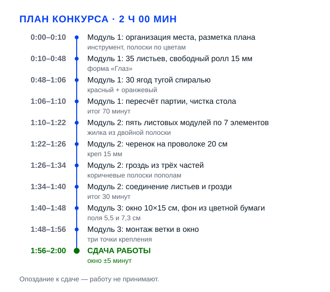
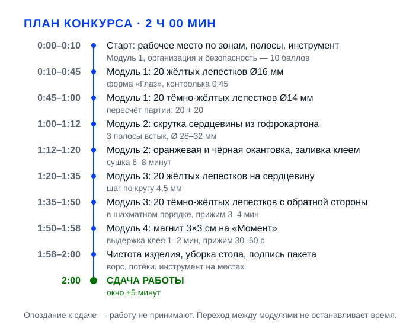
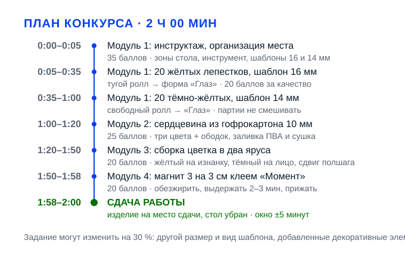

Квиллинг (ФВ)
Задания ниже — официальные файлы «Абилимпикс» (источник: abilympics-russia.ru), разложенные по категориям. Решения написаны по тексту задания, регламенту и критериям оценки; в них указано, что именно проверяет эксперт.
Школьник
14–16 лет, базовый уровень заданияВ официальном файле категории не разделены отдельными разделами — приводим задание целиком; различия по категориям смотрите в таблице модулей.
Пошаговое решение
Задание категории «Школьники» — открытка «Ветка рябины» в технике объёмного квиллинга. Работа состоит из трёх модулей с жёстким временем: 70 минут на элементы, 30 минут на сборку элементов в модули и 20 минут на саму открытку, всего 2 часа. За это время нужно сделать 35 листьев формой «Глаз» из зелёных полосок шириной 3 мм, распущенных в шаблоне до 15 мм, и 30 ягод тугой спиралью из красных и оранжевых полосок шириной 3 мм, затем собрать пять листовых модулей по семь элементов, скрутить черенок на проволоке 20 см, собрать гроздь из трёх частей и вклеить всё в окно 10 на 15 см. Сто баллов распределены так: 40 за подготовку элементов, 40 за сборку модулей и 20 за открытку. Главное, что стоит понять до старта: квиллинг не про скорость пальцев, а про одинаковость партии — тридцать пять листьев должны быть похожи друг на друга, иначе ветка рассыпается, какой бы аккуратной ни была рамка.

Задача 1. Развернуть рабочее место и подготовить материалыМодуль 1 · организация 2 балла + техника безопасности 5 баллов
До первого витка полоски стол должен быть разложен так, чтобы правая рука работала инструментом, а левая подавала полоску, не перекладывая ничего с места на место. Организация рабочего места и соблюдение техники безопасности — это семь баллов первого модуля, и они снимаются или сохраняются в первые десять минут: эксперт смотрит на стол в начале работы и возвращается к нему по ходу конкурса. Кроме баллов есть и практический смысл: за 70 минут нужно сделать 65 элементов, то есть меньше минуты на заготовку, и любое лишнее движение здесь стоит дороже, чем кажется.
Действие 1.1. Разложить инструмент и материалы по зонам
Шаг 1.1.1
Освобождаем стол 1000 на 600 мм полностью и раскладываем его на три зоны. Справа, ближе к корпусу, ставим инструмент для скручивания ручкой к себе и чуть под углом, чтобы кисть не задиралась; рядом кладём трафарет окружностей 1–36 мм лицевой стороной вверх, разворотом к работающей руке. Слева оставляем пинцет и ножницы, перед собой — лист белого картона как подложку, на которой скручиваем: на голом столе ролл «уезжает» и разматывается. Клей ПВА с дозатором ставим в тяжёлую неглубокую баночку или на блюдце, чтобы флакон не опрокинулся от движения локтя.
Это и есть те два балла за организацию рабочего места, которые в первом модуле вынесены отдельным критерием. Оценивается не красота натюрморта, а рабочий порядок: видно ли, что участник продумал, чем и где он будет работать. Практическая сторона не менее важна: при 65 заготовках за 70 минут каждое лишнее движение съедает секунды, и к концу модуля из них складываются минуты, которых не хватает на последние листья.
Проверьте себя простым тестом: сядьте ровно, положите руки на стол и посмотрите, достаёте ли вы до инструмента, трафарета и клея, не вставая и не наклоняясь к дальнему краю. Все три предмета должны быть в пределах предплечья, а зона перед грудью — свободна под подложку и разложенные полоски.
Самая частая ошибка — поставить клей в дальний угол «чтобы не мешал»: за час работы к нему тянутся не меньше семидесяти раз, и каждое движение через весь стол заканчивается либо перевёрнутым флаконом, либо каплей на картоне, которую потом придётся снимать с готовой работы.
Эксперт проходит вдоль столов в первые минуты и отмечает, разложены ли инструменты по зонам и есть ли на столе свободное место под работу. Второй раз он смотрит на стол в середине модуля: если к 40-й минуте всё перемешано, первый балл уже не вернуть.
Шаг 1.1.2
Отдельно готовим полоски: зелёные — в одну стопку или ячейку, красные и оранжевые — в другую, коричневые — в третью. Полоски шириной 3 мм легко слипаются торцами, поэтому не высыпаем весь набор на стол, а достаём по 10–15 штук и остальное держим в закрытой упаковке. Для листьев нужны только зелёные, для ягод только красные и оранжевые, и если они лежат вместе, вы неизбежно потянете не ту полоску в момент, когда ролл уже скручен и пальцы заняты.
Разделение по цвету — не эстетика, а прямая экономия времени и защита от брака. Критерий «качество созданных заготовок» стоит 30 баллов из 100, то есть три четверти первого модуля, и разноцветная заготовка в партии зелёных листьев — это уже потерянный балл, даже если форма идеальна. Красные и оранжевые ягоды по заданию идут вперемешку, но по отдельности от зелёных: гроздь должна читаться как ягоды, а не как случайные пятна.
Проверьте стопки на просвет: полоски должны быть одной ширины, без заломов, без надорванных кромок и без следов клея с прошлых работ. Разложите по 10–15 штук веером, кромкой к себе, — так их удобно брать, не пересчитывая.
Ошибка новичка — высыпать весь набор из 180 полосок на стол: они слипаются, путаются по цвету, а часть заминается под локтем. Из мятой полоски ролл всё равно получится, но витки лягут волной, и форма «Глаз» выйдет кривобокой.
Эксперт может попросить показать, где лежат полоски для листьев и где для ягод: это проверка того, осмысленно ли организовано рабочее место, а не только аккуратно ли оно выглядит.
Шаг 1.1.3
Проверяем инструмент и то, что можно брать своё. По особому указанию конкурсного задания участник этой категории имеет право взять на площадку собственный инструмент для скрутки роллов — если он привычнее казённого, берите его и держите в той же правой зоне. Обязательно осматриваем наконечник: прорезь должна быть ровной, без разлохмаченных краёв, а сам стержень — прямым. Ножницы проверяем на пробном разрезе полоски: если они мнут бумагу вместо того, чтобы резать, кромка будет рваной, и такой торец не приклеится ровно.
Инструмент — это пять баллов за технику безопасности и одновременно качество заготовок: тупой или погнутый наконечник рвёт полоску у самого основания, и вместо аккуратного центра ролла получается комок. Замена инструмента после старта не предусмотрена, поэтому всё, что вызывает сомнение, нужно выяснить и заменить до начала модуля, а не на двадцатом листе.
Возьмите обрезок полоски и скрутите три-четыре витка: полоска идёт ровно, не рвётся, не соскакивает с прорези, кромки остаются прямыми. Если витки ложатся плотно друг к другу без зазоров — инструмент в порядке.
Работать погнутым или слишком толстым стержнем: центр ролла выходит овальным, и при распуске в шаблоне такой ролл разворачивается неравномерно — с одной стороны витки упираются, с другой провисают. На тридцати пяти листьях это превратится в систематическую кривизну.
Эксперт смотрит на инструмент при обходе и на первые заготовки: ровный центр ролла виден сразу, и по нему судят о владении техникой. Если наконечник гуляет в прорези, ровного центра не будет ни в одной заготовке, и это эксперт видит по всей партии сразу.
Действие 1.2. Снять риски: техника безопасности и посадка
Шаг 1.2.1
Ножницы кладём кольцами к себе, а передаём только кольцами вперёд и не на весу, а опуская на стол рядом с человеком. Режем полоски только на подложке, короткими движениями, не направляя лезвия на собственную руку и не пытаясь перерезать сразу всю стопку. Проволоку для черенка не гнём у лица и не крутим в пальцах свободным концом к себе: обрезанный конец диаметром 0,3 мм входит под кожу легко и почти безболезненно, а замечаешь это уже с каплей крови на картоне.
Техника безопасности — это отдельные пять баллов в первом модуле, то есть больше, чем организация места и аккуратность с клеем вместе. Оценивается не декларация, а поведение: как участник берёт ножницы, куда смотрит кончик проволоки, не тянет ли инструмент на себя. Кроме баллов есть простая арифметика: порез или укол в середине модуля означает остановку, обработку руки и потерю темпа, после которой 65 заготовок уже не успеть.
Проверьте себя до старта: ножницы лежат кольцами к вам, проволока нарезана и убрана в сторону до момента сборки черенка, на столе нет открытого лезвия и инструмента, направленного остриём в вашу сторону. Руки сухие: скользкий стержень в мокрых пальцах — вторая по частоте причина порезов.
Типичная ошибка — держать ножницы в руке, пока говоришь, или «на секунду» положить их раскрытыми на стол: именно на раскрытые лезвия и приходятся случайные движения локтя, когда тянешься за полоской. Правило простое: ножницы либо в руке сомкнутыми, либо лежат на столе закрытыми.
Эксперт фиксирует соблюдение правил в течение всего модуля, и снижение идёт не за один эпизод, а за систематическое нарушение: те, кто работает безопасно по привычке, эти пять баллов забирают целиком.
Шаг 1.2.2
Ставим клей так, чтобы его нельзя было перевернуть, и сразу договариваемся с собой о правиле «капля на подложку, а не на полоску». Из дозатора ПВА выдавливаем небольшую каплю на край подложки или на блюдце и берём оттуда кисточкой или зубочисткой — так расход меньше, пятен на картоне нет, а проклеенный торец не размокает. Если работаете прямо из дозатора, держите его почти вертикально и давите коротко, на четверть секунды, иначе на полоску выходит капля размером с ягоду, и она теряет форму от воды.
Аккуратность использования клея — отдельный критерий на три балла, и он целиком относится к первому модулю, где вы работаете с заготовками. ПВА на цветной бумаге после высыхания даёт заметный глянцевый след и слегка стягивает бумагу, поэтому пятно невозможно «затереть»: его видно на просвет и под углом. Плюс размокшая полоска становится мягкой, ролл плывёт, и форма «Глаз» не держится.
Проверьте первую же заготовку: торец проклеен, но полоска сухая на ощупь, пятен на витках нет, клей не выступил на лицевую сторону. Если палец липнет к виткам — клея слишком много, вытрите его сразу влажной салфеткой, пока он не высох.
Наносить клей кисточкой по всей длине полоски «чтобы держалось крепче»: ролл размокает, витки слипаются в монолит, и распустить его в шаблоне до 15 мм уже не получится — заготовка идёт в брак, а время потеряно.
Эксперт осматривает готовые заготовки на просвет и под углом к свету: глянцевые пятна и наплывы клея видны сразу и снимают балл за аккуратность целиком, даже если форм-фактор выдержан.
Шаг 1.2.3
Садимся так, чтобы предплечья лежали на столе, а не висели: локти на уровне стола, спина на спинке стула, лист картона на расстоянии 25–30 см от глаз. Лампу, если она есть, ставим слева для правши так, чтобы тень от руки не падала на рабочую зону. Каждые 20 минут делаем короткую паузу на пять–десять секунд: посмотреть в дальнюю точку зала и разжать кисть — при работе с полоской 3 мм хват всё время мелкий, и кисть затекает быстрее, чем кажется.
Посадка входит в критерий организации рабочего места и напрямую влияет на качество: при висящем локте кисть дрожит, витки ложатся с зазором, а форма «Глаз» получается несимметричной. Освещение тоже оценивается косвенно — по ровности работы: в тени от собственной руки участник перестаёт видеть просветы между витками и не замечает, что ролл распустился не до 15 мм.
Проверьте три точки: стопы на полу, предплечья на столе, шея не наклонена вперёд больше чем на 20 градусов. Рабочая зона освещена ровно, без резкой тени от кисти, и вам видно просвет между витками ролла без наклона к столу.
Работать «на весу», подперев голову рукой, — частая ошибка на длинных модулях: к 50-й минуте кисть устаёт настолько, что последние листья выходят заметно хуже первых, а партия из 35 элементов оценивается целиком.
Эксперт отмечает посадку и освещение при первом обходе; кроме того, ровность партии к концу модуля он читает как следствие того, в каких условиях участник работал.
Действие 1.3. Разложить ровно два часа по операциям
Шаг 1.3.1
Прикидываем арифметику до старта и запоминаем четыре контрольные точки. На весь конкурс даётся 2 часа: 70 минут на элементы, 30 минут на модули, 20 минут на открытку. Внутри первого модуля 65 заготовок, значит на одну уходит меньше минуты, и первая контрольная точка — 35 листьев к 48-й минуте. Вторая — 30 ягод к 68-й минуте, чтобы остаток модуля ушёл на контроль партии и уборку стола. Если к 48-й минуте листьев меньше тридцати, дальше надо ускоряться, а не доделывать первые «до идеала».
Планирование времени прямо названо в требованиях к квалификации: участник должен уметь выполнять каждую процедуру в рамках заданного времени. Модули идут строго по 70, 30 и 20 минут, и время не переносится: недоделанные элементы не дадут собрать пять листовых модулей по семь штук, а это уже 40 баллов второго модуля и 20 баллов третьего, которые держатся на первых.
Контрольные точки лучше поставить не в голове, а на бумаге или на обороте подложки: «35 листьев — 48 мин, 30 ягод — 68 мин, модули — 1 ч 40 мин, открытка — 2 ч 00 мин». Сверяться с ними достаточно дважды за модуль, чаще — уже потеря времени.
Самая дорогая ошибка — увлечься первыми десятью листьями и вылизывать их до идеала: идеальные десять штук не собираются в модуль из семи элементов пять раз, а время на остальные двадцать пять уже ушло. Второй вариант той же ошибки — начать с ягод, потому что они проще: ягоды делаются быстрее, но листья занимают основной объём работы.
Эксперт следит за темпом по ходу модуля и в спорных случаях сверяет количество готовых элементов с прошедшим временем: равномерная работа видна, а рывок в последние десять минут — тоже.
Шаг 1.3.2
До старта продумываем компоновку открытки на бумаге: окно 10 на 15 см в картоне А4, внутри окна ветка — черенок идёт по диагонали от нижнего левого угла к верхнему правому, пять листовых модулей крепятся к нему в верхней половине, гроздь из ягод свисает в нижней. Набрасываем это карандашом на обороте черновика или просто держим в голове, но решение принимаем сейчас: в третьем модуле на раздумья остаётся 20 минут, и тратить их на поиск композиции нельзя.
Композиция оценивается в третьем модуле — за эстетичность оформления рамки и эстетичное восприятие изделия идёт по пять баллов. Но закладывается она в первом: если все пять листьев сделаны одинаково и смотрят в одну сторону, ветка читается; если листья разного размера, никакая рамка этого не исправит. Диагональ выбрана не из красоты, а из формата: окно 10 на 15 вытянуто по вертикали, и вертикальная ветка оставляет пустые поля по бокам.
Проверьте решение на черновике: нарисуйте прямоугольник 10 на 15 в масштабе и прикиньте, помещаются ли в него черенок 20 см с запасом на подгиб и гроздь из тридцати ягод. Если на рисунке ветка упирается в край — переносите её к центру, пока это ничего не стоит.
Начинать сборку без плана: типичный результат — черенок приклеен по центру, листья некуда деть, гроздь вылезает за окно, и работу приходится переклеивать на уже подсохшем картоне, оставляя следы. Итог — открытка без полей и с обрезанной гроздью.
Эксперт в третьем модуле смотрит на готовую открытку и на то, насколько композиция соответствует заявленной схеме: заранее продуманная диагональ читается как решение, а не как случайность.
Задача 2. Модуль 1: изготовить 35 листьев и 30 ягодМодуль 1 · 33 балла (заготовки 30 + аккуратность клея 3)
Семьдесят минут на 65 элементов — это конвейер, а не творчество: одна и та же последовательность движений повторяется тридцать пять раз для листьев и тридцать раз для ягод. Качество созданных заготовок стоит 30 баллов, то есть почти треть всей оценки, и оценивается партия целиком: важна не лучшая заготовка, а худшая, потому что именно она определяет, как выглядит ветка. Задача модуля — выйти на ровный темп и держать одинаковый размер, форму и цвет, а не вылизать первые пять штук.
Действие 2.1. Освоить свободный ролл до 15 мм
Шаг 2.1.1
Берём зелёную полоску шириной 3 мм, кладём её на подложку кромкой к себе и заводим кончик в прорезь инструмента на 2–3 мм, не глубже: если кончик уйдёт целиком, его потом не вытянуть, и первый виток пойдёт с заломом. Придерживаем полоску левой рукой в 2–3 см от инструмента, большим пальцем слегка прижимаем к подложке, и начинаем крутить правой рукой по часовой стрелке, подавая полоску с постоянным натяжением — не слабее, чем нужно, чтобы она не провисала, но и без рывка, от которого бумага рвётся у кромки.
Свободный ролл — базовая форма всего задания: из него делаются все 35 листьев, и именно на нём проверяется владение техникой. Критерий «качество созданных заготовок» весит 30 баллов, и первый признак, по которому он считается, — плотность и равномерность навивки: витки должны ложиться друг к другу без зазоров и без волн. Неравномерное натяжение потом не исправить ни шаблоном, ни клеем.
Проверьте первый ролл до снятия с инструмента: витки лежат ровно, зазоров между ними нет, диск плоский, без «талии» посередине, а конец полоски выходит наружу целым. Если диск получился конусом, значит, натяжение всё время менялось.
Тянуть полоску вверх от инструмента, а не вбок: тогда она идёт по кромке и рвётся на 10–15 см, а склеенный из двух кусков ролл даёт утолщение в центре и не распускается ровно. Вторая ошибка — крутить слишком быстро в начале и медленно в конце, из-за чего внутренние витки идут плотнее наружных.
Эксперт берёт в руки несколько заготовок и смотрит на торец: равномерность навивки и ровный центр видны без линейки, и по трём-четырём листьям он делает вывод обо всей партии.
Шаг 2.1.2
Снимаем ролл с инструмента и сразу кладём его в круг трафарета диаметром 15 мм — именно этот размер указан в задании для листьев. Ролл распускается сам, и задача участника — не мешать: дать ему развернуться до стенок круга, не подталкивая пальцем и не разминая. Если ролл распустился меньше, чем до 15 мм, помогите ему кончиком пинцета, разведя витки у внешнего края; если он норовит выйти за круг, придержите внешний виток тем же пинцетом на 5–7 секунд, пока бумага не успокоится.
Диаметр 15 мм прописан в конкурсном задании, и он определяет размер листа: семь таких элементов должны встать в модуль без нажима и без щелей. Партия из 35 деталей одного диаметра — это и есть тот признак, по которому эксперты отличают работу по схеме от работы «на глаз». Круг в трафарете нужен для того, чтобы размер не зависел от настроения: 15 мм получается у всех, если не лениться класть ролл в шаблон.
Проверьте диаметр по трафарету: ролл заполняет круг 15 мм, но не выпирает за него, и при взгляде сверху диск круглый, а не овальный. Внутренний просвет должен остаться — полностью затянутый ролл означает, что его перекрутили и он не распустился.
Распускать ролл «на глаз», без шаблона: разброс получается от 12 до 18 мм, и в модуле такие листья либо не стыкуются, либо торчат в стороны. Вторая ошибка — держать распущенный ролл в руке: от тепла и влаги пальцев бумага ведёт себя по-разному, и диаметр плывёт.
Эксперт прикладывает заготовки к шаблону или линейке: диаметр 15 мм — объективный параметр, и отклонение больше 1 мм читается как несоответствие схеме.
Шаг 2.1.3
Пинцетом, а не пальцами, переносим ролл из шаблона на подложку: пальцы сминают внешний виток и меняют диаметр. Держим пинцетом за внешний виток, ставим ролл на стол и прижимаем свободный конец полоски к соседнему витку, предварительно взяв микрокаплю ПВА зубочисткой или кисточкой. Держим 5–7 секунд, пока клей схватится, и только потом отпускаем — ПВА набирает первичную прочность не мгновенно, и если отпустить раньше, виток разойдётся на 1–2 мм уже после того, как вы переключились на следующий лист.
Фиксация конца клеем — обязательный шаг по заданию, и он же решает две задачи: ролл держит диаметр до момента формовки и не раскручивается при сборке модуля. Три балла за аккуратность использования клея относятся именно к этому движению: капля должна попасть на торец, а не на лицевую сторону витков, потому что ПВА на зелёной бумаге после высыхания даёт светлый глянцевый след.
Проверьте: конец приклеен, при лёгком подталкивании пинцетом ролл не разматывается, диаметр остался 15 мм, на лицевой стороне нет блеска. Салфетка после работы с заготовкой должна оставаться сухой. Если салфетка липнет, клея было много.
Прижимать конец пальцем, а не пинцетом: витки сминаются, и вместо плоского диска получается чечевица. Или капнуть клей «на глаз» из флакона — капля размером с полгорошины размачивает 3–4 витка, и лист потом не держит форму «Глаз».
Эксперт смотрит именно на места склейки: следы клея на витках, бугры и подтёки видны на просвет и снимают балл за аккуратность, а заодно и за качество заготовки.
Действие 2.2. Сделать 35 листьев формой «Глаз»
Шаг 2.2.1
Из зафиксированного ролла диаметром 15 мм формуем «Глаз»: берём заготовку большим и указательным пальцами с двух противоположных сторон и сжимаем до появления двух острых уголков. Сжимаем не одним движением, а коротко и точно, держим 2–3 секунды, отпускаем и смотрим: уголки должны быть на одной оси, симметрично относительно центра, а сам элемент — плоским, без прогиба в середине. Длина элемента по оси выходит примерно 20–22 мм при ширине около 11 мм — по этому соотношению и проверяется правильная форма.
«Глаз» — это форма с двумя сжатыми сторонами, и её легко спутать с «каплей», где сжимается только одна сторона. В задании для листьев рябины нужен именно «Глаз»: лист рябины симметричен относительно центральной жилки, и модуль из семи таких элементов читается как настоящий лист. Если двадцать из тридцати пяти будут «каплями», модуль перестанет быть симметричным, а «качество сборки в соответствии со схемой» — это 15 баллов второго модуля.
Приложите пять готовых элементов друг к другу: они должны совпадать по длине с точностью до 1–2 мм и по ширине до 1 мм. Проверьте симметрию, сложив элемент пополам по оси уголков: половинки должны совпасть.
Сжимать одной рукой, не придерживая второй: центр выдавливается в сторону, уголки встают под углом друг к другу, и такой лист в модуле разворачивается по своей оси. Вторая ошибка — сжимать слишком сильно, до полного схлопывания просвета: элемент становится плоской лодочкой и в модуле смотрится провалом.
Эксперт раскладывает партию и смотрит на однородность: 35 элементов с разной формой читаются как разный почерк, и оценка за качество заготовок идёт вниз пропорционально доле брака.
Шаг 2.2.2
Ставим темп на первые пять листьев, а не на все тридцать пять. Прогоняем полный цикл: скрутка 20–25 секунд, распуск в шаблоне 5–8 секунд, перенос и подклейка 5–7 секунд, формовка 3 секунды. Получается около 40–45 секунд на элемент, то есть 35 штук закрываются примерно за 25–26 минут, и у вас остаётся запас на ягоды и контроль. Первые пять делаем медленно и проверяем каждую, дальше идём в этом ритме без остановок на любование.
Темп — это не про скорость ради скорости: 70 минут модуля делятся между 65 элементами, и если на лист уходит полторы минуты, к концу модуля не хватит пятнадцати штук. Недоделанные элементы означают, что пять модулей по семь деталей собрать не из чего, а это сразу 40 баллов второго модуля и вся дальнейшая сборка.
Проверьте темп по часам после пятого листа: если первые пять заняли больше пяти минут, разберите, где тормозите — на скрутке, на шаблоне или на клее, и уберите лишние движения. Норма — пять листьев за 4 минуты.
Делать подряд сорок штук «на автомате», не проверив первые: ошибка в натяжении или в диаметре повторяется сорок раз, и переделывать приходится всю партию. Обратная ошибка — проверять каждый элемент линейкой, теряя по десять секунд на каждом.
Эксперт смотрит на ритм работы при обходе: равномерные движения и аккуратные готовые элементы говорят о владении техникой больше, чем рывок в конце модуля.
Шаг 2.2.3
Работаем партиями по 7–10 штук и складываем готовые листья в один лоток или на отдельный лист, уголками в одну сторону. Партия в семь штук — это ровно один листовой модуль, и такая раскладка сразу показывает, хватает ли элементов и одинаковы ли они: пять кучек по семь закрывают весь второй модуль без пересчёта. Кладите заготовки так, чтобы они не наезжали друг на друга: свежий клей ещё липнет, и слипшиеся элементы потом приходится разнимать, портя форму.
Раскладка по семь — прямой мостик ко второму модулю, где собираются пять модулей из семи элементов каждый, и это 20 баллов за качество сборки модулей. Кроме того, партия по семь сразу выявляет разброс: если в кучке из семи два элемента выпирают по длине, видно, что натяжение или шаблон нарушены, и следующие семь можно сделать ровнее.
Проверьте кучку из семи: элементы лежат в один слой, длина в кучке отличается не больше чем на 2 мм, все зелёные, без пятен клея. Пересчитайте кучки, когда их станет пять: должно быть ровно пять. Кучки должны лежать отдельно, не соприкасаясь клеем.
Сваливать всё в одну гору: к концу модуля не понять, сколько сделано, а слипшиеся от свежего клея элементы идут в брак. Вторая ошибка — считать в уме «вроде тридцать с чем-то»: пересчёт партиями занимает десять секунд и снимает весь риск.
Эксперт может пересчитать готовые элементы и соотнести их с раскладкой: понятная организация партии говорит о том, что участник контролирует процесс, а не надеется на память.
Шаг 2.2.4
Стрижём брак сразу, не откладывая на конец модуля: элемент с надорванным витком, с пятном клея, с несимметричными уголками или с диаметром меньше 14 мм отправляем в сторону и делаем замену тут же, пока инструмент и клей под рукой. На замену уходит 45 секунд, на переделку всей партии в конце модуля — уже не хватит времени. Помните, что тридцать пять — это минимум по заданию, и два-три лишних элемента в запасе спасают сборку, если один помнётся при переносе.
Партия оценивается по худшему элементу: тридцать идеальных и пять кривых дают впечатление небрежной работы, потому что кривые видно в первую очередь. Критерий «качество созданных заготовок» на 30 баллов означает, что брак надо отсекать на месте, а не надеяться, что в модуле его не заметят: в модуле все семь элементов лежат рядом и сравниваются друг с другом напрямую.
Отберите из готовых пять элементов наугад и положите рядом: они должны выглядеть как одна серия — одинаковая длина, одинаковая ширина, одинаковый зелёный. Если один выбивается, ищите причину в натяжении полоски.
Оставлять брак «пусть будет, вдруг пригодится»: он попадает в модуль первым, потому что лежит сверху, и портит общий вид. Вторая ошибка — переделывать один и тот же элемент трижды, теряя по две минуты на упрямство.
Эксперт осматривает партию целиком и отдельно откладывает элементы с дефектами: каждый такой экземпляр вычитается из оценки качества заготовок. Отложенные элементы он оставляет при работе, чтобы сверить их с теми, что пошли в сборку.
Действие 2.3. Сделать 30 ягод тугой спиралью
Шаг 2.3.1
Ягоды делаются иначе, чем листья: здесь нужна тугая спираль, без распуска в шаблоне. Берём красную или оранжевую полоску шириной 3 мм, заводим кончик в прорезь и крутим с сильным постоянным натяжением, прижимая виток к витку большим пальцем левой руки у самой точки навивки. Диск должен получаться плотным, без просветов и без «ступенек» между витками, диаметром около 10 мм из полной полоски 54 см. Чем плотнее скрутка, тем больше ягода похожа на ягоду, а не на колечко из бумаги.
Тугая спираль — второй базовый элемент задания, и в критериях он учитывается всеми тридцатью баллами за качество заготовок вместе с листьями. Разница принципиальная: распущенный ролл показывает форму, а тугая спираль показывает плотность и натяжение, то есть ровно то, чему учит объёмный квиллинг. Из тридцати ягод собирается гроздь из трёх частей, и если спирали рыхлые, гроздь разваливается ещё до приклеивания к картону.
Проверьте на просвет: между витками не должно быть света, торец выглядит как сплошной диск с тонкой спиральной линией. Диаметр всех ягод должен совпадать в пределах 1 мм, иначе гроздь получится бугристой.
Крутить с тем же натяжением, что и листья, — свободно: диск выходит рыхлым, и при подклейке конец утягивает витки внутрь, образуя воронку. Вторая ошибка — крутить «в руке», без опоры: полоска гуляет, и витки ложатся волной.
Эксперт смотрит на плотность скрутки под углом к свету: просветы между витками видны сразу, и рыхлая ягода читается как небрежность, даже если цвет и размер верные.
Шаг 2.3.2
Делим тридцать ягод между двумя цветами заранее, а не по ходу: примерно пятнадцать красных и пятнадцать оранжевых, чтобы гроздь читалась объёмно. Скручиваем партиями по десять и сразу подклеиваем конец микрокаплей ПВА, прижимая пинцетом 5 секунд. Порядок цветов лучше перемежать: две красные — одна оранжевая, иначе получится два цветных пятна вместо одной ветки.
Красный и оранжевый указаны в задании как основные цвета ягод, и их сочетание даёт тот самый эффект спелой рябины. Если сделать все ягоды одного цвета, гроздь выглядит плоским кружком, а «эстетичное восприятие изделия» — это 5 баллов третьего модуля, которые набираются как раз на таких деталях. Кроме того, при 30% изменении задания может быть добавлен другой цвет, и умение работать с двумя-тремя оттенками здесь пригодится.
Разложите готовые ягоды в две кучки по цветам и пересчитайте: в сумме тридцать, разница между кучками не больше трёх штук. Оттенки не должны сливаться: красный и оранжевый должны различаться на расстоянии вытянутой руки.
Смешивать цвета «как попало»: гроздь превращается в пёстрое пятно, и глаз не читает форму. Вторая ошибка — использовать розовый или бордовый вместо оранжевого, потому что набор лежит рядом: по заданию цвета конкретные.
Эксперт оценивает гроздь в сборе и цветовую гармонию в третьем модуле; на этапе заготовок он смотрит, соблюдены ли заявленные цвета. Если цвета подобраны по заданию, гроздь читается даже на расстоянии вытянутой руки.
Шаг 2.3.3
Держим ягоды одинаковыми по размеру: каждую промеряем не линейкой, а «на глаз по стопке» — ставим новую рядом с предыдущей, и если она заметно больше, подтягиваем натяжение. Полная полоска 54 см даёт диск около 10 мм; если ягода вышла больше, значит, витки легли свободно, а если меньше — полоска была короче или вы начали с середины. Одиннадцать-двенадцать миллиметров в грозди из тридцати штук заметны сразу, потому что они лежат вплотную.
Одинаковый размер — это то, что делает гроздь гроздью: тридцать ягод приклеиваются друг к другу, и разнокалиберные просто не стыкуются, оставляя дыры. Плюс качество заготовок оценивается по партии, а партия из тридцати деталей с разбросом в 3 мм выглядит как брак, даже если каждая по отдельности выполнена правильно.
Поставьте десять ягод в ряд и приложите линейку сверху: отклонение по диаметру не больше 1 мм. Если две-три выбиваются — замените их сейчас, пока есть полоски. Так же проверьте цвет: десять ягод подряд должны читаться как одна серия, без выбивающегося оттенка.
Гнать количество в ущерб размеру: тридцать рыхлых ягод разного диаметра придётся переделывать, а времени во втором модуле на это нет. Вторая ошибка — скручивать ягоды из обрезков разной длины, не замечая, что они короче.
Эксперт сравнивает ягоды между собой, а не с эталоном: однородность партии — прямой показатель владения техникой. Разнокалиберные ягоды он находит, просто поставив несколько штук в ряд.
Действие 2.4. Закрыть модуль: контроль партии и порядок на столе
Шаг 2.4.1
За десять минут до конца модуля останавливаем производство и считаем: тридцать пять листьев «Глаз», тридцать ягод, разложенных по цветам. Если чего-то не хватает, доделываем именно недостающее и именно в том размере, который уже есть в партии, а не «как получится». Лишние элементы не выбрасываем: два-три запасных листа и несколько ягод пригодятся, если что-то помнётся при сборке модуля.
Пересчёт — это управление риском: пять модулей по семь листьев требуют ровно тридцать пять элементов, и нехватка даже одного означает, что один модуль неполный, а «качество сборки модулей» стоит 20 баллов. Досчитывать в спешке в начале второго модуля хуже, чем спокойно доделать сейчас: во втором модуле на всё про всё 30 минут, и он начинается со склейки, а не с изготовления.
Проверьте по кучкам: пять кучек по семь листьев и тридцать ягод, разложенных на красные и оранжевые. Кучки полные, элементы в них одной длины и одной формы, пятен клея нет. Сверьте с планом: 35 и 30 — это цифры из задания, а не «примерно столько».
Округлять «примерно тридцать пять»: чаще всего не хватает двух-трёх элементов, и обнаруживается это в момент, когда модуль уже собран на семь, а восьмого взять негде. Вторая ошибка — доделывать недостающие в другом размере, нарушая однородность партии.
Эксперт сверяет количество с заданием: тридцать пять и тридцать — это проверяемые цифры, и недобор фиксируется как невыполнение модуля. Участник, который сам называет количество до пересчёта, вызывает больше доверия, чем тот, кто считает сбивчиво.
Шаг 2.4.2
Убираем стол до состояния, в котором за него не стыдно вернуться: обрезки и бумажную пыль сметаем в контейнер, полоски складываем в упаковку по цветам, клей закрываем, инструмент кладём на место, пинцет — остриём от себя. Пятна клея с подложки снимаем влажной салфеткой, пока они не высохли: на подсушенном ПВА картон рвётся, и подложка становится непригодной для следующего модуля.
Порядок на столе входит в критерий организации рабочего места, а он оценивается не только в начале, но и по ходу конкурса. Практический смысл тоже прямой: во втором модуле вы будете работать с клеем на большой площади, и обрезки, попавшие под картон, оставят бугры под готовой открыткой. Бумажная пыль прилипает к мокрому клею и остаётся внутри изделия навсегда.
Проверьте подложку на просвет и на ощупь: сухая, без липких мест, без обрезков. На столе остались только материалы, которые понадобятся во втором модуле: зелёная полоска, коричневые полоски, проволока, крепированная бумага, ножницы, пинцет и клей.
Оставлять обрезки на столе: они прилипают к клеевому слою и попадают в открытку, а убрать их оттуда, не повредив витки, почти невозможно. Вторая ошибка — закрыть клей, не протерев носик: ПВА засыхает пробкой, и в ответственный момент дозатор приходится разбирать.
Эксперт проходит по столам между модулями: чистый стол и разложенные по местам материалы читаются как контроль над процессом. Отдельно отмечается, закрыт ли клей и убран ли инструмент из рабочей зоны.
Шаг 2.4.3
Перед переходом ко второму модулю проходим по готовой партии глазами эксперта: берём пять листьев и три ягоды, кладём рядом и смотрим на четыре параметра — размер, форму, цвет, чистоту. Эта минута стоит дороже, чем ещё один элемент: именно здесь видно, что вся партия пойдёт в сборку ровно, и не нужно ли что-то спешно заменить. Смотрите не на отдельные элементы, а на партию как на серию.
Модуль 1 заканчивается, и его результат — 33 балла за заготовки и клей. Переделывать что-то после того, как модуль закрыт, уже не позволит время: модули идут последовательно по 70, 30 и 20 минут. Поэтому контрольная проверка делается сейчас, когда замена ещё возможна и стоит 45 секунд.
Все четыре параметра совпадают у всей партии: длина листьев в пределах 2 мм, форма «Глаз» симметрична, ягоды плотные и одного диаметра, на лицевой стороне нет блеска от клея. Если всё так — модуль закрыт, можно переходить к сборке.
Пропустить этот шаг и сразу начать склейку: через десять минут выясняется, что часть листьев помялась, пока лежала под другими, и заменить их уже некогда — второй модуль идёт по своему таймеру. Проверка занимает минуту и делается до того, как открыт второй модуль.
Эксперт оценивает модуль по готовым заготовкам в момент перехода: он видит и партию, и то, как участник её проверил. Этот момент перехода фиксируется в протоколе отдельной строкой по первому модулю.
Задача 3. Модуль 2: собрать листья и гроздь в модулиМодуль 2 · 40 баллов (схема 15 + модули 20 + крепление 10)
Тридцать минут на то, чтобы превратить 65 плоских элементов в два объёмных модуля: лист на черенке и гроздь рябины. Здесь баллы делятся на три части — качество сборки в соответствии со схемой (15 баллов), качество сборки модулей (20 баллов) и качество крепления элементов (10 баллов), то есть оценивается и правильность последовательности, и прочность, и аккуратность стыков. Модуль короткий, и в нём нет времени на переклейку: ПВА на бумаге схватывается за минуту, а оторвать приклеенный элемент без следа практически невозможно.
Действие 3.1. Собрать пять листовых модулей по семь элементов
Шаг 3.1.1
Начинаем с основания листа: берём зелёную полоску шириной 3 мм и складываем её пополам, совместив концы, затем промазываем одну половину по всей длине тонким слоем ПВА и приклеиваем вторую половину к первой, разглаживая пальцем через чистый лист бумаги. Получается полоска двойной толщины — это центральная жилка, к которой будут крепиться элементы. Сгиб делаем острым, прижав его ногтем или краем линейки, иначе верхушка листа выйдет мягкой и развалится при первом же прикосновении пинцетом.
Двойная полоска — это и есть «скелет» листа: она держит форму и не даёт семи элементам разъехаться. Критерий «качество сборки в соответствии со схемой» стоит 15 баллов, и первое, что проверяется, — соблюдена ли последовательность, описанная в задании: сначала полоска, сложенная и склеенная, потом элементы. Если приклеивать элементы к одинарной полоске, она прогибается под их весом, и лист выходит дугой.
Проверьте заготовку: полоска склеена по всей длине, без пузырей, сгиб острый, двойная толщина чувствуется на ощупь, концы сходятся ровно. На просвет не должно быть тёмных пятен клея между слоями. Проведите по полоске ногтем: бугорки выдадут пузыри.
Промазывать полоску клеем из флакона: бумага размокает и тянется, длина увеличивается, а после высыхания полоску ведёт винтом. Вторая ошибка — складывать полоску, не совместив концы: один край окажется длиннее, и лист будет перекошен.
Эксперт проверяет именно жилку: она должна быть ровной, двойной и без следов клея по краям, потому что она видна на готовой открытке. Проверяет он и толщину: двойная полоска должна быть склеена по всей длине, а не только по краям.
Шаг 3.1.2
Раскладываем семь элементов «Глаз» на подложке в форме листа: один элемент ставим по оси вверх уголком к верхушке, по три с каждой стороны — симметрично, уголками наружу, так чтобы соседние элементы касались друг друга боками. Сначала выкладываем всю семёрку без клея и смотрим, как она собирается: если элементы наезжают друг на друга, значит, они разного размера, и это надо увидеть до того, как клей схватится.
Раскладка без клея — единственный способ проверить модуль до того, как он станет неисправимым: пять листьев должны встать в один ряд по семь элементов, и «качество сборки в соответствии со схемой» стоит 15 баллов из 40 во втором модуле. Если элементы разного размера, это выясняется именно на примерке, когда их ещё можно заменить из партии, а не после того, как семь деталей приклеены и лист перекошен клином.
Проверьте раскладку до склейки: симметрия относительно центральной оси, все семь элементов на месте, между ними нет просветов больше 1 мм, общий контур напоминает лист рябины, а не звезду. Приложите линейку по оси: элемент на верхушке должен стоять ровно по центру.
Укладывать семь элементов по кругу, как цветок: лист рябины вытянут по оси, и круговая раскладка читается как ромашка. Вторая ошибка — клеить элементы по одному, не выложив предварительно всю схему: к пятому элементу композиция уже уехала в сторону.
Эксперт сравнивает готовый лист со схемой из задания: последовательность из семи элементов и симметрия читаются сразу, и это первая половина пятнадцати баллов за схему.
Шаг 3.1.3
Приклеиваем элементы к жилке по одному, начиная с верхнего и двигаясь вниз парами: капля ПВА на боковую грань элемента в двух точках — у основания и у середины, прижим пинцетом 5 секунд, затем следующая пара. Клей наносим на боковую грань, а не на плоскость: тогда элемент встаёт к жилке ребром, и лист получается объёмным, как и требует техника. Между парами делаем паузу в 10–15 секунд, чтобы предыдущая схватилась и не поехала под пальцами.
Крепление элементов — это отдельные 10 баллов модуля, и оценивается оно и прочностью, и аккуратностью: элемент должен держаться за жилку, а не висеть на капле сбоку. Клей по плоскости делает соединение плоским, и объёмный квиллинг превращается в аппликацию — эксперт это видит по тени, которую лист отбрасывает на картон.
Проверьте готовый лист: поднимите его пинцетом за жилку — элементы не должны провисать и отходить. Между элементом и жилкой нет щели, клей не выступил на лицевую сторону, все семь элементов на месте. Проверьте крайние элементы: они держатся так же, как центральные.
Капать клей на всю плоскость элемента: он прилипает плашмя, лишается объёма, а излишки выступают по краям и после высыхания блестят. Вторая ошибка — прижимать пальцем: элемент сминается, и его приходится выбрасывать уже приклеенным.
Эксперт проверяет прочность, аккуратно потянув за крайние элементы: отклеившийся элемент — минус из десяти баллов за крепление. Особое внимание — семи стыкам: именно там чаще всего остаётся незакрытая щель.
Шаг 3.1.4
Собираем так все пять модулей, укладывая готовые листья в один ряд верхушками в одну сторону, и следим, чтобы они не соприкасались клеем. Пять модулей по семь элементов — это ровно тридцать пять заготовок, и остаётся проверить, что листья одинаковы по размеру: если один вышел на 3–4 мм длиннее, он будет выделяться на ветке, и лучше поставить его в нижнюю часть, ближе к черенку, где разница не так заметна.
Качество сборки модулей — 20 баллов, и здесь оценивается однородность: пять листьев на одном черенке стоят рядом, и разница в размере или наклоне читается как небрежность. Раскладка в один ряд нужна и практически: вы сразу видите всю серию и можете отсортировать элементы по размеру, не перебирая их в конце.
Проверьте ряд из пяти: длина отличается не больше чем на 2–3 мм, уголки направлены в одну сторону, все жилки ровные. Пересчитайте элементы в каждом — по семь. Пять листьев должны укладываться в окно 10 на 15 см с запасом по ширине.
Собирать модули в спешке и складывать их в кучу: свежий клей схватывается под весом соседних листьев, и они слипаются в блок, который потом приходится разнимать, ломая витки. Разнимать слипшиеся листья приходится пинцетом, и часть витков при этом сминается.
Эксперт оценивает серию целиком: пять одинаковых листьев — это признак серийной, отработанной работы, а не пяти отдельных попыток. Если один лист выбивается по длине, он виден в серии сразу и снимает балл за сборку модулей.
Действие 3.2. Сделать черенок на проволоке 20 см
Шаг 3.2.1
Отмеряем и отрезаем проволоку длиной 20 см — ровно столько указано в задании. Отмерять лучше по линейке, а не «на глаз»: черенок длиннее двадцати сантиметров не встанет в окно 10 на 15 по диагонали, и его придётся укорачивать уже обмотанным, осыпая бумагу. Концы проволоки сразу подгибаем плоскогубцами или ножницами на 2–3 мм в крючок: открытый срез диаметром 0,3 мм рвёт бумагу изнутри и цепляется за картон при монтаже.
Двадцать сантиметров и подогнутые концы — это одновременно требование задания и техника безопасности, за которую в первом модуле дают 5 баллов. Подогнутый кончик не проткнёт крепированную бумагу при намотке и не вылезет наружу на готовой открытке, где его уже ничем не замаскировать. Проволока 0,3 мм тонкая и пружинит, поэтому крючок делается двумя движениями, а не скручиванием.
Проверьте: длина ровно 20 см по линейке, оба конца загнуты, проволока прямая, без изломов и «колен». Изогнутый черенок потом не ляжет по диагонали окна и будет отходить от картона. Концы не должны выступать за обмотку ни на миллиметр.
Оставить концы открытыми: они цепляют бумагу при обмотке, рвут её изнутри, а острый срез может поцарапать картон или руку. Вторая ошибка — отрезать проволоку «примерно» и получить 25 см, которые не помещаются в окно.
Эксперт проверяет длину черенка и то, обработаны ли концы: неровная проволока видна на готовой работе как бугор под бумагой. Длина двадцать сантиметров — проверяемый параметр, и он сверяется с заданием прямо на месте.
Шаг 3.2.2
Берём крепированную бумагу шириной 15 мм, отрезаем полосу длиной около 25 см и начинаем обмотку: промазываем кончик проволоки каплей ПВА, прижимаем к нему край бумаги под углом примерно 45 градусов и делаем первый виток с натягом, закрывая срез. Дальше ведём бумагу по спирали, каждый следующий виток перекрывает предыдущий примерно на треть ширины, то есть на 5 мм из 15, и всё время подтягиваем полосу левой рукой, чтобы она ложилась плотно, без свободных колец.
Обмотка превращает проволоку в черенок, и качество этой операции видно в третьем модуле, когда ветка приклеена к картону: редкие витки дают просветы, через которые блестит металл, а слабое натяжение — «гармошку» из бумаги. Крепированная бумага тянется, поэтому натяжение можно держать постоянным, слегка растягивая полосу при намотке: она сама себя фиксирует на проволоке.
Проверьте обмотку по всей длине: просветов нет, металл не виден, витки ложатся ровно, без перекосов, бумага не разошлась у концов. Проведите пальцем — поверхность должна быть гладкой, без бугров. У концов обмотка должна быть такой же плотной, как в середине.
Мотать без натяжения: витки съезжают, между ними появляются щели, и черенок выглядит намотанным наспех. Вторая ошибка — перекрывать витки полностью, внахлёст на всю ширину: черенок получается толстым, и листья к нему не приклеиваются ровно.
Эксперт смотрит на черенок в готовой открытке: ровная обмотка без просветов читается как аккуратность, а торчащие витки — как брак. Ровная обмотка проверяется на ощупь, а не только на глаз: бугры чувствуются пальцем.
Шаг 3.2.3
Закрепляем конец обмотки: промазываем последние 5 мм бумаги ПВА, прижимаем к проволоке и держим 10 секунд пинцетом, затем отрезаем лишнее ножницами вплотную к витку. Если бумага скользит, каплю клея можно нанести и на сам виток сверху, но совсем немного — иначе на черенке останется глянцевое пятно. Готовый черенок откладываем отдельно, чтобы он не прилип к листьям.
Незакреплённый конец раскручивается при монтаже, и черенок распускается прямо на картоне — исправить это уже нельзя, не снимая всю ветку. Аккуратность обмотки входит в «качество крепления элементов» — 10 баллов модуля, и в эту же оценку идёт то, как выглядит место стыка бумаги.
Проверьте: конец держится, при потягивании за него обмотка не едет, торчащего хвостика нет, поверхность черенка ровная по всей длине, на концах бумага закрывает подогнутые крючки. Проверьте на просвет: металл внутри обмотки не должен угадываться.
Оставить хвостик бумаги длиной 3–4 мм: он разлохматится и будет торчать из-под листьев на готовой открытке. Вторая ошибка — закрепить конец скотчем, которого нет в перечне материалов и который блестит на просвет.
Эксперт берёт черенок за концы и слегка прокручивает: обмотка не должна съезжать. Это и есть проверка прочности, которая входит в баллы за крепление. Если обмотка съезжает, он отмечает это как дефект крепления, а не как мелочь отделки.
Действие 3.3. Собрать гроздь из тридцати ягод
Шаг 3.3.1
Готовим веточки: коричневые полоски разрезаем пополам, получая отрезки по 27 см, и складываем каждый пополам, но не прижимаем сгиб — он должен остаться округлым, как черешок ягоды. На каждую ягоду нужна своя веточка, значит, тридцать отрезков: их удобнее нарезать сразу все и разложить рядом с ягодами, чем отрезать по одному в процессе, когда руки заняты клеем.
Задание прямо говорит: коричневые полоски разрезать пополам, сложить и приклеить кончики к ягодкам, предварительно загнув их. Полоска коричневого цвета — это и есть черешок, и его длина определяет, насколько гроздь выглядит естественно. Если веточки будут разной длины, гроздь получится растрёпанной, а «качество сборки модулей» — это 20 баллов.
Проверьте нарезку: тридцать отрезков, длина одинаковая, сгибы округлые, без заломов. Разложите их пучком — так видно, что количество совпадает с количеством ягод. Тридцать отрезков удобно разложить по десять штук — так пересчёт занимает секунды.
Резать полоски на глаз, получая отрезки от 20 до 32 см: гроздь выйдет неравномерной, а часть веточек окажется короче нужного и ягода приклеится вплотную к стволу. Вторая ошибка — прижать сгиб ногтем: остаётся белый след, и черешок выглядит надломленным.
Эксперт оценивает гроздь как единый модуль: одинаковая длина черешков читается как аккуратная, выверенная работа. Тридцать черешков одинаковой длины — это ещё и признак того, что участник работал по плану.
Шаг 3.3.2
Приклеиваем ягоды к веточкам: у каждого отрезка слегка загибаем оба кончика на 2–3 мм, смазываем их микрокаплей ПВА и прижимаем к боку ягоды так, чтобы бумага легла по касательной к диску, а не торцом. Держим пинцетом 5–7 секунд. Загиб нужен потому, что плоский кончик к круглому боку приклеивается только точкой и отваливается при первой же подвижке; загнутый повторяет изгиб ягоды и держится на площади.
Крепление ягод к веточкам — самая хрупкая часть всей работы: каждая ягода висит на бумаге, и в критериях это 10 баллов за качество крепления. Если кончики не загнуты, соединение получается точечным, и при сборке грозди, когда ягоды поджимают друг к другу, половина отваливается. Заново приклеить оторванную ягоду можно, но след от клея на диске останется.
Возьмите одну готовую ягоду за веточку и слегка потрясите: соединение держит, ягода не проворачивается, клей не выступил на лицо диска. Веточка выходит из ягоды по касательной, а не торчит из центра. Проверьте три-четыре ягоды подряд, а не одну.
Приклеивать кончик веточки к центру диска: он закрывает спираль, и ягода перестаёт читаться как виток. Вторая ошибка — брать много клея: он выступает вокруг веточки и после высыхания образует белое кольцо.
Эксперт проверяет несколько ягод на прочность, придерживая гроздь за веточки: отклеившиеся ягоды видны сразу и снимают баллы за крепление. Проверяет он и то, не выступил ли клей на лицо диска: белое кольцо вокруг веточки видно сразу.
Шаг 3.3.3
Собираем гроздь из трёх модулей: делим тридцать ягод на три части примерно по десять и склеиваем ягоды друг с другом боками, начиная с нижней, самой крупной части. Склеиваем полоски одну к другой — так, как сказано в задании: сначала внутри каждой десятки ягоды соединяются между собой каплей клея по бокам, затем три готовые части соединяются в одну большую гроздь. Собираем на подложке, придерживая конструкцию пинцетом, а не пальцами.
Три модуля, соединённые в один, — это и есть требуемая по заданию гроздь, и последовательность «сначала десятки, потом вместе» прописана в критерии «качество сборки в соответствии со схемой» на 15 баллов. Собирать сразу все тридцать в один ком невозможно: конструкция разваливается, пока клей не схватился, а собирать по частям — значит держать в руках по десять ягод, что реально.
Проверьте гроздь: три части читаются, соединения между ними плотные, форма напоминает треугольник, подвешенный за верхушку, общий размер не больше 6–7 см в поперечнике, иначе гроздь не встанет в окно рядом с листьями.
Склеивать все тридцать ягод одним махом: клей не успевает схватиться, и гроздь расползается в лепёшку. Вторая ошибка — делать гроздь слишком большой, «чтобы было видно»: в окне 10 на 15 она закроет листья, и композиция потеряет смысл.
Эксперт смотрит на гроздь в сборе: читается ли она как единый объём и не рассыпается ли при переносе. Это вторая половина баллов за сборку модулей. Он может приподнять гроздь за верхнюю ягоду: конструкция должна держаться как одно целое.
Шаг 3.3.4
Даём грозди подсохнуть 2–3 минуты под грузом-подложкой: накрываем чистым листом бумаги и кладём сверху лёгкий предмет, например линейку или пустую упаковку от полосок. Плоские ягоды после такой выдержки держат плоскость и не топорщатся при приклеивании к картону. Убираем подложку аккуратно, сдвигая её в сторону, а не поднимая вверх, чтобы не оторвать ягоды.
Просушка под грузом — приём, который экономит время во третьем модуле: гроздь уже плоская и не будет отходить от листа, когда её прижмут. В критериях это работает на «качество крепления модулей» — 5 баллов третьего модуля, и на «эстетичное восприятие изделия» — ещё 5. Мокрая гроздь при монтаже сдвигается под пальцем, и след от сдвига на картоне остаётся навсегда.
Проверьте: гроздь лежит на подложке без зазоров, приподнимите её пинцетом за верхнюю ягоду — нижние не отходят, конструкция держится как одно целое, клей на картоне под ней не отпечатался. Подложка должна сниматься без сопротивления: если тянет, клей ещё сырой.
Ставить груз прямо на ягоды без прокладки: витки сминаются, глянцевые пятна клея отпечатываются на листе. Вторая ошибка — не сушить вообще и сразу приклеивать гроздь: она отходит от картона через минуту.
Эксперт проверяет гроздь на плоскости: если она топорщится и стоит под углом к картону, это видно на просвет. Плоская гроздь ложится на фон без зазора, и это видно по тени, которую она отбрасывает.
Действие 3.4. Соединить листья и гроздь на черенке
Шаг 3.4.1
Приклеиваем листья к черенку: раскладываем пять готовых модулей вдоль черенка, начиная от верхнего конца, с шагом около 2,5–3 см, и крепим каждый основанием жилки к обмотке каплей ПВА, прижимая пинцетом 7–10 секунд. Верхний лист ставим почти у самого кончика, нижний — примерно на середине черенка, чтобы нижняя половина осталась свободной под гроздь. Листья разворачиваем в одну сторону, слегка веером.
Приклеивание листьев к черенку — прямое требование задания, и от него зависит «качество крепления элементов» на 10 баллов. Шаг в 2,5–3 см выбран из длины: пять листьев на 20 см черенка с запасом на гроздь внизу. Если поставить листья вплотную, ветка превращается в комок, и на готовой открытке не читается ни один лист.
Проверьте: пять листьев на месте, расстояние между основаниями одинаковое, листья не отходят от черенка при лёгком потягивании, верхний не выходит за кончик проволоки, нижняя часть черенка свободна. Расстояние между основаниями сверяйте линейкой на просвет.
Приклеивать листья на всю плоскость жилки: она ложится плашмя, и лист теряет объём. Вторая ошибка — крепить листья к одному месту черенка: получается пучок, а не ветка. Третья ошибка — клеить листья к обмотке на весу, не положив ветку на подложку.
Эксперт смотрит на ветку целиком: равномерность шага и единое направление листьев читаются как признак продуманной сборки. Проверяет он и прочность: ветку приподнимают за черенок и смотрят, не отходят ли листья.
Шаг 3.4.2
Соединяем гроздь с черенком: верхнюю ягоду грозди крепим к свободной нижней части черенка каплей ПВА, прижимая пинцетом 10 секунд, и дополнительно подклеиваем коричневой полоской-перемычкой — коротким отрезком, который закрывает место стыка и делает соединение прочным. Гроздь должна свисать вниз и чуть в сторону, а не висеть строго по оси: у рябины гроздь всегда сдвинута, и это придаёт ветке естественность.
Соединение грозди с черенком — самый нагруженный узел всей работы: гроздь тяжёлая, тридцать ягод на бумажных веточках, и при переносе открытки нагрузка идёт именно сюда. Перемычка из коричневой полоски не украшение, а конструктивный элемент, и она входит в 10 баллов за качество крепления.
Проверьте: поднимите ветку за черенок и слегка встряхните — гроздь не отходит, стык закрыт полоской, клей не выступил на ягоды, общая длина ветки с гроздью не превышает 20–22 см. Стык должен быть закрыт бумагой полностью, без просвета до ягоды.
Крепить гроздь одной каплей клея без перемычки: она отваливается при переносе, и на картоне остаётся пустое место с пятном ПВА. Вторая ошибка — приклеить гроздь выше листьев: ветка переворачивается и читается как ошибка композиции.
Эксперт проверяет именно этот стык: он виден на готовой работе и легко проверяется на прочность. Если стык закрыт полоской и проклеен, гроздь не отходит даже при наклоне работы на 45 градусов.
Шаг 3.4.3
Кладём готовую ветку на белый картон и проверяем, как она ложится: черенок должен идти по диагонали, листья — не выходить за пределы будущего окна 10 на 15 см, гроздь — помещаться в нижней половине. Если ветка не вписывается, сейчас самое время подрезать черенок на 2–3 см или развернуть гроздь, потому что после приклеивания к картону исправлять будет нечего.
Это последняя проверка перед третьим модулем, где на всю сборку открытки даётся 20 минут. Примерка на картоне занимает минуту, а спасает от самой обидной потери: если ветка на 2 см длиннее окна, её придётся подрезать уже приклеенной, и обмотка на срезе размотается. Композиция при этом оценивается на 5 баллов за эстетичное восприятие.
Проверьте по линейке: длина ветки от кончика черенка до нижней ягоды не больше 18 см, ширина всей конструкции не больше 12 см, то есть ветка входит в окно 10 на 15 с полями по 1–2 см с каждой стороны.
Начинать третий модуль, не примерив ветку: половина ошибок с композицией происходит именно так — ветка не влезает в окно, и её подрезают на месте, портя обмотку. Исправление на уже приклеенной ветке почти всегда оставляет пятно на фоне.
Эксперт видит готовую открытку и оценивает, насколько ветка вписана в окно: примерить заранее — значит получить поля и воздух вокруг работы. Поля вокруг ветки внутри окна он видит сразу: они должны быть одинаковыми с обеих сторон.
Задача 4. Модуль 3: собрать открытку с окном 10 на 15Модуль 3 · 20 баллов (рамка 5 + крепление 5 + сборка 5 + восприятие 5)
Двадцать минут на то, чтобы ветка стала открыткой: разметить и вырезать окно 10 на 15 см в картоне, закрыть его цветной бумагой того же размера, посадить на неё готовую ветку и привести работу в вид, который не стыдно сдать. Баллы модуля делятся ровно на четыре части по пять: эстетичность рамки, качество крепления модулей, качество сборки и общее эстетичное восприятие. Здесь уже ничего не переделывается — картон не терпит исправлений, поэтому каждое движение делается один раз и наверняка.
Действие 4.1. Разметить и вырезать окно, закрыть его цветной бумагой
Шаг 4.1.1
Кладём белый картон формата А4 глянцевой стороной вверх и размечаем окно 10 на 15 см строго по центру: по ширине поля получаются по 5,5 см (21 см минус 10, делим на два), по высоте — по 7,3 см (29,7 минус 15, делим на два). Линии проводим карандашом под линейку, тонко, без нажима, и обязательно проверяем диагонали прямоугольника: они должны быть равны. Равные диагонали — единственный надёжный признак того, что окно получилось прямоугольным, а не трапецией.
Эстетичность оформления рамки — 5 баллов третьего модуля, и оценивается она по ровности полей: кривое окно видно сразу, даже если ветка внутри сделана идеально. Пропорции 10 на 15 даны в задании, и отступать от них нельзя: ветка примерялась именно под этот размер. Ровные поля по 5,5 и 7,3 см дают работе воздух, без которого объёмная ветка выглядит втиснутой в рамку.
Проверьте разметку до разреза: диагонали равны, все четыре угла прямые (проверяется угольником или углом любого листа), размеры ровно 100 на 150 мм по линейке, поля симметричны. Карандашные линии тонкие и не продавили картон.
Размечать «на глаз» от края: поля выходят разной ширины, и работа выглядит перекошенной. Вторая ошибка — давить на карандаш: на глянцевом картоне остаётся борозда, которая не стирается и видна на готовой открытке под косым светом.
Эксперт прикладывает линейку к краю окна: ровность и размеры проверяются объективно, и это первая половина пяти баллов за рамку. Отдельно проверяются диагонали: при равных диагоналях окно гарантированно прямоугольное.
Шаг 4.1.2
Вырезаем окно, начиная с прокола в центре: ножницами делаем небольшой надрез посередине, затем ведём разрез от центра к линии разметки и дальше по линии до угла, поворачивая картон, а не ножницы. Режем по внутренней стороне линии, чтобы карандашный след остался снаружи и потом стёрся. Углы дорезаем от угла окна к уже сделанному разрезу — так они получаются острыми и без «уступов», которые появляются, если пытаться вырезать прямоугольник одним непрерывным движением.
Ровный край окна — это и есть рамка, за которую дают 5 баллов: лохматый или волнистый срез виден на белом картоне как тёмная полоса, и замаскировать его нечем. Резать от центра нужно потому, что ножницы не могут начать резать с края листа, не сделав прокол, а прокол в углу оставляет рваную дыру именно там, где сходятся два поля.
Проверьте: срез ровный по всем четырём сторонам, углы прямые и острые, размер окна ровно 100 на 150 мм, карандашные линии остались снаружи и стираются ластиком без следа. Картон не расслоился по краю.
Резать ножницами «по воздуху», поворачивая руку: линия уходит в сторону на 2–3 мм, и окно получается с волной. Вторая ошибка — начать с угла: прокол рвёт картон, и угол окна выглядит размочаленным. Резать тупыми ножницами так же плохо: картон рвётся по кромке.
Эксперт осматривает край окна на просвет: ровность среза и чистота углов — это то, что видно в первую очередь. Углы он осматривает придирчивее всего: именно там видны следы неудачного прокола.
Шаг 4.1.3
Закрываем окно цветной бумагой: отрезаем лист 10 на 15 см, прикладываем с обратной стороны картона так, чтобы он точно совпал с вырезанным окном, и приклеиваем по периметру, отступив от края 5 мм, тонкой полосой ПВА. Клей наносим кисточкой по четырём сторонам, а не по всей площади: цветная бумага от сплошного промазывания идёт волной, и в окне появляются бугры и тени. Прижимаем через чистый лист бумаги и держим 15–20 секунд.
Цветная бумага — это фон, на котором читается ветка: по заданию ею декорируется окно 10 на 15. Фон должен быть спокойным и контрастным к зелени и красному: светлый или нейтральный, иначе гроздь теряется. Проклейка по периметру вместо сплошной нужна потому, что в окне бумага должна лежать плоско — от волны на ней падают тени, и «эстетичное восприятие изделия» (5 баллов) уходит вниз.
Проверьте: бумага в окне лежит без пузырей и волн, при взгляде под углом поверхность гладкая, края бумаги не выглядывают за окно и не образуют зазора, клей не выступил на лицевую сторону фона. Проведите ладонью по фону: волны чувствуются на ощупь раньше, чем видны.
Промазывать цветную бумагу целиком: она растягивается от влаги, и после высыхания в окне появляются волны, которые невозможно разгладить. Вторая ошибка — взять бумагу меньше окна: тогда по краю остаётся белая полоса, и рамка выглядит недоделанной.
Эксперт смотрит на окно с фоном под углом к свету: волны и следы клея видны как неровности, и это снимает баллы и за рамку, и за восприятие. Он смотрит и на цвет фона: он должен оттенять ветку, а не спорить с ней по насыщенности.
Действие 4.2. Посадить ветку в окно
Шаг 4.2.1
Прикладываем готовую ветку к окну на фон и находим её окончательное положение: черенок по диагонали от нижнего левого угла к верхнему правому, гроздь в нижней половине, листья в верхней. Отмечаем карандашом на фоне две-три точки — начало и конец черенка и место крепления грозди, — затем убираем ветку и смотрим на пустое окно: точки должны делить диагональ примерно на три части, и от каждого края окна до работы должно остаться по 1–1,5 см воздуха.
Разметка точек до приклеивания — это страховка от главной ошибки третьего модуля, когда ветку приклеивают на глаз, а потом выясняется, что она сдвинута в сторону и с одной стороны поля нет, а с другой — пустота в четыре сантиметра. Ровные поля вокруг работы — это ровно то, за что дают «эстетичное восприятие изделия», 5 баллов.
Проверьте: точки видны, расстояние от крайних элементов ветки до края окна одинаковое с обеих сторон (допуск 5 мм), гроздь не касается нижнего края окна, верхний лист не упирается в верхнюю кромку. Точки ставьте тонко, чтобы их можно было стереть без следа.
Приклеивать сразу, без разметки: сдвинуть приклеенную ветку уже нельзя, а попытка оторвать её оставляет на фоне пятно и разлохмаченный след. Вторая ошибка — ставить ветку строго по центру: диагональ в вытянутом окне читается динамичнее, вертикаль выглядит статичной.
Эксперт оценивает композицию в момент, когда работа уже собрана: симметричные поля и читаемая диагональ — признак того, что участник думал о расположении.
Шаг 4.2.2
Крепим ветку: наносим каплю ПВА на кончик черенка, на его середину и на место стыка с гроздью, прижимаем пинцетом по 7–10 секунд в каждой точке. Клей наносим на обмотку черенка, а не на фон, и следим, чтобы капля не растекалась: ПВА на цветной бумаге даёт глянцевое пятно, которое невозможно убрать. Гроздь приклеиваем за верхнюю ягоду и за две-три нижние, чтобы она легла на фон всей плоскостью.
Качество крепления модулей — 5 баллов третьего модуля, и проверяется оно просто: эксперт берёт открытку и слегка наклоняет её. Три точки крепления черенка нужны потому, что двадцатисантиметровая проволока работает как рычаг: при двух точках кончик отходит от фона, а при одной ветка проворачивается вокруг капли.
Проверьте: наклоните открытку на 45 градусов и слегка встряхните — ветка не отходит, гроздь лежит плоско, ни один элемент не топорщится. Под веткой нет выступившего клея, фон чистый. Проверьте черенок у кончика: он не должен отходить от фона.
Капать клей на фон и прижимать ветку сверху: излишки выходят по краям и блестят. Вторая ошибка — крепить только черенок, не фиксируя гроздь: она остаётся висеть на весу и на открытке выглядит как отслоившаяся деталь.
Эксперт проверяет крепление лёгким наклоном работы: это стандартный приём, и отклеившиеся элементы видны сразу. Отдельно фиксируется, сколько точек крепления у черенка: две — уже риск, три — норма.
Шаг 4.2.3
Убираем карандашные точки и случайные следы: стираем мягким ластиком по направлению от ветки к краю, придерживая картон второй рукой, чтобы не смять приклеенные элементы. Пятна клея снимаем влажной салфеткой, промокая, а не растирая: растёртый ПВА размазывается по глянцу и оставляет матовое пятно размером с монету. Ластик держите под углом, а не плашмя: плашмя он размазывает графит по глянцу.
Чистота фона напрямую входит в пять баллов за эстетичное восприятие: открытка с карандашными крестиками и следами клея читается как недоделанная, даже если ветка сделана идеально. Стирать от ветки к краю нужно потому, что крошки ластика сметаются наружу и не забиваются под витки, откуда их уже не вытряхнуть.
Проверьте фон на просвет и под углом: карандашных линий нет, пятен клея нет, крошек ластика нет, край окна чистый. Белизна картона ровная, без затёртых мест. Посмотрите на картон сбоку: затёртых матовых мест быть не должно.
Тереть ластиком по приклеенной ветке: витки сминаются, а крошки ластика забиваются между элементами. Вторая ошибка — пытаться стереть подсохший клей ногтем: остаётся ворсистое пятно на глянцевом картоне.
Эксперт осматривает фон в самом конце, когда работа уже сдана: чистота полей входит в оценку восприятия. Карандашные точки и крошки ластика он находит на белом картоне без всякого увеличения.
Действие 4.3. Довести работу и проверить её на просвет
Шаг 4.3.1
Кладём открытку под груз на 2–3 минуты: чистый лист бумаги сверху, затем ровный нетяжёлый предмет, например пустая упаковка от набора полосок. Это прижимает все клеевые точки по всей площади и снимает «память» бумаги — витки, которые слегка оттопыривались, ложатся на место. Снимаем груз аккуратно, сдвигая его в сторону, и не раньше чем через две минуты: ПВА набирает рабочую прочность как раз за это время.
Просушка под грузом — то, что отличает аккуратно сданную работу от работы, у которой к моменту оценки отходят уголки. В критериях это работает на «качество сборки открытки» (5 баллов) и на «качество крепления модулей» (5 баллов). Без груза ветка подсохнет неровно, и на просвет будут видны просветы между ягодами и фоном.
Проверьте: открытка лежит на столе плоско, без «лодочки», при нажатии пальцем на разные участки ничего не щёлкает, клей не липнет. Углы картона не загнуты. Приложите линейку по диагонали: картон не должен выгибаться дугой.
Ставить тяжёлый груз: картон прогибается, ягоды сминаются, и на работе остаются вмятины. Вторая ошибка — снять груз через десять секунд: клей ещё не схватился, и всё возвращается на прежние места. Груз должен быть лёгким: открытка — это бумага, а не доска.
Эксперт оценивает работу на плоскости: если картон выгнут или элементы топорщатся, это видно при первом же взгляде сбоку. Он проверяет и клеевые точки: липкий след на фоне означает, что работа сдана сырой.
Шаг 4.3.2
Проверяем открытку на просвет и с расстояния: поднимаем её к свету и смотрим, нет ли щелей между ягодами грозди и фоном, не просвечивает ли металл черенка, нет ли белых полос по краю окна. Потом отходим на два шага и смотрим на работу целиком: читается ли ветка, не перевешивает ли одна часть композиции, не спорит ли цвет фона с цветом листьев. Если что-то смущает, лучше признать это про себя, чем трогать готовую работу.
Так выглядит проверка на «эстетичное восприятие изделия» — последние 5 баллов модуля. На просвет видно то, чего не видно сверху: просветы и непроклеенные места. С двух шагов видно то, чего не видно вблизи: общий баланс, который и оценивает эксперт, когда подходит к столу.
Проверьте по списку: окно ровное, поля одинаковые, ветка читается по диагонали, гроздь не срезана краем окна, просветов между элементами и фоном нет, металл не блестит, фон чистый. Работа узнаётся как ветка рябины без объяснений.
Смотреть на работу только вблизи и сверху: просветы и перекосы видны именно с расстояния и под углом. Вторая ошибка — поправлять композицию на уже приклеенной работе: любые движения оставляют следы на фоне.
Эксперт подходит к работе с двух-трёх точек: сначала сверху, затем сбоку под углом к свету — именно так проявляются и объём, и огрехи сборки. С расстояния двух шагов видно, читается ли ветка как ветка, а не как набор деталей.
Шаг 4.3.3
Последняя минута модуля — на приведение стола в порядок рядом с работой: обрезки картона и бумаги в контейнер, ножницы и пинцет на место, клей закрыт. Открытку не трогаем и не переставляем с места на место: каждое перемещение — это риск зацепить лист. Оставляем её лежать на подложке в том положении, в котором её будет оценивать эксперт. Обрезки убираем в контейнер, а не под подложку: под ней они поцарапают следующую работу.
Порядок на столе оценивается по ходу всего конкурса, и последняя минута тоже считается. Кроме того, открытка, оставленная на чистом столе в центре, читается лучше, чем работа, окружённая обрезками: впечатление от изделия складывается и от того, как оно предъявлено. Трогать работу лишний раз не нужно — витки держатся на клеевых точках, которые ещё не набрали полной прочности.
Проверьте: стол чистый, инструмент убран, клей закрыт, открытка лежит по центру подложки, ничего на неё не опирается. До конца модуля остаётся не больше минуты, и тратить её на переделку уже поздно. Обрезки сметайте со стола, а не сдувайте: они летят на соседние работы.
Хватать открытку, чтобы показать соседу или переложить в другое место: в этот момент чаще всего отклеивается гроздь и сминаются листья. Вторая ошибка — оставить открытку среди обрезков, где её край задевают при уборке.
Эксперт обходит работы после сигнала: аккуратно предъявленная работа и чистый стол создают то первое впечатление, с которым потом сверяются баллы. Порядок вокруг работы он отмечает в том же проходе, что и саму открытку.
Задача 5. Сдать работу в срок и закрыть площадкуФиниш · время фиксируется, опоздание не принимается
Общее время конкурса — 2 часа, и открытка должна быть сдана до конца третьего модуля. Отдельных баллов за сдачу нет, но несданная работа не оценивается вовсе, поэтому последние минуты планируются так же тщательно, как и первые. Здесь же закрывается рабочее место: обрезки, инструмент и материалы возвращаются в исходное состояние, а сама открытка остаётся лежать там, где её увидят.
Действие 5.1. Убрать место, сдать работу и назвать её
Шаг 5.1.1
За две минуты до конца модуля проверяем часы и прекращаем любые доработки: всё, что не приклеено сейчас, приклеивать уже не нужно. Основное правило тайминга: 70 минут на элементы, 30 на модули, 20 на открытку, и если на третьем модуле вы всё ещё правите листья, значит, время ушло на первых двух. Смотрим на работу целиком и решаем: сдаём как есть. Доработки после сигнала всё равно не засчитываются, а испортить готовое ими можно.
Время модулей в задании жёсткое, и работа, не собранная к концу третьего модуля, оценивается как незаконченная — при том что все 100 баллов распределены по трём модулям. Лучше сдать работу с чуть неровным полем, чем не сдать вовсе: 20 баллов третьего модуля набираются и на почти готовой открытке, а на несданной не набираются вообще.
Проверьте по контрольным точкам: 35 листьев к 48-й минуте, 30 ягод к 68-й, пять листовых модулей и гроздь к 1 ч 40 мин, открытка к 2 ч 00 мин. Если вы уложились — у вас есть запас, и он уходит на проверку, а не на переделку.
Продолжать доклеивать после сигнала: работу отодвинут, и недоклеенный элемент останется лежать рядом, а не на месте. Вторая ошибка — начать разбирать неудачный участок за минуту до сдачи: почти всегда это заканчивается испорченным фоном.
Эксперт фиксирует время сдачи по факту и в спорной ситуации сверяется с общими часами площадки, а не с часами участника. Работа, сданная с опозданием, к оценке не принимается, и это правило действует без исключений.
Шаг 5.1.2
Убираем рабочее место полностью: обрезки бумаги и картона в контейнер, полоски в упаковку, инструмент для скручивания и пинцет на место, ножницы сомкнутыми кольцами к себе, клей закрыт и протёрт, проволока и остатки крепированной бумаги сданы. Подложку протираем, стол оставляем пустым, кроме сданной работы. Всё, что брали своё, забираем с собой: по правилам площадки личные инструменты уносятся участником.
Организация рабочего места оценивается на всём протяжении конкурса, и финальное состояние стола — часть этой оценки. Практическая сторона тоже есть: обрезки проволоки и бумаги на столе — это риск, о который цепляются рукава и работы соседей, а площадка общая, и требования техники безопасности действуют до выхода из зала.
Проверьте: на столе нет ничего, кроме сданной открытки, пол сухой и чистый, инструмент на местах, личные вещи собраны, мусор в контейнере. Стол выглядит так, как выглядел до старта. Контейнер с обрезками должен быть закрыт или убран с площадки.
Сложить всё в кучу «на краю стола» и уйти: это читается как незакрытая работа, и балл за организацию места снимается. Вторая ошибка — оставить на столе открытый клей: он пачкает работы соседей при уборке.
Эксперт проходит по площадке после сдачи: чистое место и аккуратно сданная работа завершают впечатление от участника. Сданная работа остаётся лежать на столе до конца обхода, и трогать её уже не нужно.
Шаг 5.1.3
Называем работу так, как она называется в задании, — открытка «Ветка рябины» в технике объёмного квиллинга, и коротко говорим, из чего она собрана: 35 листьев формой «Глаз» из полосок 3 мм, распущенных до 15 мм, 30 ягод тугой спиралью, пять листовых модулей по семь элементов, гроздь из трёх частей, окно 10 на 15 см. Если эксперт задаёт вопрос, отвечаем по факту, без догадок, и не приписываем работе того, чего в ней нет.
Такое короткое описание — это не формальность, а способ показать, что участник понимает собственную работу: в требованиях к квалификации прямо названы знание основных модулей и техник выполнения. Эксперт, который слышит точные цифры из задания, видит осознанную работу, а не случайный результат, и в спорных пограничных случаях это работает в пользу участника.
Проверьте, что можете назвать без запинки: размер полосок (3 мм), диаметр распуска листьев (15 мм), количество элементов (35 и 30), длину черенка (20 см), размер окна (10 на 15 см). Эти пять цифр и есть содержание работы.
Отвечать «ну, я делал по образцу» или путаться в цифрах: это читается как отсутствие понимания технологии, хотя работа может быть сделана хорошо. Вторая ошибка — спорить с экспертом по оценке на площадке: апелляция подаётся после, а не в момент сдачи.
Эксперт задаёт один-два вопроса по технологии: как делались листья, как собиралась гроздь. Ответ по существу подтверждает, что работа сделана участником и осмысленно.
Студент
учащиеся колледжей и техникумовВ официальном файле категории не разделены отдельными разделами — приводим задание целиком; различия по категориям смотрите в таблице модулей.
Пошаговое решение
Конкурсное задание категории «Студенты» — магнит «Подсолнух» в технике объёмного квиллинга, и на него отведено два часа. Работа идёт в четыре модуля: 60 минут на сорок лепестков из полос шириной 3 мм (двадцать жёлтых диаметром 16 мм и двадцать тёмно-жёлтых диаметром 14 мм), 20 минут на сердцевину из гофрокартона 10 мм с оранжево-чёрной окантовкой, 30 минут на сборку цветка в два ряда и 10 минут на вклейку плоского магнита 3×3 см клеем «Момент». Сто баллов распределены так: 35 за элементы, 25 за сердцевину, 20 за сборку цветка и 20 за магнит, причём 10 баллов первого модуля дают за организацию места и технику безопасности ещё до первого лепестка. Главный риск не в сложности формы, а в темпе: полторы минуты на лепесток, пауза на сушку залитой клеем сердцевины и схватывание «Момента» за минуту. Поэтому решение построено как процесс с контрольными точками на 0:45, 1:00, 1:20 и 1:50.

Задача 1. Подготовить рабочее место, полосы и инструментМодуль 1 · 10 баллов из 35 (организация 5 + безопасность 5)
Первые десять минут конкурса не приносят баллов за красоту, но именно они решают, хватит ли вам потом времени на сорок лепестков. По критериям модуля 1 организация рабочего места стоит 5 баллов, соблюдение техники безопасности — ещё 5, и это самые дешёвые баллы из ста возможных: их получают без единого элемента квиллинга, только за порядок на столе и правильное обращение с инструментом. Здесь же вы принимаете решение о темпе — на 60 минут модуля приходится 40 лепестков, то есть полторы минуты на лепесток, и любая потерянная на поиске ножниц минута потом вычитается из качества.
Действие 1.1. Развернуть стол по зонам
Шаг 1.1.1
Садимся за рабочий стол 1000×600 мм и сразу делим его на зоны, не дожидаясь сигнала старта. Слева, в дальнем углу, кладём три набора полосок шириной 3 мм — жёлтые и тёмно-жёлтые отдельными кучками, кромками в одну сторону. По центру, строго перед грудью, остаётся площадка примерно 300×250 мм: здесь лягут шаблон окружностей, пинцет и баночка ПВА. Справа ставим два листа белого картона — на один складываем жёлтые элементы, на второй тёмно-жёлтые, брак идёт в коробочку у края стола. Гофрокартон 10 мм убираем в пакет: он понадобится только после 1:00.
Деление на зоны — это и есть критерий «организация рабочего места» на 5 баллов, который эксперт выставляет в первые минуты. Практическая сторона важнее: при сорока однотипных деталях рука должна находить полосу, шаблон и клей не глядя, иначе на каждом элементе теряется пять-семь секунд. Отдельные лотки для двух цветов нужны потому, что лепестки отличаются только оттенком, и перепутанная партия обнаруживается уже на сборке.
Проверьте себя просто: сядьте, положите руки на стол и попробуйте, не поворачивая головы, дотянуться до полос, шаблона, пинцета и клея. Всё должно оказаться в пределах вытянутой руки, а центр стола — остаться свободным. Если на рабочей площадке уже лежат ножницы, стаканчик и телефон, зона не разобрана.
Самая частая ошибка — свалить все полосы в общую кучу «разберу по ходу»: через двадцать минут жёлтые и тёмно-жёлтые перемешиваются, начинается поиск оттенка, и партия выходит разноцветной. Вторая — поставить клей и ножницы в центр: рабочая площадка сужается до ладони, и элементы приходится скручивать на весу.
Эксперт обходит площадку в первые пять-семь минут и смотрит именно на планировку: есть ли зоны, свободен ли центр, лежат ли материалы так, чтобы работать, а не искать. Дальше он возвращается к этому критерию, если видит, что участник мечется по столу.
Шаг 1.1.2
Раскладываем инструмент в том порядке, в котором им будем пользоваться. Палочку для скручивания кладём справа от рабочей площадки, прорезью вверх и ручкой к себе: так её берут одним движением. Пинцет — слева, браншами к центру: извлекать ролл из шаблона удобнее левой рукой, а правой придерживать. Ножницы убираем в дальний правый угол — они нужны редко, но лежат остро. Шаблон 1–36 мм ставим перед собой и проверяем, что отверстия 14 и 16 мм не забиты ворсом. Клей ПВА переливаем в баночку с узким носиком, а «Момент» закрываем: он нужен только в модуле 4.
Порядок инструмента экономит секунды на каждом из сорока элементов, а в сумме — те минуты, которых не хватает в конце. Кроме того, владение техникой объёмного квиллинга на 5 баллов эксперт оценивает по тому, как участник держит палочку и пинцет: суетливые перехваты читаются как неуверенность. Закрытый «Момент» — вопрос безопасности: его пары ощутимы, а открытый тюбик сохнет.
Инструмент лежит так, что каждый предмет берётся одним движением и возвращается на своё место; на рабочей площадке нет ничего, кроме полос, ролла и клея. Проверьте шаблон: через отверстие 16 мм должна свободно проходить игла палочки, а край отверстия — быть гладким, без заусенца, который цепляет бумагу.
Класть инструмент «куда получилось» — потом палочка оказывается под лотком, а ножницы под локтем. Вторая ошибка — открыть «Момент» заранее, «чтобы был под рукой»: он высыхает за двадцать минут и начинает пахнуть на всю площадку, а работа с ним до сборки бессмысленна.
Эксперт отмечает, как организован инструмент и как участник им владеет: берёт ли палочку за ручку, работает ли пинцетом, а не пальцами, где лежат ножницы. Это часть критерия «владение техникой» — 5 баллов.
Шаг 1.1.3
Перебираем полосы до старта и отбраковываем то, что испортит лепесток. Нужны полосы шириной 3 мм, длиной 54 см, плотностью около 120 г/м²: в наборе их 180 штук, и три набора закрывают 40 элементов с запасом. Каждую полосу проводим между пальцами — она должна быть упругой, без заломов, без волнистой кромки и следов влаги. Полосы с надрывом у торца, с расслоением и с пятнами сразу откладываем: при скрутке такой участок даст ступеньку, и ролл пойдёт овалом. Отобранные делим на две кучки и пересчитываем: по двадцать плюс запас на цвет.
Качество заготовок — 20 баллов, самая крупная позиция модуля 1, и оно начинается с качества полосы. Дефектная полоса не скручивается равномерно: витки ложатся с перекосом, диаметр после шаблона гуляет на 1–2 мм, и элемент уже не «Глаз», а бесформенная капля. Пересчёт до старта нужен, чтобы не обнаружить нехватку на тридцатом лепестке, когда время модуля почти исчерпано, а замена материала возможна только через главного эксперта.
Полоса ровная по всей длине, кромки параллельны, при сгибании в кольцо не ломается и не расслаивается. На просвет нет светлых полос — они говорят о перетирании волокна. Пересчёт сошёлся: 20 + 20 плюс запас, и вы точно знаете, где лежит резерв.
Брать полосу с надорванным торцом «всё равно отрежу»: надрыв идёт дальше по волокну, и ролл рвётся в самый неподходящий момент — на последних витках. Вторая ошибка — не пересчитать полосы: нехватка выясняется в конце модуля, когда дописать партию уже нельзя.
Эксперт может подойти и посмотреть, как участник обращается с материалом: берёт ли полосу за кромку, не мнёт ли её, отбраковывает ли дефектные. Это входит в качество заготовок и в организацию работы.
Действие 1.2. Снять риски: осанка, руки, клей
Шаг 1.2.1
Регулируем посадку под мелкую работу, которой предстоит два часа подряд. Стул поднимаем так, чтобы предплечья лежали на столешнице, а локти были чуть ниже её уровня. Спину держим прямо, корпус в 10–15 см от края стола, расстояние от глаз до площадки — 35–40 см: ближе болит шея, дальше не видно просвета между витком и стенкой шаблона. Лампу ставим слева и чуть впереди, если вы правша, чтобы тень от руки не падала на отверстие 14–16 мм.
Ровная посадка и свет — не формальность, а условие точности: диаметр 16 мм на глаз отличается от 17 мм только при хорошем освещении. Для участников с нарушением зрения и слуха в КЗ предусмотрены лампа, крупный шрифт описания и сурдопереводчик, но принцип тот же: настроить место до старта, а не в процессе. Уставшая за два часа рука роняет точность сильнее любой ошибки в технике.
Проверьте три вещи: локти на столе и не свисают, между корпусом и краем стола проходит ладонь, тень от правой руки не закрывает отверстие шаблона 14–16 мм. Через сорок минут работы плечи не должны быть подняты — если подняты, стул слишком низкий.
Сесть «как удобно» на край стула, сгорбившись над столом: через полчаса начинает тянуть шею, взгляд уходит с шаблона, и диаметр перестаёт контролироваться. Вторая ошибка — лампа справа у правши: тень падает точно на рабочую точку.
Эксперт смотрит на посадку и освещение как на часть организации рабочего места; отдельно фиксируется, созданы ли условия, соответствующие нозологии участника.
Шаг 1.2.2
Договариваемся с собой о правилах обращения с тем, что режет и клеит. Палочку держим за деревянную ручку, металлический кончик направляем вниз и от себя, на стол кладём прорезью вверх. Ножницы передаём ручками вперёд, режем только от себя и никогда на весу. Клей ПВА наносим кисточкой, излишек сразу убираем сухой салфеткой, а не растираем пальцем: растёртый ПВА даёт блестящее пятно, которое видно всегда. «Момент» вскрываем только в модуле 4, короткими порциями, при открытом окне, и не наклоняемся над тюбиком.
Соблюдение техники безопасности — 5 баллов, столько же, сколько даёт вся организация места. За критерием стоит реальный риск: «Момент» содержит растворитель, и его пары в непроветриваемом помещении дают головную боль уже через десять минут. Аккуратность с клеем оценивают и отдельно: потёк на торце ролла не даёт лепестку приклеиться плоско.
Проверьте, что ручки ножниц смотрят на вас, палочка лежит прорезью вверх, а на столе нет открытого «Момента». Пятен клея на столешнице и на пальцах быть не должно — руки перед каждым элементом сухие. Если клей попал на полосу, эта полоса идёт в брак, а не в работу.
Самая частая ошибка — выдавить ПВА «с горкой» и размазать по полосе: ролл выходит влажным, бумага разбухает, диаметр уходит на 1–2 мм, а после сушки лепесток ведёт винтом. Вторая — держать «Момент» открытым в течение всего конкурса: к моменту сборки магнита он загустеет и перестанет схватывать.
Эксперт наблюдает за обращением с инструментом всё время работы и отдельно проверяет, нет ли на изделии клеевых следов. Нарушение правил безопасности — единственный критерий, по которому балл снимают немедленно и без обсуждения.
Шаг 1.2.3
Проверяем, что на площадке нет запрещённого и есть всё разрешённое. По разделу «Особые указания» участник категории «Студенты» может взять свой инструмент для скрутки: если вы привыкли к своей палочке с прорезью, положите её рядом с выданной и работайте той, что даёт ровный край. Нельзя проносить спиннер, гаджеты и собственные материалы: полосы, гофрокартон, магниты и клей выдаёт организатор, и подмена материала — нарушение процедуры. Телефон убираем в сумку, сумку — под стол.
Этот пункт прямо прописан в конкурсном задании, и его проверяют до старта. Свой инструмент разрешён именно потому, что техника скрутки индивидуальна: кому-то удобнее тонкая игла, кому-то палочка с широкой прорезью, и разница в скорости на сорока элементах ощутима. А запрет на свои материалы защищает равенство условий: если у одного полоса плотнее или гофра выше, сравнение качества заготовок на 20 баллов теряет смысл.
На столе только выданное плюс, при необходимости, свой инструмент для скрутки. Гаджетов, спиннера и личных материалов нет ни на столе, ни под рукой. Если сомневаетесь, можно ли чем-то пользоваться, — спросите эксперта до старта, а не после замечания.
Принести свои полосы «на всякий случай»: даже если они не понадобятся, факт обнаружения трактуется как нарушение, и работу могут не оценивать. Вторая ошибка — держать телефон на столе для таймера: гаджеты запрещены, а время объявляют эксперты.
Проверка стола на запрещённые предметы идёт до старта; эксперт отмечает наличие личного инструмента для скрутки как разрешённое, а гаджеты — как нарушение.
Действие 1.3. Разложить время и сделать эталон
Шаг 1.3.1
Раскладываем 120 минут конкурса по модулям так, как они заданы в КЗ, и запоминаем контрольные точки. Модуль 1 — подготовка элементов — 60 минут, до 1:00; модуль 2 — сердцевина из гофрокартона — 20 минут, до 1:20; модуль 3 — сборка цветка — 30 минут, до 1:50; модуль 4 — сборка магнита — 10 минут, до 2:00. Внутри первого модуля ставим две отсечки: к 0:45 готовы двадцать жёлтых лепестков 16 мм, к 1:00 — двадцать тёмно-жёлтых 14 мм. Если к 0:45 готово меньше пятнадцати, темп меняем сразу.
Сорок лепестков за 60 минут — полторы минуты на элемент вместе с контролем, и арифметика жёсткая. Модули идут последовательно и с фиксированным временем, поэтому «догнать» на сборке нельзя: модуль 4 стоит 20 баллов и длится 10 минут. Промежуточные отсечки нужны, чтобы решение о смене темпа принималось на середине, а не в 1:55.
К 0:45 на лотке лежит 20 жёлтых лепестков, к 1:00 — 20 тёмно-жёлтых; в 1:00 вы убираете полосы 3 мм и достаёте гофрокартон. Проверить просто: посчитайте готовые элементы, не отрываясь от работы, — счёт должен совпадать с планом, а не «примерно».
Самая частая ошибка — выравнивать все сорок лепестков «до идеала» и застрять на двадцатом: качество одного элемента стоит доли балла, а недоделанный цветок — двадцать. Вторая ошибка — не смотреть на часы вообще и узнать о конце модуля от эксперта.
Эксперт объявляет время по контрольным точкам и в конце модулей фиксирует, на каком этапе находится работа. Умение держать темп входит в организацию рабочего места.
Шаг 1.3.2
Первый элемент делаем как эталон и не торопимся: скручиваем жёлтую полосу в тугой ролл, распускаем в шаблоне ровно до 16 мм, извлекаем пинцетом, каплей ПВА фиксируем конец, формуем «Глаз». Лепесток кладём отдельно и сверяем с ним все следующие: по диаметру в широкой части, по длине, по углу зажима. Заодно подбираем дозу клея — столько, чтобы капля держала конец, но не выступала за торец. На эталон уйдёт две-три минуты, и они окупятся на всей партии.
Эталон — единственный способ удержать одинаковость сорока деталей: глаз быстро привыкает к тому, что видит, и без образца партия «плывёт» по размеру. Качество созданных элементов — 20 баллов, и оценивают его именно по однородности: лепестки должны быть парными, потому что в цветке они лежат рядом и разница в 2 мм видна как дефект сборки. Подобранная на эталоне доза клея потом повторяется автоматически.
Эталон измерим: ширина 16 мм по наружным точкам, длина около 24–26 мм, зажимы симметричны, конец подклеен без наплыва. Проверьте линейкой или отверстием шаблона: эталон должен входить в 16 мм с небольшим зазором, а в 14 мм — не входить.
Сделать эталон «примерно» и потом равняться на него: ошибка тиражируется сорок раз. Вторая ошибка — зафиксировать конец большой каплей ПВА: она выступает за торец, и лепесток не ложится на сердцевину плоско, а встаёт клином.
Эксперт смотрит на первые элементы внимательно: по ним видно, насколько участник владеет техникой объёмного квиллинга (5 баллов) и умеет держать размер.
Шаг 1.3.3
Готовим места под будущие партии, чтобы элементы не смешивались и не слипались. На правый лоток кладём лист белого картона и проводим на нём две зоны: «16 мм — жёлтые, 20 шт» и «14 мм — тёмно-жёлтые, 20 шт». Можно расчертить сетку 4×5 под каждый цвет — тогда сразу видно, сколько сделано и сколько осталось, и не нужно пересчитывать кучу. Отдельно, у левого края, ставим маленькую коробочку для брака: туда идут лепестки с перекошенным зажимом, с клеевым наплывом и с разошедшимся витком, чтобы они не попали в сборку. Рядом оставляем сухую салфетку — протирать пальцы и пинцет от клея.
Сетка на лотке — это контроль количества без отвлечения: одна ячейка — один лепесток, и к 0:45 видно, закрыто ли двадцать. Для критерия «качество созданных элементов» на 20 баллов важнее другое: брак, оставленный в общей куче, почти всегда уходит в сборку, потому что на скорости рука берёт то, что ближе. Отдельная коробка заставляет решение «годится или нет» принимать сразу, а не откладывать.
На лотке различимы две размеченные зоны, ячейки пустые и сухие, коробка для брака стоит отдельно. Попробуйте взять любой лепесток из ячейки: он должен подниматься, не цепляя соседей, — значит, они не слиплись.
Складывать сырые элементы в стопку: ПВА не высох, лепестки склеиваются между собой, и при разъединении рвётся кромка. Вторая ошибка — бросать брак в общий лоток «потом разберу»: на сборке он всё равно окажется в цветке.
Эксперт при обходе видит, как организован контроль партии; наличие отдельного брака читается как понимание технологии, а не как потеря материала. Он смотрит и на то, подписаны ли на лотке цвет и размер.
Задача 2. Изготовить 40 лепестков формы «Глаз»Модуль 1 · 25 баллов из 35 (владение техникой 5 + качество элементов 20)
Основной объём работы: двадцать жёлтых лепестков диаметром 16 мм и двадцать тёмно-жёлтых диаметром 14 мм, всего сорок деталей за 50 минут. По заданию каждый лепесток — плотно скрученный ролл из полосы шириной 3 мм, распущенный в шаблоне до нужного диаметра, подклеенный ПВА и сжатый с двух сторон в форму «Глаз». Здесь набираются 20 баллов за качество элементов и 5 за владение техникой, и здесь же теряется время, если делать элементы по одному. Задача решается поточностью: партия на скрутку, партия на распускание, общая формовка.
Действие 2.1. Жёлтые лепестки Ø16 мм
Шаг 2.1.1
Берём жёлтую полосу шириной 3 мм и длиной 54 см и левой рукой прижимаем её конец к палочке так, чтобы торец зашёл в прорезь на 2–3 мм. Крутим палочку на себя, придерживая полосу пальцами левой руки: натяжение должно быть таким, чтобы полоса ложилась виток к витку без просветов, но не рвалась по кромке. Первые три витка укладываем особенно плотно — они задают центр, и если он «поехал», весь ролл выйдет овальным. Дальше ведём полосу чуть под углом, сдвигая каждый виток на 0,3–0,5 мм. Скручиваем до конца, не отпуская натяжение.
Плотность скрутки — базовая характеристика во всех модулях: в сердцевине за неё дают 10 баллов из 25, а в лепестках она определяет, распустится ли ролл ровным кругом или «восьмёркой». Слабая скрутка даёт рыхлый центр, и после распускания витки ложатся волной; слишком сильная, с перетянутой кромкой, рвёт полосу на последних сантиметрах. Ровный центр на 3 витка — это то, что отличает аккуратный элемент от мятого, и эксперт видит разницу сразу.
Готовый ролл — плотный диск без просветов между витками, наружный диаметр 6–8 мм, центр не смещён, кромка полосы не бахромится. Проведите ногтем по торцу: витки не должны разъезжаться. Если между витками виден свет, натяжение было слабым — такой ролл пойдёт в брак.
Тянуть полосу «чтобы наверняка плотно»: кромка перетирается, и на последних 10 см полоса рвётся пополам — элемент приходится начинать заново, а это минус полторы минуты из плана. Вторая ошибка — крутить, не придерживая полосу: она уходит вбок, витки ложатся конусом, и после шаблона лепесток выходит грушевидным.
Эксперт смотрит на центр ролла и на равномерность витков — это видимая часть критерия «владение техникой объёмного квиллинга», 5 баллов. Отдельно он отмечает кромку: перетянутая полоса говорит об излишнем усилии.
Шаг 2.1.2
Кладём ролл в отверстие шаблона 16 мм и даём ему распуститься самому, слегка поддерживая пинцетом: витки должны раскрыться до стенки равномерно, без рывка. Не разматываем пальцами — именно свободное распускание даёт круг. Когда ролл коснулся стенки по всему периметру, выдерживаем 2–3 секунды и извлекаем пинцетом за наружный виток с двух сторон, а не за центр. Свободный конец прижимаем к соседнему витку и фиксируем каплей ПВА со спичечную головку, прижимая её через плёнку на 3–5 секунд.
Диаметр 16 мм задан в задании буквально, и это объективный, проверяемый параметр: шаблон 1–36 мм входит в оснащение места, и отклонение видно линейкой. Свободное распускание, а не разматывание, нужно потому, что при разматывании витки идут по спирали с разным шагом и круг превращается в овал. Капля ПВА именно маленькая: большая капля не успевает впитаться, даёт бугорок на торце, и лепесток при сборке встаёт под углом.
Лепесток входит в отверстие 16 мм с зазором не более 0,5 мм и не проваливается в 14 мм. Круг ровный, без плоских участков, конец подклеен, клеевого наплыва на торце нет. Проверьте на просвет: между витками в одном-двух местах допустим тонкий зазор, сплошных щелей быть не должно.
Передержать ролл в шаблоне и «подтолкнуть» его пинцетом до стенки: витки растягиваются неравномерно, и одна сторона выходит плоской. Вторая, более частая ошибка — фиксировать конец большой каплей и не прижимать: клей остаётся сверху, элемент липнет к пальцам и к соседям в лотке.
Эксперт проверяет партию выборочно, вставляя элементы в шаблон: размер и круглость — первое, что смотрят в критерии «качество созданных элементов» на 20 баллов.
Шаг 2.1.3
Формуем «Глаз». Берём подсохший ролл двумя пальцами за края и сжимаем его с двух противоположных сторон: большим и указательным пальцами одной руки сводим стенки, пока элемент не примет вид линзы — два острых угла и две плавные дуги. Сжимаем не до предела: заострение должно получиться острым, но не сплющенным, а ширина по дуге остаётся равной диаметру ролла, 16 мм. Держим зажим 2–3 секунды, чтобы бумага «запомнила» форму, и отпускаем. Следим, чтобы вершины углов были на одной оси с центром: перекошенный зажим — самая заметная ошибка в партии.
Форма «Глаз» задана в задании и определяет вид цветка: из таких лепестков собирается и жёлтый, и тёмно-жёлтый ряд, и любой перекос сразу читается на готовом подсолнухе как небрежность. Технически зажим ещё и стабилизирует ролл: поджатые витки не распускаются дальше и лепесток держит размер без дополнительного клея. Именно этот переход от круга к линзе показывает, владеет ли участник техникой объёмного квиллинга, а не только скручиванием.
Лепесток симметричен: две дуги одинаковой кривизны, углы острые и направлены по одной линии, длина от угла до угла 24–26 мм, ширина по дуге 16 мм. Положите элемент на шаблон: ось симметрии должна проходить через центр и через оба угла.
Сжимать «до хруста», сплющивая дуги: элемент становится плоским, теряет объём, и в цветке выглядит как бумажная полоска. Вторая ошибка — зажать не строго противоположные точки, а соседние: получается «капля» вместо «Глаза», и такой лепесток в ряду смотрится инородно.
Эксперт берёт несколько лепестков из партии и смотрит на симметрию зажима и на остроту углов — это прямая часть оценки качества элементов и владения формовкой.
Действие 2.2. Тёмно-жёлтые лепестки Ø14 мм
Шаг 2.2.1
Переходим на тёмно-жёлтые полосы шириной 3 мм — это второй ряд лепестков, он отличается от первого только цветом и диаметром шаблона. Скручиваем так же: конец в прорезь, плотные первые три витка, ровное натяжение до конца полосы. Соблазн в том, что партия идёт второй, когда рука уже «поставлена», и легко ускориться и ослабить натяжение, но плотность скрутки оценивают по всем элементам. Роллы складываем в левую часть лотка, не больше десяти в ряд.
Тёмно-жёлтый ряд в готовом цветке лежит с обратной стороны и виден в просвет между жёлтыми лепестками, поэтому разница в плотности между рядами заметна: рыхлый элемент выглядит темнее и «пушистее» соседей. Технически одинаковое натяжение важно и потому, что в шаблоне 14 мм у ролла меньше запаса на исправление: более плотный ролл распустится до 14 мм с меньшим числом витков, и разница в 0,5 мм уже видна на сборке.
Готовый тёмно-жёлтый ролл — диск 6–8 мм, без просветов, кромка целая. Сравните его с жёлтым: плотность на ощупь одинаковая, диаметр до распускания совпадает. Если тёмно-жёлтые выходят заметно рыхлее, натяжение ослабло — верните контроль на следующие элементы.
Автоматически перенести темп с первой партии и крутить «быстрее, чем в первый раз»: полоса идёт с перекосом, и в шаблоне 14 мм ролл выходит не кругом, а овалом с плоской стороной. Вторая ошибка — смешать тёмно-жёлтые роллы с жёлтыми на лотке: оттенки близкие, и партия пересчитывается неверно.
Эксперт сравнивает два ряда между собой: одинаковая плотность и одинаковая аккуратность центра в обоих рядах — признак стабильного владения техникой. Его интересует и то, не смешаны ли на лотке партии разных оттенков.
Шаг 2.2.2
Распускаем тёмно-жёлтые роллы в отверстии 14 мм и фиксируем конец. Порядок тот же, что в первом ряду, но есть тонкость: на 14 мм ролл распускается быстрее и «пружинит», поэтому после касания стенки ждём не 2, а 3–4 секунды, пока витки улягутся, и только тогда вынимаем пинцетом. Конец полосы подклеиваем микрокаплей ПВА, прижимаем через плёнку. Если конец оказался снаружи и торчит за диаметр, подрезать его ножницами нельзя — срез даст ступеньку; правильнее подклеить конец внутрь, к соседнему витку.
Диаметр 14 мм указан в задании отдельно от 16 мм, потому что тёмно-жёлтый ряд должен быть чуть меньше и лежать под жёлтым без выступа. Разница всего в 2 мм, и именно она создаёт эффект двух рядов; если тёмно-жёлтые сделать 16 мм, они будут выглядывать из-под жёлтых на всю дугу и цветок станет «лохматым». Торчащий подрезанный конец на тёмном фоне читается как светлая ступенька и снижает оценку за качество элементов.
Элемент входит в 14 мм с минимальным зазором и не проваливается в 12 мм; круг ровный; конец подклеен внутрь, торец гладкий. Положите рядом лепесток из первого ряда: разница по диаметру видна, но не бросается в глаза.
Подрезать выступающий конец ножницами: получается плоский срез, который при формовке расходится и оставляет светлую щель. Вторая ошибка — фиксировать конец позже, когда ролл уже начал распускаться обратно: элемент теряет круглость.
Эксперт проверяет именно разницу диаметров между рядами — это объективный признак того, что участник читал задание и держит два размера, а не делает сорок одинаковых деталей.
Шаг 2.2.3
Формуем тёмно-жёлтые в «Глаз» и сразу проверяем размер. Зажим делаем тем же движением, но контролируем длину: у лепестка из ролла 14 мм она получается 21–23 мм против 24–26 мм у жёлтого. Удобно разложить по лотку две линейки лепестков рядом — жёлтую и тёмно-жёлтую — и посмотреть на них вместе: тёмные должны быть аккуратно меньше, но с той же остротой углов и той же симметрией. Каждый десятый элемент перепроверяем в шаблоне, потому что к середине партии рука «привыкает» и зажим незаметно становится сильнее.
Качество элементов — 20 баллов, и внутри этого критерия оценивают однородность партии: если тёмно-жёлтые начнут «плыть» по длине, на сборке получится ряд с рваным краем, а исправить это уже нельзя без переделки. Соотношение размеров двух рядов — тоже часть композиции: по КЗ тёмно-жёлтые лепестки приклеиваются с обратной стороны, и они должны быть чуть короче, чтобы не выходить за контур.
Лепестки парные: длина в пределах 21–23 мм, разброс внутри партии не больше 1 мм, углы острые, дуги не сплющены. Десять лепестков подряд, выложенных в линию, должны давать ровный ряд без «горба». Разница между рядами видна, но не бросается в глаза.
Формовать «на глаз», не сверяясь с эталоном: к тридцатому элементу зажим становится на 2 мм сильнее, и партия идёт клином. Вторая ошибка — подтягивать отстающие лепестки пальцами: размятый виток расходится, и лепесток теряет форму окончательно.
Эксперт раскладывает лепестки в линию и смотрит на однородность — это самый быстрый способ проверить 20 баллов за качество. Одинаковую длину в ряду он проверяет линейкой на месте.
Действие 2.3. Держать темп и чистоту
Шаг 2.3.1
Работаем партиями по пять-семь элементов, а не по одному от начала до конца. Сначала скручиваем шесть роллов подряд, ставим их в шаблон и даём распуститься всем сразу, затем по очереди вынимаем, подклеиваем и формуем. Такая организация снимает главную потерю времени — переключение: палочка, шаблон, клей и пинцет нужны на разных этапах, и брать их заново на каждом элементе дороже, чем сделать шесть однотипных операций подряд. Правая рука при этом держит палочку, левая подаёт полосу, и движения не меняются до конца партии.
Полторы минуты на лепесток — это средний темп, который держится только при поточной работе. При работе «по одному» на элемент уходит две с половиной — три минуты, и сорок деталей физически не укладываются в 60 минут модуля. Партиями удобнее и контролировать размер: шесть роллов, распущенных в одном шаблоне, гарантированно одинаковы, а клей успевает схватить, пока вы формуете предыдущие.
Внутри партии все элементы одного диаметра, клей на предыдущих уже схватился (не липнет к пальцу), на лотке прибыло ровно шесть штук. Если на одну партию уходит больше десяти минут, темп ниже плана и его надо поднимать — сокращать время на формовку, но не на распускание.
Скручивать и сразу формовать, не давая клею схватиться: влажный элемент разъезжается под пальцами, и угол зажима получается смазанным. Вторая ошибка — распускать роллы по одному, когда шесть уже скручены: они «застывают» в скрученном виде, и распускание идёт рывком.
Эксперт по темпу видит, на каком элементе участник находится к середине модуля; отставание фиксируется как проблема организации работы. Отставание он видит и по числу готовых элементов на лотке.
Шаг 2.3.2
Организуем сушку так, чтобы элементы не деформировались и не склеивались. Подклеенные лепестки кладём на лоток в один слой, на расстоянии 5 мм друг от друга, зажимом вверх — так капля ПВА сохнет, не прилипая к подложке. Полное схватывание ПВА при комнатной температуре — 15–20 минут, но форму лепесток держит уже через 3–4 минуты, поэтому в сборку идут элементы, сделанные не меньше пяти минут назад. Если лоток стоит у окна или под лампой, время сокращается; на батарею и под прямую лампу класть нельзя — бумага ведёт.
Сырой лепесток в сборке — типичная причина перекошенного цветка: при приклеивании к сердцевине влажный элемент «садится» и тянет за собой соседей, а высохнув, оставляет щель. Однослойная сушка нужна потому, что ПВА, оставшийся на торце, при контакте склеивает элементы между собой, и разъединять их приходится с потерей кромки. Понимание поведения материала входит в критерий владения техникой.
Элемент, взятый за угол, держит форму и не разъезжается; торец не липнет. Лепестки на лотке лежат свободно, между ними виден просвет. Проверьте первый сделанный — если через десять минут он всё ещё мягкий, клея было слишком много.
Складывать лепестки стопкой «чтобы не занимали место»: они склеиваются торцами, и при разъединении часть идёт в брак. Вторая ошибка — сушить под лампой вплотную: кромка пересыхает, бумага коробится, лепесток выгибается лодочкой.
Эксперт может взять элемент из лотка и проверить, держит ли он форму — это косвенная проверка аккуратности работы с клеем. Смотрит он и на подложку: не приклеился ли к ней элемент.
Шаг 2.3.3
Следим за чистотой рабочего места по ходу, а не в конце. Кисточку или иглу протираем сухой салфеткой после каждых пяти-шести элементов, пинцет — после каждой партии: на браншах накапливается клей, и элемент прилипает к инструменту, деформируясь при съёме. Пятна ПВА на столе сразу снимаем влажной, а потом сухой салфеткой. Обрезки полос и бумажную пыль сметаем в коробку для брака — мелкий ворс прилипает к клеевому торцу и потом виден на лицевой стороне изделия.
Аккуратность использования клея в модуле 1 оценивают отдельно, и это не формальность: липкий пинцет тянет за собой наружный виток, и элемент выходит с «хвостом», а ворс, приклеенный к торцу, на белом и жёлтом фоне виден как грязное пятно. Чистое место нужно и вам: на заляпанном столе капля клея оказывается там, где её не ждали, — на лицевой стороне лепестка.
Пинцет не липнет, салфетка использованная лежит в стороне, стол сухой, ворса на лотке нет. Проведите пальцем по столешнице: если палец «тормозит», значит, там размазан клей. Салфетку меняем после каждых пяти элементов.
Протирать инструмент раз в час: за это время на браншах образуется клеевая плёнка, и первые же элементы после неё выходят с наплывом. Вторая ошибка — сдувать обрезки со стола: пыль поднимается и садится на влажные торцы.
Эксперт смотрит на инструмент и на руки участника в процессе работы — аккуратность с клеем входит в баллы модуля 1. Его внимание привлекает ворс, приклеенный к торцу лепестка.
Действие 2.4. Принять партию перед сборкой
Шаг 2.4.1
Пересчитываем и разбраковываем обе партии до того, как уберём полосы. На лотке должно быть ровно 20 жёлтых лепестков 16 мм и 20 тёмно-жёлтых 14 мм; каждый берём в руки и проверяем симметрию зажима, остроту углов, клеевой наплыв и разошедшиеся витки. Дефектные сразу откладываем и тут же скручиваем замену: полторы минуты на лепесток дешевле, чем дефект на готовом цветке. Замену делаем из той же полосы — полосы разных наборов отличаются оттенком.
Двадцать и двадцать — ровно то количество, которое задано в КЗ, и недостача обнаруживается на сборке, когда полосы уже убраны, а время модуля 1 вышло. Замена сейчас ничего не стоит; в модуле 3 она невозможна — там по регламенту идёт сборка. Дефектный лепесток в готовом цветке виден на фоне соседей, а качество элементов оценивают после сдачи.
В двух ячейках лотка ровно по двадцать элементов, брак отдельно, замены доклеены и подсохли. Все лепестки одного ряда одинаковы по длине в пределах 1 мм. Если не хватает одного-двух, а запасных полос нет — сразу к эксперту, а не «соберу на девятнадцати».
Оставить в партии лепесток с трещиной у зажима «он с краю»: при приклеивании он разойдётся, и в цветке появится щель, которую уже не закрыть. Вторая ошибка — считать на глаз: «вроде двадцать» обычно означает восемнадцать.
Эксперт на сдаче считает элементы в изделии: количество лепестков — прямой признак выполнения задания, и недобор фиксируется как несоответствие. Недобор он фиксирует как несоответствие конкурсному заданию.
Шаг 2.4.2
Подгоняем партию по размеру, если разброс всё-таки появился. Работает это только в одну сторону: лепесток, который вышел больше нужного, можно аккуратно поджать пальцами по дуге — витки сойдут на 0,5–1 мм, и размер вернётся. Маленький лепесток растянуть нельзя: попытка разжать зажим ломает виток, и элемент идёт в брак. Поэтому подгонку делаем до пересчёта, откладывая «крупные» в отдельную кучку, а явно мелкие сразу меняем на новые. Поджатые элементы ставим в тот ряд, который пойдёт на обратную сторону цветка — там требования к идеальности ниже.
Разброс в 1 мм внутри партии почти не виден, разброс в 3 мм читается как дефект: лепестки лежат веером, и разница по длине даёт «рваный» контур. Поджатие по дуге — единственная безопасная коррекция: оно уменьшает просвет между витками, а не растягивает кромку. Подправленные элементы ставим на обратную сторону, которую эксперт рассматривает последней.
После подгонки разброс по длине внутри ряда не больше 1 мм, дуги не сплющены, углы по-прежнему острые. Проверьте поджатый элемент в шаблоне: он должен по-прежнему входить в свой диаметр, а не проваливаться.
Поджимать лепесток, у которого уже высох клей: виток ломается по клеевой линии, и на сгибе остаётся белый след. Вторая ошибка — пытаться растянуть мелкий элемент: он разойдётся веером и потеряет симметрию.
Эксперт смотрит на два ряда в готовом изделии: ровный внешний контур жёлтого ряда — видимая часть оценки качества элементов. Он сравнивает длину лепестков в одном ряду и в разных рядах.
Шаг 2.4.3
Укладываем готовые партии на хранение до сборки так, чтобы они не мешали модулю 2. Полосы 3 мм, шаблон и палочку убираем в пакет и в сторону: с 1:00 рабочая площадка нужна под гофрокартон. Обе партии лепестков переносим на отдельный лист картона, накрываем вторым листом с зазором 2–3 см и ставим туда, где на них ничего не положат, — например, в дальний левый угол стола, за лоток. Сверху не ставим ни баночку с клеем, ни ножницы: лепестки сохраняют форму только в том случае, если на них не давит вес.
Смена модуля — критический момент: по КЗ в 1:00 начинается работа с гофрокартоном, и если на столе остаются полосы и шаблон, рабочая площадка сужается, а под рукой оказывается не то, что нужно. Закрытые лепестки не собирают пыль и ворс, которые в модуле 2 летят от гофрокартона особенно активно — при разрезании полос вдоль пополам срез крошится. Сплющенный лепесток уже не восстановить: витки сминаются необратимо.
Полосы 3 мм убраны, на площадке остались только инструмент для гофры и клей. Лепестки лежат под картонной крышкой, не касаясь друг друга, вес сверху отсутствует. Проверьте перед уходом в модуль 2: крышка лежит ровно, не сдвинута краем лотка.
Оставить лепестки открытыми «они же высохли»: на них садится ворс от гофрокартона, и лицевая сторона идёт в сборку грязной. Вторая ошибка — накрыть лепестки тяжёлой баночкой с клеем: к моменту сборки они плоские.
Эксперт при переходе между модулями видит, как организована передача полуфабриката — это часть оценки организации рабочего места. Отдельно проверяет, не примяты ли лепестки до начала сборки.
Задача 3. Собрать сердцевину из гофрокартонаМодуль 2 · 25 баллов (натяжение 7 + плотность 10 + прочность 8)
Второй модуль — самый короткий по числу операций и самый требовательный по технике: 20 минут, за которые надо скрутить объёмную сердцевину из полос гофрокартона шириной 10 мм, залить её клеем и оформить оранжево-чёрной окантовкой. Здесь нет двадцати одинаковых деталей — есть один элемент, и он держит весь цветок, поэтому критерии считают именно его качества: равномерность натяжения полос 7 баллов, плотность скрутки 10, прочность скрутки 8. Гофрокартон не прощает спешки: полоса жёсткая, витки ложатся ступеньками, а слабо скрученная сердцевина разваливается в руках ещё до сборки.
Действие 3.1. Скрутить тело сердцевины
Шаг 3.1.1
Ровно в 1:00 достаём набор гофрокартона шириной 10 мм — в нём 42 полосы семи цветов плотностью 205 г/м² — и отбираем светло-зелёную. Кладём её гофрой вверх и проверяем направление рёбер: они должны идти вдоль полосы, иначе при скрутке она начнёт ломаться по линии гофры. Конец заправляем в прорезь на 3–4 мм: гофрокартон толще бумаги, и короткая заправка выскочит на первом витке. Крутим медленнее, чем бумагу, с сильным натяжением: левой рукой держим полосу почти вертикально и оттягиваем на себя, правой поворачиваем палочку.
Плотность скрутки — 10 баллов, самая дорогая позиция модуля 2, и у гофрокартона она достигается только натяжением: полоса жёсткая и сама не уляжется виток к витку. Слабая скрутка даёт щели между слоями, и после заливки клеем сердцевина всё равно остаётся хрупкой — она держится на бумаге, а не на монолите. Направление гофры проверяют до скрутки: полоса с поперечными рёбрами при сгибе ломается по линии сгиба, и спасти её нельзя.
Ролл плотный, слои лежат без просветов, торец ровный по высоте 10 мм, наружный диаметр первых витков 15–18 мм. Сожмите ролл двумя пальцами: он не должен «играть», слои не должны расходиться. Кромка полосы идёт ровно, без заломов по линии гофры.
Крутить гофру с той же скоростью, что и полосу 3 мм: полоса не успевает улечься, между слоями остаются щели до 1 мм, и сердцевина выходит рыхлой. Вторая ошибка — держать полосу горизонтально: она провисает, витки идут конусом, и высота торца становится неровной.
Эксперт смотрит на торец сердцевины: плотность и ровность высоты видны сразу, потому что срез гофры читается как полосы. Это прямая проверка критерия «плотность скрутки».
Шаг 3.1.2
Не отпуская ролл, доводим светло-зелёную полосу до конца и фиксируем её конец каплей ПВА. Затем берём бледно-жёлтую полосу, промазываем её торец тонким слоем клея и приклеиваем встык — то есть начало новой полосы ложится точно к концу предыдущей, без нахлёста и без зазора, и уже потом накручиваем её на ролл. Прижимаем стык на 5–7 секунд и продолжаем крутить с тем же натяжением. Именно встык, а не внахлёст: нахлёст на гофрокартоне даёт утолщение в два слоя, и в этом месте ролл выходит овалом.
Стык встык — требование задания и одновременно условие ровной скрутки: при нахлёсте толщина в точке стыка удваивается, следующий виток ложится по бугру, и дальше ступенька повторяется по спирали. Равномерность натяжения полос — 7 баллов — оценивают как раз по переходам между цветами: если на стыке натяжение ослабло, переход виден как расхождение слоёв. Кроме того, клей на торце нужен для прочности: без него стык разойдётся при заливке.
Стык не виден как утолщение, линия перехода цвета ровная, слои по обе стороны стыка одинаковой плотности. Проведите ногтем по торцу в месте стыка — ступеньки быть не должно. Торец остаётся плоским. Клей не вышел на боковую поверхность.
Наклеить новую полосу внахлёст «чтобы держалось крепче»: получается двойная толщина, ролл идёт овалом, и на торце появляется бугор. Вторая ошибка — приклеить полосу, не прижав стык: пока клей не схватил, новая полоса сдвигается на 2–3 мм, и в этом месте образуется зазор.
Эксперт осматривает переходы между цветами на торце: ровная граница и отсутствие ступеньки — признак правильной скрутки встык. Его интересует и направление гофры на торце сердцевины.
Шаг 3.1.3
Накручиваем жёлтую полосу третьим слоем — тоже встык, с той же силой натяжения — и закрепляем конец ПВА. Тело сердцевины готово: три цветных витка дают наружный диаметр около 30 мм и высоту 10 мм. Теперь придаём форму: кладём ролл на стол торцом и слегка вытягиваем его в купол, продавливая середину большим пальцем с одной стороны на 1–1,5 мм и поджимая наружный виток с другой. Движение делаем один раз и без нажима: у гофрокартона память жёсткая, и повторное продавливание ломает внутренние рёбра.
Форма сердцевины задаёт силуэт цветка: по заданию сердцевина выпуклая, и именно купол потом накрывается лепестками по кругу. Купол делают до заливки, потому что после пропитки клеем гофрокартон становится монолитным и форму уже не принимает — попытка выгнуть высохшую сердцевину её ломает. Натяжение на третьем слое особенно важно: если здесь ослабить, наружный виток отойдёт, и высота торца по кругу станет разной.
Наружный диаметр 28–32 мм, высота по торцу одинаковая по всему кругу с точностью до 1 мм, купол плавный, без залома. Положите сердцевину на стол куполом вниз: она должна лежать устойчиво, без качания. Торец плоский.
Давить на середину сильно, «чтобы купол был заметнее»: внутренние рёбра ломаются, и после заливки в этом месте появляется провал. Вторая ошибка — тянуть форму после заливки клеем: уже пропитанная гофра трескается по наружному витку.
Эксперт берёт сердцевину в руки и осматривает профиль: плавность купола и одинаковая высота торца — часть оценки качества сердцевины. Он проверяет и торец: не расходится ли он у основания.
Действие 3.2. Пропитать клеем и высушить
Шаг 3.2.1
Проверяем торцы перед заливкой: сердцевина должна лежать на столе ровно, без перекоса, все слои приклеены. Переворачиваем её куполом вниз, чтобы открытой оказалась плоская сторона, и заливаем ПВА по спирали, от центра к наружному витку, слоем примерно 1 мм. Клей должен заполнить промежутки между витками и пропитать срез гофры, но не стоять лужей: лужа сохнет втрое дольше и стягивает бумагу. Разравниваем кисточкой и оставляем залитой стороной вверх.
Заливка клеем решает критерий «прочность скрутки» — 8 баллов: пропитанный торец склеивает все витки между собой, и сердцевина становится жёстким диском, на который можно наклеить сорок лепестков без риска её раздавить. Без заливки гофрокартон расслаивается по кромке, и первый же прижим при сборке цветка разводит слои. Толщина слоя важна и технологически: тонкий слой схватывает за 10–15 минут, лужа — за 40, а модуль 2 длится всего 20 минут.
Клей покрывает торец ровным слоем, промежутки между витками заполнены, лужи нет, наружный край не залит через бортик. Через минуту на поверхности не должно появляться пузырей и провалов — они говорят о недоливе в этом месте.
Залить «щедро, чтобы точно держалось»: клей стекает по наружному витку, пачкает боковую поверхность, и потом на ней не держится окантовка. Вторая ошибка — мазать клеем только середину: наружный виток остаётся сухим и расходится первым.
Эксперт оценивает прочность скрутки, сжимая сердцевину и проверяя, не расходится ли торец; заливка — главный признак, который он ищет. Отмечает он и кромку: не залит ли клей на боковую поверхность.
Шаг 3.2.2
Сушим залитую сердцевину 6–8 минут, не трогая и не переворачивая. Ставим её в стороне от сквозняка и лампы: на тёплом воздухе поверхность схватывается плёнкой, внутри клей остаётся жидким, и при первом нажиме плёнка рвётся. Пока идёт сушка, оранжевую и чёрную полосы откладываем в сторону, но не режем: крошки от гофры прилипают к влажному торцу. Готовность проверяем сухим пальцем у самого края: если он не прилипает и не оставляет вмятины — можно работать дальше.
Восемь минут ожидания — это не потери, а обязательная операция: на влажный клей окантовка не ляжет, она сползёт по наружному витку, и оранжево-чёрное кольцо получится с перекосом. По регламенту на весь модуль 2 отведено 20 минут, и сушка занимает почти половину, поэтому её нельзя совмещать с резкой полос — крошки от гофры прилипают к влажному торцу и потом видны на лицевой стороне.
Поверхность не липнет, вмятин от пальца нет, цвет торца стал ровным и слегка глянцевым, сердцевина не качается на столе. Торец на ощупь твёрдый, как картон, а не мягкий, как бумага. Потёков по борту нет, торец глянцевый.
Перевернуть сердцевину через три минуты «посмотреть, как село»: клей потечёт вниз, торец перекосится, а на столе останется пятно. Вторая ошибка — сушить у открытого окна: поток воздуха стягивает поверхность, и торец идёт волной.
Эксперт смотрит, сумел ли участник выдержать технологическую паузу и не трогал ли изделие — нарушения сушки видны по потёкам клея на боковой поверхности.
Шаг 3.2.3
Проверяем просушенную сердцевину на прочность и плоскость. Берём её двумя руками за наружный виток и слегка сжимаем с боков: торец не должен расходиться, слои не должны «шевелиться». Кладём на стол залитой стороной вниз и проверяем плоскость — при нажатии пальцем в центр не должно быть прогиба. Если в каком-то месте осталась непропитанная зона, добавляем туда каплю ПВА и ждём ещё две минуты, но не больше: время модуля идёт.
Прочность скрутки — 8 баллов, и проверяется она именно так: сжатием и прогибом. Эта сердцевина понесёт на себе сорок лепестков, наклеенных в два ряда с двух сторон, и при сборке на неё будет давить рука. Непропитанная зона — это то место, где при нажиме разойдётся шов, и работу придётся собирать заново уже в модуле 3, где каждая минута расписана под укладку лепестков.
При сжатии слои стоят, при нажатии в центр прогиба нет, поверхность ровная, без пузырей и трещин. Высота по торцу осталась 10 мм — заливка не «съела» половину слоя. Сердцевина лежит на столе без качания.
Доливать клей повторно поверх сухого слоя: новый слой не схватывается со старым и отслаивается коркой. Вторая ошибка — считать сердцевину готовой, не проверив её на сжатие, и обнаружить расхождение слоёв уже при приклеивании первых лепестков.
Эксперт при оценке модуля 2 берёт сердцевину в руки и проверяет жёсткость; именно на этом шаге становится ясно, набраны ли 8 баллов за прочность. Проверяет он и торец — не пошли ли слои волной после сушки.
Действие 3.3. Оформить оранжево-чёрную окантовку
Шаг 3.3.1
Берём оранжевую полосу гофрокартона шириной 10 мм и разрезаем её вдоль пополам, на две полосы по 5 мм. Режем ровно по середине, не торопясь: держим полосу левой рукой натянутой, ножницы ведём от себя длинными движениями, а не «шагами» — ступенчатый рез потом виден на торце окантовки как рваная кромка. Точно так же готовим две половины чёрной полосы. Получившиеся четыре полосы раскладываем по порядку: сначала две оранжевые, потом две чёрные — так их и будем клеить.
Ширина 5 мм после разрезки — условие рисунка: окантовка должна быть вдвое ниже тела сердцевины, тогда она читается как край семечковой части. Рез вдоль гофры идёт по линии рёбер, и при аккуратном движении кромка выходит гладкой; при резании «шагами» рёбра сминаются, и полоса идёт волной. Заготовки раскладывают заранее: клеить придётся быстро.
Обе половины одинаковой ширины, не уже 4 мм и не шире 6 мм, кромка ровная по всей длине, полоса не закручивается сама в кольцо. Проверьте: положите половинку на стол — она должна лежать почти прямой, изгиб не больше 1 см на длину.
Резать «по линии гофры, но с нажимом»: рёбра сминаются, кромка бахромится, и при приклеивании окантовка встаёт волной. Вторая ошибка — отрезать половину от уже использованной полосы с подсохшим клеем: клей на торце не даст стыка.
Эксперт осматривает окантовку на готовом изделии: ровная ширина и гладкая кромка — признак аккуратной подготовки материала. Он смотрит и на то, не разошлась ли полоса по длине.
Шаг 3.3.2
Приклеиваем оранжевые половины к сердцевине. Наносим ПВА тонкой полосой на торец половинки, прикладываем её к боковой поверхности сердцевины у самого основания, чуть ниже залитого торца, и ведём по кругу, прижимая пальцем через плёнку. Доводим до начала и закрепляем. Затем берём вторую оранжевую половину и приклеиваем её встык к концу первой, продолжая кольцо. Клеить надо так, чтобы витки окантовки ложились ровно один над другим, образуя двухслойное кольцо высотой 10 мм — вровень с телом сердцевины.
Окантовка из разрезанной оранжевой полосы закрывает открытый срез гофры и даёт цветовое кольцо между лепестками и центром. Ровное двухслойное кольцо нужно и потому, что лепестки приклеиваются вплотную: если окантовка выпирает, лепесток встаёт под углом, и остаётся щель. Стык встык, а не внахлёст — иначе на кольце появляется бугор, видный с лицевой стороны.
Кольцо ровное по высоте, стык не виден, окантовка не выходит за габарит сердцевины и не западает внутрь. Проведите пальцем по кругу: ступенек и бугров быть не должно. Клей не выступил на лицевую сторону торца.
Клеить окантовку выше или ниже края «как ляжет»: кольцо идёт винтом, и в одном месте оно оказывается выше лепестков, в другом — ниже. Вторая ошибка — мазать клеем всю половинку целиком: она размокает от гофры и растягивается по длине, кольцо не сходится со стыком.
Эксперт смотрит на кольцо окантовки в готовом цветке: ровность высоты и стык — часть субъективной оценки эстетики изделия. Отдельно отмечает высоту кольца относительно торца сердцевины.
Шаг 3.3.3
Так же приклеиваем две половины чёрной полосы — они ложатся поверх оранжевых или рядом с ними, в зависимости от схемы: по заданию сначала идёт оранжевая, затем чёрная, и в результате получается двухцветное кольцо вокруг сердцевины. Ведём полосу по кругу с тем же натяжением и той же высотой, стыкуем концы встык, прижимаем через плёнку. Последний виток закрепляем особенно тщательно: он держит всю окантовку. Даём 2–3 минуты на схватывание и проверяем кольцо по всей окружности.
Чёрная полоса в задании завершает сердцевину: она даёт контрастную границу, на которой держится восприятие цветка, и одновременно скрывает стыки оранжевого кольца. Ровная и плотно прижатая окантовка работает и на конструкцию: она стягивает наружный виток сердцевины, не давая ему разойтись, когда на него будет наклеено двадцать лепестков. Именно на этом этапе видно, равномерно ли держалось натяжение по всей сердцевине — критерий на 7 баллов.
Кольцо замкнуто, стыки не видны, высота 10 мм по всему кругу, цвета не перекрывают друг друга беспорядочно. Поставьте сердцевину на стол залитой стороной вниз: окантовка не должна касаться стола — она идёт по боковой поверхности, а не выступает ниже.
Тянуть чёрную полосу, чтобы «села плотнее»: она растягивается по гофре и после высыхания стягивает сердцевину, отчего торец выгибается куполом в обратную сторону. Вторая ошибка — клеить чёрную полосу на непросохшую оранжевую: слои сдвигаются, и кольцо идёт волной.
Эксперт осматривает сердцевину целиком перед сборкой цветка: кольцо, купол и плотность — это те три вещи, по которым выставляют 25 баллов модуля 2. Отмечает он и стыки: нет ли ступеньки между половинами полосы.
Задача 4. Собрать цветок подсолнухаМодуль 3 · 20 баллов (аккуратность сборки 10 + качество крепления 10)
Третий модуль — 30 минут на то, чтобы сорок готовых лепестков и просушенная сердцевина превратились в цветок. По заданию сборка идёт в два приёма: сердцевину переворачивают и приклеивают жёлтые лепестки, затем цветок переворачивают и приклеивают тёмно-жёлтые — так получается двусторонний подсолнух, у которого второй ряд виден в просветах первого. Оценивают ровно две вещи: аккуратность сборки модуля и качество крепления элементов, по 10 баллов каждая. Здесь нельзя ускоряться за счёт клея: лишняя капля в этом модуле означает потёк на лицевой стороне и потерянные баллы сразу по двум критериям.
Действие 4.1. Уложить жёлтый ряд на сердцевину
Шаг 4.1.1
Ровно в 1:20 начинаем сборку. Кладём сердцевину на стол залитой стороной вниз, куполом вверх, — именно на эту сторону лягут жёлтые лепестки. Прежде чем брать клей, размечаем двадцать позиций: проще всего положить лепестки по кругу без клея, вершинами к окантовке, и сдвигать их так, чтобы между основаниями соседей оставался зазор 1–1,5 мм. Обойдя круг, вы увидите, сходится ли ряд и одинаков ли шаг. Только после этого наносим ПВА: каплю на основание лепестка, а не на сердцевину — так клей не растекается по уже приклеенным соседям.
Аккуратность сборки — 10 баллов, и она начинается с раскладки: при двадцати лепестках на круге около 30 мм шаг получается примерно 4,5 мм, и ошибка в 1 мм на каждом элементе даёт расхождение в 5–6 мм. Предварительная выкладка без клея стоит минуту и снимает этот риск. Клей на лепесток, а не на сердцевину, нужен для чистоты: капля на картоне остаётся видимой между лепестками.
Двадцать лепестков разложены по кругу с равным шагом, ряд замкнут, зазоры между основаниями одинаковы, вершины смотрят наружу. Посмотрите на цветок сверху: он должен читаться как правильная звезда, а не как пучок.
Начинать клеить сразу, без раскладки: к середине круга выясняется, что шаг был велик, и последние лепестки приходится ставить внахлёст. Вторая ошибка — наносить клей на сердцевину «дорожкой»: пока дойдёте до двадцатого лепестка, первая дорожка подсохнет и не схватит.
Эксперт оценивает сборку визуально, обходя площадку: равномерность шага и замкнутость ряда видны с расстояния вытянутой руки. Его интересует и то, не осталось ли в круге пустого места.
Шаг 4.1.2
Приклеиваем двадцать жёлтых лепестков. Каплю ПВА наносим зубочисткой на острый угол, которым лепесток примыкает к сердцевине, прижимаем к её боковой поверхности у основания окантовки и держим 3–4 секунды. Дуга лепестка должна идти по кругу, а острие смотреть от центра: тогда соседние перекрываются плавно, без «лесенки». Идём по кругу в одном направлении, чтобы сохранялся шаг, и после каждого лепестка проверяем, что он стоит ровно.
Качество крепления элементов — 10 баллов, и оно определяется двумя вещами: достаточностью клея и правильной точкой контакта. Лепесток, приклеенный за середину основания, торчит выше соседей и не держится — площадь контакта маленькая, при первом же нажиме он отходит. Ориентация острия от центра важна эстетически: именно она создаёт тот веер, который читается как подсолнух, и по ней эксперт отличает правильную сборку от «налепил как получилось».
Лепестки стоят на одном уровне по высоте, дуги идут по кругу, острие каждого направлено от центра. Проверьте пальцем: готовый лепесток не должен отходить от сердцевины при лёгком нажатии. Зазоры между основаниями ровные.
Приклеивать лепесток за самый кончик: держится он на одной точке, и через минуту провисает, а при сборке второго ряда отклеивается совсем. Вторая ошибка — ставить лепестки так, что острия смотрят в центр: цветок получается «шипастым» и не читается как подсолнух.
Эксперт проверяет крепление, аккуратно поддевая один-два лепестка: отходит ли элемент от сердцевины — прямая проверка критерия на 10 баллов. Он проверяет и высоту: не торчит ли один лепесток над рядом.
Шаг 4.1.3
Проверяем симметрию первого ряда и сразу правим то, что ещё можно править. Кладём цветок на стол и смотрим сверху: центр сердцевины должен совпадать с центром круга лепестков, расстояния между вершинами соседних лепестков — одинаковые. Если один лепесток стоит ниже остальных, его можно подтянуть пальцем на 1 мм, пока клей не схватил. Если лепесток «завалился» на соседа, лучше аккуратно отклеить его сразу: через пять минут ПВА держит уже намертво, и исправление будет стоить кромки.
Симметрия — то, что эксперт видит первым, и именно по ней складывается впечатление от сборки. Технически неровный шаг ломает второй ряд: тёмно-жёлтые лепестки по заданию идут с обратной стороны, и если первый ряд стоит с перекосом, их позиции придётся подгонять под чужую ошибку. Правка в первые минуты — единственный момент, когда она бесплатна.
Расстояние между вершинами соседних лепестков одинаково в пределах 1 мм, высота лепестков над столом одинаковая, круг замкнут. Посмотрите на цветок в профиль: лепестки не должны торчать вверх и вниз волной.
Оставить лепесток ниже остальных «не видно будет»: в готовом магните, который вешают на стену, это как раз самое видимое место — низ цветка оказывается на уровне глаз. Вторая ошибка — пытаться поправить приклеенный лепесток силой: кромка мнётся, и вместо ровной дуги появляется залом.
Эксперт осматривает цветок с двух-трёх ракурсов: симметрия и ровность высоты — часть оценки аккуратности сборки. Отмечает он и наклон лепестков к плоскости: он должен быть общим.
Действие 4.2. Уложить тёмно-жёлтый ряд с обратной стороны
Шаг 4.2.1
Переворачиваем цветок и укладываем второй ряд. По заданию после жёлтых лепестков цветок переворачивают и приклеивают тёмно-жёлтые — они ложатся на обратную сторону сердцевины и должны встать в шахматном порядке относительно первого ряда, то есть напротив зазоров. Сначала раскладываем все двадцать без клея, контролируя именно смещение: вершина тёмно-жёлтого лепестка должна смотреть в зазор между двумя жёлтыми. Такой порядок даёт ровный двусторонний контур: в просветах первого ряда виден второй.
Шахматный порядок относительно первого ряда — не украшение, а условие того, что цветок выглядит одинаково с обеих сторон: при совпадении позиций тёмные лепестки полностью прячутся за жёлтыми, и второй ряд работает впустую. Кроме того, смещённый ряд перекрывает зазоры первого, и в цветке не остаётся щелей, через которые видна сердцевина. Это прямая часть оценки аккуратности сборки.
Позиции двух рядов смещены на половину шага, все двадцать тёмно-жёлтых лепестков видны с обратной стороны, контур из двадцати вершин замкнут. Посмотрите цветок на свет: второй ряд должен читаться в зазорах первого по всей окружности.
Поставить тёмно-жёлтые лепестки в те же позиции, что и жёлтые: второй ряд уходит в тень, и цветок с обратной стороны выглядит пустым. Вторая ошибка — укладывать второй ряд «по памяти», без раскладки: смещение сбивается к середине круга, и в одном секторе лепестки встают друг напротив друга.
Эксперт переворачивает изделие и смотрит на обратную сторону: наличие второго ряда и его смещение — очевидная проверка полноты сборки. Смотрит он и на обратную сторону: виден ли там второй ряд.
Шаг 4.2.2
Приклеиваем тёмно-жёлтый ряд тем же способом: капля ПВА на острие, прижим к боковой поверхности сердцевины у основания, выдержка 3–4 секунды. Работаем по кругу в одном направлении. Особенность в том, что цветок теперь лежит лепестками вниз, и первый ряд касается стола: подложите под него второй лист картона или работайте на весу, держа сердцевину пальцами за центр, — иначе жёлтые лепестки, прижатые к столу, деформируются под весом руки. Клей наносим понемногу: лишняя капля с обратной стороны выступит между тёмными лепестками и будет видна с лицевой.
Качество крепления оценивают по обоим рядам, и второй ряд технически сложнее: работать приходится на перевёрнутом изделии, площадь опоры меньше, а цена ошибки выше — сдвинутый лепесток уже нельзя поправить, не задев первый ряд. Подкладка под лицевую сторону нужна потому, что сухой ПВА хрупок: при сдавливании лепестков о стол клеевой шов ломается, и элемент отходит.
Тёмно-жёлтые лепестки держатся при лёгком нажатии, стоят на одной высоте, клей не выступил на лицевую сторону. Проверьте центр: сердцевина не должна «гулять» между рядами — если она качается, значит, один ряд приклеен слабее.
Прижимать лепестки к столу, чтобы «сели плотнее»: жёлтый ряд с лицевой стороны сминается, и на нём остаются вмятины от подложки. Вторая ошибка — клеить второй ряд на непросохший первый: сердцевина идёт винтом.
Эксперт смотрит на оба ряда в сборе и проверяет, не разошлись ли швы после переворота — это и есть «качество крепления элементов». Отдельно проверяет, не выступил ли клей на лицевую сторону.
Шаг 4.2.3
Проверяем двусторонность и закрываем просветы. Кладём цветок лицевой стороной вверх и смотрим на зазоры между жёлтыми лепестками: в каждом должен быть виден тёмно-жёлтый. Там, где просвет пустой, аккуратно подклеиваем дополнительный лепесток или слегка сдвигаем соседний, пока клей не встал. Отдельно проверяем край: контур из вершин должен быть ровным по всему кругу, без выступающих на 2–3 мм лепестков — они читаются как дефект сборки.
Двусторонний подсолнух — то, что задано в КЗ, и полнота второго ряда прямо влияет на оценку аккуратности сборки: пустой просвет выглядит как забытый элемент. Ровный контур нужен и для следующего модуля: магнит клеится на обратную сторону, и если лепестки выступают, площадь приклеивания уменьшается, а сам магнит встанет с перекосом.
В каждом зазоре виден тёмный лепесток, контур ровный, ни один лепесток не выступает больше чем на 1 мм. Обойдите цветок по кругу, держа его на уровне глаз, — так перекосы видны лучше всего. Второй ряд читается по всему кругу.
Оставить один-два пустых просвета: на светлом фоне это читается сразу, а исправлять после сушки придётся, отрывая соседние лепестки. Вторая ошибка — подклеивать дополнительный лепесток поверх двух уже стоящих: получается утолщение, и в этом месте цветок не ляжет на стену плоско.
Эксперт проверяет полноту ряда и ровность контура — это последняя возможность увидеть сборку до того, как её закроет магнит. Его интересует и ровность контура при взгляде с торца.
Действие 4.3. Выровнять цветок и подсушить
Шаг 4.3.1
Кладём собранный цветок лицевой стороной вниз на ровную подложку — лист картона или стекло — и накрываем плёнкой, а сверху кладём груз весом около 200–300 граммов: подойдёт книга в мягкой обложке или закрытая папка. Груз нужен только на 3–4 минуты и распределяется по всей площади, а не точкой в центре. Так лепестки, встающие чуть под разными углами, выравниваются в одну плоскость, а сердцевина прижимается к их основаниям, пока клей схватывает.
После сборки двух рядов изделие почти всегда имеет небольшой перекос: лепестки встают под углом 5–10 градусов к плоскости, и магнит, который повесят на стену, будет висеть не прилегая. Прижим через плёнку решает это без повреждений: плёнка не даёт клею прилипнуть к грузу, а распределённый вес не ломает витки. Точечный груз, наоборот, продавит центр и выгнет цветок лодочкой.
Цветок лежит на подложке без качания, лепестки касаются плоскости равномерно, высота по краю одинаковая. Проверьте после снятия груза: положите изделие на стол лицевой стороной вниз — оно не должно качаться.
Прижать грузом «по центру, чтобы лучше село»: сердцевина прогибается, цветок идёт куполом наружу, и магнит потом не держится на плоскости. Вторая ошибка — прижимать без плёнки: клей схватывает изделие с подложкой.
Эксперт проверяет изделие на плоскости уже в модуле 4, когда клеится магнит: кривой цветок сразу выдаёт себя зазором под магнитом. Отмечает он и то, не осталось ли вмятин от подложки.
Шаг 4.3.2
Через 3–4 минуты груз снимаем и даём цветку досохнуть на подложке ещё пять минут, не переворачивая. За это время ПВА в швах набирает основную прочность, и лепестки перестают «играть» при нажатии. Если до конца модуля остаётся меньше пяти минут, досушку переносим в начало модуля 4: магнит всё равно клеится на «Момент», и его нужно наносить на сухую поверхность. Ставить цветок под лампу или на батарею нельзя — гофрокартон и бумага сохнут неравномерно, и лепестки выгибаются.
Полное схватывание ПВА при комнатной температуре — 15–20 минут, и в жёстком регламенте модуля 3 уложиться в это время невозможно, поэтому досушка переносится в следующий модуль сознательно. Недосушенный шов — самая частая причина того, что на сдаче не хватает одного-двух лепестков: они отходят именно в момент, когда изделие берут в руки, чтобы приклеить магнит.
При лёгком нажатии на любой лепесток шов не «дышит», следов клея на пальцах нет, цветок не липнет к подложке. Если поднять изделие за сердцевину, лепестки не провисают. Клеевых нитей между лепестками нет, торцы сухие.
Снимать груз через минуту и сразу брать цветок в руки: швы ещё сырые, лепестки сдвигаются. Вторая ошибка — сушить на тёплом: гофрокартон садится быстрее бумаги, окантовка расходится, и восстановить её можно только новой полосой.
Эксперт оценивает сборку уже на сдаче, но прочность швов видна и раньше — по тому, как участник обращается с изделием. Он проверяет и то, не липнет ли изделие к пальцам.
Шаг 4.3.3
Делаем ревизию сборки перед переходом в модуль 4. Пересчитываем лепестки: двадцать жёлтых и двадцать тёмно-жёлтых, всего сорок — ровно столько, сколько задано в КЗ. Проверяем три вещи: кольцо окантовки видно по всему кругу и не закрыто лепестками; центр сердцевины не продавлен; на лицевой стороне нет клеевых следов и ворса. Всё, что нашли, исправляем сейчас: сухим пальцем снимаем нитку или крошку, каплю клея аккуратно убираем остриём пинцета, пока она не застыла окончательно.
Ревизия в конце модуля 3 — последняя точка, где дефект ещё можно устранить без разборки. Дальше идёт модуль 4 на 10 минут, и там уже не до правок: за это время нужно нанести «Момент», выдержать паузу, прижать магнит и успеть на сдачу. Количество лепестков и целостность кольца — прямые признаки выполнения задания, которые эксперт проверяет на сдаче.
Сорок лепестков на месте, окантовка читается по кругу, лицевая сторона чистая, центр не продавлен. Возьмите изделие обеими руками и поверните к свету: под углом видны все клеевые потёки и ворс. Ни одна вершина не выбивается из общего контура.
Оставить ревизию на потом «исправлю перед сдачей»: перед сдачей идёт прижим магнита, и трогать изделие в этот момент нельзя. Вторая ошибка — считать лепестки на глаз: недобор одного-двух обнаруживается только на сдаче, когда исправить уже нечем.
На сдаче эксперт пересчитывает лепестки и осматривает кольцо — ревизия заранее позволяет встретить эту проверку спокойно. Его внимание привлекает и ворс на лицевой стороне.
Задача 5. Вклеить магнит и сдать работуМодуль 4 · 20 баллов (эстетика 7 + крепление магнита 7 + аккуратность 6)
Последние десять минут конкурса решают судьбу двадцати баллов, и половина из них зависит от одной капли клея. По заданию к задней части цветка приклеивается плоский магнит размером 3×3 см клеем «Момент», после чего работа считается законченной. Критерии модуля 4 считают эстетику изделия (7 баллов), аккуратность крепления магнита (7) и аккуратность собранного изделия (6). Ошибки этого модуля необратимы: сдвинутый магнит оторвать уже нельзя, не разломав сердцевину, а «Момент» схватывает за одну-две минуты, и времени на переделку в регламенте нет.
Действие 5.1. Подготовить обратную сторону
Шаг 5.1.1
Ровно в 1:50 кладём цветок лицевой стороной вниз и выбираем место под магнит. Плоский магнит 3×3 см ставим в центр обратной стороны сердцевины: она у нас диаметром около 30 мм, поэтому магнит закроет её почти целиком, оставив по краю кольцо 1–2 мм. Если сердцевина меньше магнита, ориентируем его по центру всё равно — выступающие за габарит углы потом придётся подрезать, а подрезанный магнит теряет силу. Проверяем, что под площадкой нет основания лепестков: клеить нужно на ровный участок сердцевины, а не на стыки.
Аккуратность крепления магнита — 7 баллов, и оценивают её по двум признакам: магнит стоит по центру и держится всей плоскостью. Смещённый магнит даёт перекос: изделие на стене висит криво, и это видно сразу, даже если сам цветок собран идеально. Клеить на ровный участок сердцевины нужно потому, что «Момент» не заполняет пустоты: над стыком лепестков образуется воздушная полость, и при нагрузке магнит отходит именно там.
Магнит лежит по центру обратной стороны, расстояние от его края до края сердцевины одинаково со всех сторон, углы не выступают. Под ним нет бугров: приложите магнит и нажмите — он не должен качаться. Площадка под магнитом ровная, без бугров.
Приклеить магнит со сдвигом «на глаз, потом поправлю»: «Момент» схватывает за минуту, и поправить уже не получится. Вторая ошибка — ставить магнит на край, чтобы он не перекрывал окантовку: он держится половиной площади и отрывается вместе с куском картона.
Эксперт осматривает изделие с обратной стороны: положение магнита относительно центра — первое, что он проверяет в критерии крепления. Отмечает он и зазоры: одинаковы ли они по всему периметру.
Шаг 5.1.2
Обезжириваем и подсушиваем обе склеиваемые поверхности. Обратную сторону сердцевины протираем сухой чистой салфеткой, а если на ней остались следы пальцев или клея — ватной палочкой, смоченной спиртом, и сразу вытираем насухо. Металлическую основу магнита тоже протираем: на ней всегда есть тонкая плёнка от упаковки и жир от рук. Открываем «Момент» — коротко, на вытянутой руке, при открытом окне или вентиляции — и отливаем немного клея на одноразовую подложку или в крышку, а не работаем прямо из тюбика.
Прочность клеевого шва на «Моменте» напрямую зависит от чистоты поверхности: плёнка жира снижает сцепление в разы, и магнит отходит через несколько дней, когда изделие уже сдано. Отливать клей порцией нужно для точности дозировки: из тюбика легко выдавить втрое больше, а излишек выступает по краям магнита и пачкает лепестки. Проветривание — требование безопасности: растворитель в закрытом помещении чувствуется сразу и мешает работать.
Обе поверхности сухие, без ворса и следов пальцев, клей отлит небольшой порцией, тюбик закрыт. Проведите пальцем по обратной стороне сердцевины — палец должен скользить, не цепляясь за крошки. Клей отлит в крышку, тюбик закрыт.
Клеить на запылённую поверхность, не сдув крошки от гофрокартона: они остаются под магнитом, шов получается точечным, и магнит отваливается вместе с верхним слоем бумаги. Вторая ошибка — держать тюбик открытым: клей густеет, а пары скапливаются у лица.
Эксперт оценивает чистоту обратной стороны и отсутствие потёков — это часть критерия аккуратности собранного изделия. Смотрит он и на обратную сторону: нет ли под магнитом крошек.
Шаг 5.1.3
Уточняем разметку под клей, чтобы магнит встал точно. Простейший способ — двумя тонкими карандашными точками отметить центр сердцевины и один край магнита: карандаш идёт на обратную сторону, которая не видна, и без нажима. Второй способ — приложить магнит, прижать пальцем, приподнять за угол и запомнить положение по кольцу окантовки. Если обратная сторона неровная, подложите картонный кружок 25–28 мм на ПВА и дайте схватиться минуту.
Разметка на этом шаге экономит главное — время на исправление, которого в модуле 4 нет: на всё про всё десять минут, из которых минута-две уходит на выдержку клея и около минуты на прижим. Подложка из картона нужна не всегда, но если сердцевина после заливки села неровно, она выравнивает плоскость и увеличивает площадь контакта — а это прямо те 7 баллов за крепление.
Метки видны, но не продавливают бумагу, магнит, приложенный по меткам, садится без качания, зазор между его краем и кольцом окантовки одинаковый по всему периметру. Метки не продавливают картон и видны на просвет.
Ставить метки на лицевую сторону «чтобы видеть»: карандаш остаётся на лепестках, и стереть его уже нечем. Вторая ошибка — подкладывать картон на непросохший ПВА и сразу клеить магнит: подложка сдвигается вместе с магнитом.
Эксперт смотрит на геометрию: магнит по центру, зазоры одинаковые — это видимая часть оценки крепления. Его интересует и то, не осталось ли карандашных меток.
Действие 5.2. Вклеить магнит
Шаг 5.2.1
Наносим «Момент» на металлическую основу магнита тонким ровным слоем — не больше 0,5 мм, кисточкой или зубочисткой, от центра к краям, не доходя 1 мм до кромки. Клей наносим именно на магнит, а не на цветок: магнит жёсткий, слой на нём ложится ровно, а на рыхлой поверхности сердцевины клей впитывается неравномерно. Сразу после нанесения откладываем магнит клеевой стороной вверх на подложку и ждём 1–2 минуты, пока растворитель частично уйдёт: «Момент» требует выдержки, иначе шов получается слабым.
Выдержка 1–2 минуты — технологическое требование клея: на влажном слое сцепление почти вдвое ниже, и магнит отходит при первом же использовании изделия. Тонкий слой нужен потому, что толстый не успевает схватить в середине, а по краям выдавливается наружу и пачкает окантовку, которую отмыть уже не получится. Наносить на магнит, а не на изделие, — ещё и вопрос аккуратности: с жёсткой пластины излишек легко снять, с гофрокартона — невозможно.
Слой клея ровный, полупрозрачный, без комков и без лужиц по краям, кромка магнита сухая. Через минуту клей перестаёт тянуться нитями — значит, готов к прижатию. Лужиц по краям нет, кромка магнита остаётся сухой.
Выдавить клей «толстым слоем, чтобы наверняка»: он не схватывает внутри, магнит «плывёт» при прижиме и встаёт с перекосом, а излишек выходит на лепестки. Вторая ошибка — приклеивать сразу, без выдержки: шов держится на весу, но отваливается через день.
Эксперт проверяет шов по краю магнита: ровный тонкий слой без потёков — признак правильной работы с клеем. Отмечает он и кромку магнита: сухая ли она после прижима.
Шаг 5.2.2
Прижимаем магнит по меткам. Берём цветок левой рукой за сердцевину, а магнитом правой накрываем размеченное место и прижимаем большим пальцем через плёнку или лист бумаги — так на лепестках не остаётся отпечатка. Давим ровно, всей ладонью на магнит, 30–60 секунд, не сдвигая и не поворачивая: «Момент» схватывает мгновенно, и любое движение в первые секунды оставляет сдвиг. Плёнку снимаем, потянув её в сторону, а не вверх, чтобы не утащить магнит.
Усилие прижима и его длительность определяют прочность шва: 30–60 секунд — минимальное время, за которое клей набирает начальную прочность. Прижим через плёнку защищает лицевую сторону: отпечаток пальца на жёлтом лепестке заметен и оценку эстетики снижает. Движение пальцем в момент прижима — самая частая причина того, что магнит встаёт на 1–2 мм в сторону: этого достаточно, чтобы изделие висело перекошенным.
Магнит стоит по меткам, сдвига нет, поверхность вокруг чистая, лепестки не примяты. Через минуту попробуйте слегка провернуть магнит пальцем — он должен стоять мёртво. Отпечатков пальцев на лепестках не осталось.
Крутить магнит «чтобы клей распределился»: он встаёт клином, и один угол приподнимается над поверхностью. Вторая ошибка — прижимать без плёнки: на лицевой стороне остаются клеевые отпечатки, которые уже не убрать, не повредив бумагу.
Эксперт обращает внимание на положение магнита и на отсутствие следов прижима — это и есть аккуратность крепления. Проверяет он и то, не сдвинут ли магнит хотя бы на миллиметр.
Шаг 5.2.3
Проверяем магнит на работоспособность, не отрывая его. Через минуту после прижима поднимаем цветок за лепестки и подносим к металлической поверхности — лучше всего к ножке стола или к холодильнику, если он есть на площадке. Изделие должно прилипнуть и держаться без поддержки, не сползая и не поворачиваясь вокруг магнита. Если цветок сползает вниз — магнит слабый или вклеен с перекосом и работает одной частью площади. Отрывать проверенный магнит для переклейки нельзя: вместе с ним отойдёт слой сердцевины.
Проверка на весу — единственный способ убедиться, что 7 баллов за крепление заработаны: держит ли изделие собственный вес на вертикальной поверхности. По заданию магнит плоский, 3×3 см, и его сила рассчитана именно на такую работу; если цветок сползает, значит, где-то потеряна площадь контакта или клей нанесён на пыль. Проверять до сдачи нужно ещё и потому, что после сдачи работу возвращают только через главного эксперта.
Цветок держится на вертикальной металлической поверхности не меньше десяти секунд, не сползает и не разворачивается; при снятии магнит остаётся приклеенным к изделию, а не к поверхности. Обратная сторона чистая.
Проверять на слабом металле — например, на алюминиевой стойке: изделие не держится, участник начинает давить на магнит и ломает шов. Вторая ошибка — тянуть цветок с поверхности силой: магнит остаётся на металле, а в сердцевине остаётся дыра.
Эксперт может сам проверить изделие на металлической пластине при сдаче; участнику лучше прийти к этому моменту с уже проверенным магнитом. Отдельно он смотрит, не отошёл ли шов по краю магнита.
Действие 5.3. Навести чистоту и сдать работу
Шаг 5.3.1
Снимаем с изделия всё лишнее. Остриём пинцета убираем случайные крошки и ворс, прилипшие к клеевому торцу лепестка, сухой мягкой кисточкой проходим по жёлтому и тёмно-жёлтому ряду — именно кисточкой, а не пальцем, чтобы не раздавить витки. Клеевые следы на картоне снимаем остриём пинцета или канцелярским ножом «на себя», без нажима, а следы «Момента» — ватной палочкой с каплей спирта, работая только по кромке магнита. Затем осматриваем лицевую сторону при боковом свете: под углом видно всё, что не видно сверху.
Аккуратность собранного изделия — 6 баллов, и это единственный критерий, который целиком зависит от последних двух минут: сборка уже не изменится, а ворс, отпечатки и потёки клея снимаются здесь. Боковой свет — профессиональный приём: при направленном освещении видны мельчайшие бугорки клея и пыль, которые при обычном свете сливаются с фоном. Кисточка нужна потому, что палец сминает виток и оставляет жирный след.
На лицевой стороне нет ворса, крошек и отпечатков; на окантовке нет потёков клея; лепестки не примяты. Проверьте, повернув изделие к лампе под углом 30–40 градусов: блик должен идти ровно, без бугров.
Стирать клей пальцем: пятно размазывается и впитывается, и вместо точки получается серое облако на самом видном месте. Вторая ошибка — тереть лепесток салфеткой: кромка лохматится, и элемент приходится отклеивать.
Эксперт осматривает лицевую сторону при хорошем свете, часто поворачивая изделие; чистота здесь напрямую переводится в 6 баллов. Он смотрит изделие и на свет, и на тень от него.
Шаг 5.3.2
Убираем рабочее место до состояния, в котором его не стыдно оставить, и готовим изделие к сдаче. Обрезки полос и крошки гофрокартона сгребаем в коробку для брака, клей закрываем, инструмент возвращаем на места, стол протираем сухой, а затем влажной салфеткой. Цветок укладываем на подложку — лист картона или крышку от коробки — обратной стороной вниз, чтобы магнит не касался стола и не собирал металлическую стружку. Если на площадке есть конверт или пакет для сдачи, подписываем его по требованиям эксперта заранее, а не в последнюю минуту.
Порядок на столе входит в оценку организации рабочего места, а она выставляется по всей работе, включая финал: эксперт проходит по площадке и после сдачи тоже. Магнит на столе — риск: он притягивает металлическую пыль и скрепки, и снять их с клеевого шва уже невозможно. Подписанный заранее пакет экономит те тридцать секунд, которых всегда не хватает перед сигналом.
Стол чистый и сухой, инструмент на местах, клей закрыт, мусор в коробке. Изделие лежит на подложке магнитом вверх, ничем не накрытое и не прижатое. Пакет подписан. Подложка не сдвинута, магнит смотрит вверх.
Смести всё в сторону «успею после сдачи»: после сигнала время на уборку уже не идёт в работу, а беспорядок фиксируется. Вторая ошибка — положить цветок лицевой стороной вниз на стол: лепестки прижимаются и деформируются.
Эксперт обходит площадки в конце и отмечает состояние рабочего места — это часть баллов за организацию. Отмечает он и то, закрыт ли клей и убран ли мусор.
Шаг 5.3.3
Сдаём работу в 2:00, к окончанию конкурсного задания, с окном ±5 минут, если оно объявлено на площадке. Подходим к эксперту с изделием на подложке, ставим на стол для оценки и коротко называем, что сделано: магнит «Подсолнух», сорок лепестков в двух рядах, сердцевина из гофрокартона с оранжево-чёрной окантовкой, магнит 3×3 см на «Моменте». На вопросы по технологии отвечаем по факту. После сдачи изделие не трогаем до объявления результатов.
Время сдачи фиксируется, и опоздание — единственная ошибка, которая обнуляет всю работу: сданную позже окна работу не принимают. Короткий отчёт нужен потому, что часть оценки субъективная: эстетика изделия (7 баллов) и аккуратность (6) складываются из впечатления. Трогать изделие после сдачи нельзя: движение до фотофиксации трактуется как вмешательство.
Изделие сдано в пределах окна, работа зафиксирована экспертом, вопросы заданы и отвечены. Судя по реакции, у эксперта не осталось неясностей по количеству элементов и технологии. Время сдачи зафиксировано экспертом.
Доделывать что-то после сигнала: любые действия с изделием после времени сдачи не засчитываются, а могут быть расценены как нарушение. Вторая ошибка — уйти, не показав работу, в надежде «она на столе, найдут»: не сданная лично работа может остаться без оценки.
Эксперт принимает изделие, осматривает его и фиксирует время; на этом этапе он же окончательно проверяет полноту: сорок лепестков, окантовка, магнит, чистота лицевой стороны.
Специалист
работающие профессионалыВ официальном файле категории не разделены отдельными разделами — приводим задание целиком; различия по категориям смотрите в таблице модулей.
Пошаговое решение
Разбор конкурсного задания регионального чемпионата «Абилимпикс» по компетенции «Квиллинг» для категории «Специалисты». Задание одно и конкретное: изготовить магнит «Подсолнух» в технике объёмного квиллинга. На всё отводится 2 часа и 100 баллов, разложенных по четырём модулям: подготовка элементов из полосок 3 мм (60 минут, 35 баллов), сердцевина из гофрокартона 10 мм (20 минут, 25 баллов), сборка цветка в два яруса (30 минут, 20 баллов) и посадка плоского магнита 3 на 3 см (10 минут, 20 баллов). Решают исход два обстоятельства: работа серийная — сорок лепестков должны быть одинаковыми, и работа необратимая — клей схватывается, поэтому ошибка, замеченная на сборке, стоит дороже той же ошибки на скрутке. Ниже задание разобрано по шагам, с указанием, что именно проверяет эксперт на каждом этапе.

Задача 1. Изготовить сорок лепестков магнита в технике «Объемный квиллинг»Модуль 1 · 35 баллов · 60 минут
Первый модуль самый длинный: 60 минут, из которых нужно выйти с сорока готовыми лепестками. Двадцать жёлтых полосок шириной 3 мм скручиваются тугим роллом и распускаются в шаблоне 16 мм, двадцать тёмно-жёлтых — свободным роллом в шаблоне 14 мм, и те и другие получают форму «Глаз». Внутри модуля 35 баллов: 5 за организацию рабочего места, 5 за технику безопасности, 5 за владение техникой объёмного квиллинга и 20 за качество самих элементов. Пока не сделана калиброванная партия, собирать нечего, поэтому все усилия здесь уходят в однородность: двадцать лепестков должны быть неотличимы.
Действие 1.1. Развернуть рабочее место и проверить инструмент
Шаг 1.1.1
Приходим на площадку за пятнадцать минут до старта и раскладываем стол на три зоны. Ближняя к вам треть стола — рабочая: там лежат инструмент для скручивания, пинцет, ножницы, кисточка и открытая баночка ПВА. Средняя треть — заготовки: слева пустая тарелка под жёлтые лепестки, справа под тёмно-жёлтые, между ними место под сердцевину. Дальняя треть, к краю стола, — склад: наборы полосок 3 мм, гофрокартон 10 мм, магнит 3 на 3 см, клей «Момент», линейка-трафарет. Руки при работе держим над рабочей зоной, локти на столе, а не на весу.
Организация рабочего места — это 5 баллов первого модуля, причём объективная оценка, то есть эксперт сверяет стол с чек-листом, а не оценивает «на глаз». Зонирование нужно ещё и практически: при сорока лепестках и пяти цветах гофрокартона любая перестановка в середине работы съедает минуты, а их в модуле всего 60.
Проверьте простое: инструмент лежит в пределах вытянутой руки, ничего не нужно искать, на столе нет лишнего — сумки, телефона, еды, напитков. Между зонами визуальные границы, и каждая тарелка стоит так, чтобы её нельзя было задеть локтём.
Типичная ошибка — вывалить всё из упаковок в общую кучу «чтобы было под рукой»: полоски слипаются, цвета путаются, а на вопрос эксперта, где какие лепестки, ответа нет. Вторая — поставить ПВА в дальний угол и каждый раз тянуться через стол, опрокидывая готовые роллы.
Эксперт подходит к столу в первые же минуты модуля и отмечает наличие зон, чистоту и доступность инструмента, поэтому раскладку нужно закончить до команды «старт», а не в процессе.
Шаг 1.1.2
Проверяем инструмент для скручивания: металлический стержень с прорезью должен быть ровным, без заусенцев, прорезь — чистой, без застрявших волокон бумаги от прошлых работ. Деревянную ручку держим в кулаке так, чтобы стержень выходил из кулака на два-три сантиметра. Пинцет проверяем на захват: сжимаем кончики, они должны смыкаться ровно, без перекоса, иначе лепесток при переносе разъедется. Ножницы проверяем на листе бумаги — режут кончиками, а не рвут.
За тупой пинцет и погнутый стержень баллов не снимают, но они прямо влияют на критерий «качество созданных элементов» — 20 баллов. Ролл, снятый перекошенным пинцетом, теряет круглость, а ножницы, рвущие полосу, оставляют бахрому, которая видна на лепестке и мешает приклеить его торцом.
Проведите пальцем по стержню — он гладкий; вставьте полоску в прорезь и потяните — держит, не выскальзывает. Пинцет сжимает и удерживает полоску шириной 3 мм, не сминая её. Ножницы оставляют на пробной полоске чистый срез без волокон.
Самая частая ошибка — начать работу инструментом с забитой прорезью: полоска идёт рывками, ролл получается с изломом, и такой лепесток уже не исправить. Вторая — пользоваться пинцетом с разведёнными кончиками: элемент проворачивается и приклеивается криво.
Эксперт смотрит на инструмент при обходе и отдельно отмечает в критерии «владение техникой объемного квиллинга» (5 баллов), уверенно ли участник держит стержень и не перехватывает его каждые полвитка.
Шаг 1.1.3
Кладём перед собой линейку-трафарет с круглыми отверстиями от 1 до 36 мм и находим два рабочих диаметра: 16 мм для жёлтых лепестков и 14 мм для тёмно-жёлтых. Отмечаем их маркером на плёнке или просто запоминаем положение, чтобы не искать каждый раз. Рядом ставим плоскую тарелку с водой и салфетку — ими будем снимать излишки клея с кисточки. Лампу, если она есть, ставим слева и чуть впереди, чтобы тень от руки не падала на рабочую зону.
Диаметры 16 и 14 мм взяты из задания буквально, и они не взаимозаменяемы: жёлтый ярус шире, тёмно-жёлтый уже, за счёт этого цветок получает глубину и не выглядит плоской розеткой. Если перепутать шаблоны, двадцать готовых лепестков уйдут в брак, а времени на новую партию в модуле нет.
Вставьте пустой ролл в отверстие 16 мм — он должен заполнить его почти полностью, с зазором не больше миллиметра по окружности. То же для 14 мм. Если ролл болтается — вы держите не тот шаблон или не дали ему распуститься.
Ошибка новичка — распускать лепестки «до одинакового вида» без шаблона: диаметр гуляет на два-три миллиметра, и при сборке ярусы идут волной. Вторая — ставить лампу справа при работе правой рукой: тень закрывает центр ролла, а именно там видно, ровно ли он скручен.
Эксперт проверяет калибр выборочно, доставая три-четыре лепестка из партии и вставляя их в шаблон, поэтому отклонение видно сразу и по всей партии. Отдельно он смотрит, отмечены ли на трафарете оба рабочих диаметра, 16 и 14 мм.
Действие 1.2. Подготовить полосы и поставить руку
Шаг 1.2.1
Вскрываем набор полосок шириной 3 мм и пересчитываем нужное: жёлтых и тёмно-жёлтых должно хватить на 20 лепестков каждого цвета, то есть минимум по 20 полос длиной 54 см. Разделяем цвета по разным тарелкам и сразу отбраковываем полосы с заломами, надрывами по кромке и следами клея — они пойдут в брак при скрутке. Полосы держим в закрытом пакете, доставая по одной: открытая бумага на сухом воздухе начинает подкручиваться по краю.
Плотность бумаги в наборе 120 г/м², и такая полоса хорошо держит форму только целой: надрыв по кромке при скрутке превращается в ступеньку, из-за которой ролл идёт овалом. Критерий «качество созданных элементов» стоит 20 баллов из 35 за модуль, и он складывается ровно из таких мелочей по каждому лепестку.
Полоса ровная по всей длине, кромка целая, при сгибании не ломается и не белеет на сгибе. Цвета не смешаны: в тарелке с жёлтыми нет тёмно-жёлтых, и наоборот — при дневном свете разница видна, при жёлтой лампе уже нет.
Смешать два близких оттенка жёлтого — самая обидная ошибка: на сборке ярус получается пятнистым, а переделать его уже нельзя, потому что лепестки приклеены. Вторая — заранее нарезать полосы на короткие отрезки: короткая полоса даёт маленький диаметр, шаблон не заполняется.
Эксперт оценивает, как участник обращается с материалом: держит ли полосу за край, не растягивает ли её, откладывает ли брак отдельно, а не в общую тарелку.
Шаг 1.2.2
Ставим технику скрутки. Полосу берём большим и указательным пальцами левой руки за самый конец, вводим правый край в прорезь стержня на два-три миллиметра так, чтобы он зажался, и начинаем вращать стержень к себе, придерживая полосу левой рукой. Натяжение постоянное: полоса должна идти плотно, но не рваться — она не провисает и не звенит. Первые три-четыре витка наматываем медленно, чтобы они легли виток к витку, дальше скорость можно поднять, но большой палец левой руки всё время скользит по кромке полосы и не даёт ей уйти в сторону.
От равномерности натяжения зависит, будет ли ролл круглым и одинаковым по всей партии: слабое натяжение даёт рыхлый ролл, который при распускании разъезжается неравномерно, сильное перетягивает полосу и оставляет гранёный контур. Владение техникой объёмного квиллинга — отдельные 5 баллов, и оно видно по ритму руки сразу.
Ролл в руке круглый, без выступов и вмятин, витки лежат ровно, край полосы идёт по касательной, а не задирается вверх. Поверхность ровная на просвет — без «ступенек», где полоса перехлёстнута. Пять-шесть роллов подряд, снятых и разложенных в ряд, должны совпасть по диаметру с точностью до миллиметра.
Первая ошибка — крутить стержень, держа полосу на весу: она уходит вбок, витки ложатся по спирали с зазором, и лепесток после распускания выходит овальным. Вторая — тянуть полосу на себя изо всех сил «чтобы плотнее»: бумага 120 г/м² перетирается у прорези и рвётся на середине ролла.
Эксперт обходит площадку в середине модуля и смотрит именно на постановку руки: где лежит левая рука, держит ли участник стержень вертикально, не помогая себе всем корпусом.
Шаг 1.2.3
Прежде чем запускать партию, скручиваем один пробный ролл и доводим его до нужного состояния: жёлтый — тугой, диаметром около 8–9 мм в скрученном виде, затем распускаем в шаблоне 16 мм и фиксируем клеем. Пробный элемент оставляем перед собой как эталон партии. Заодно на нём настраиваем клей: каплю ПВА наносим кисточкой не на ролл, а на кончик полосы, и прижимаем кончик к витку на три-четыре секунды.
Эталон перед глазами решает главную проблему серийной работы: глаз быстро привыкает к любому результату, и к десятому лепестку партия незаметно уходит в сторону. К тому же на пробном ролле видно, сколько клея брать — аккуратность использования клея оценивается отдельными 3 баллами, а лишний ПВА даёт блестящее пятно, которое не отмыть.
Пробный лепесток входит в шаблон 16 мм с зазором до 1 мм, держит форму после снятия, кончик полосы приклеен заподлицо, клей не выступил на лицевую сторону. Этот лепесток и есть ваш калибр на ближайший час.
Начинать сразу двадцать штук без пробного — почти гарантированно первые три-четыре пойдут в брак, а обнаружится это к десятому. Вторая ошибка — капнуть клей прямо из носика флакона: капля продавливается между витками и пачкает обе стороны элемента.
Эксперт смотрит, есть ли у участника образец-эталон на столе: это косвенный, но очень точный признак того, что человек работал серийно и понимал допуск.
Действие 1.3. Скрутить двадцать жёлтых лепестков с шаблоном 16 мм
Шаг 1.3.1
Берём жёлтую полосу шириной 3 мм, вводим кончик в прорезь и скручиваем тугой ролл до конца полосы, не давая ему распуститься: большой палец левой руки всё время поджимает витки к стержню. Последние два сантиметра полосы придерживаем чуть слабее, чтобы не сорвать её с прорези. Снимаем ролл со стержня, положив его на стол и прижав сверху пальцем, а не стягивая вбок — иначе витки разъедутся веером.
Тугой ролл в этой партии — это заготовка, из которой потом получается нужный диаметр: чем плотнее и ровнее скручено, тем предсказуемее поведёт себя элемент в шаблоне. Требование задания прямое: жёлтые лепестки делаются тугой скруткой с распусканием в шаблоне 16 мм, и именно по этому признаку эксперт отличает правильную технику от вольной.
Ролл снят круглым, без овальности, торец ровный, витки видны как плотная спираль без зазоров. Диаметр в скрученном виде порядка 8–9 мм. Если ролл «дышит» и разъезжается сам — натяжение было слабым. Если после снятия ролл раскрылся сам на два-три миллиметра, натяжение было слабее нужного.
Стягивать ролл со стержня боком — витки сдвигаются, и в шаблоне такой ролл распустится несимметрично: один бок шире другого, лепесток выйдет перекошенным. Вторая ошибка — недокрутить полосу, оставив хвост в полтора сантиметра: он торчит из лепестка и виден на лицевой стороне цветка.
Эксперт проверяет качество скрутки на просвет: тугой ролл должен давать ровную плотную спираль, а не «пружину» с зазорами между витками. Он также смотрит, держит ли участник стержень вертикально: при наклоне тугой ролл идёт конусом.
Шаг 1.3.2
Кладём ролл в отверстие 16 мм на трафарете и даём ему распуститься самостоятельно, не разминая и не подталкивая пальцами. Когда он займёт почти всё отверстие, придерживаем пальцем и переносим пинцетом на стол, держа за внешний виток. Кончик полосы смазываем кисточкой тонким слоем ПВА и прижимаем к соседнему витку на три-четыре секунды, пока клей не схватится.
Распускание в шаблоне — единственный способ получить двадцать одинаковых лепестков: диаметр задаёт не рука, а отверстие, поэтому партия выходит калиброванной. Фиксация кончика клеем переводит заготовку из свободного состояния в жёсткое, иначе элемент «поплывёт» при придании формы и при сборке потеряет геометрию.
Лепесток занимает отверстие с равномерным зазором до миллиметра, спираль раскручена равномерно, кончик приклеен без бугорка. Проведите пальцем по торцу — ступеньки на месте склейки быть не должно. Зазор по окружности шаблона 16 мм не больше миллиметра — это и есть тот допуск, по которому судят партию.
Разминать ролл пальцами, помогая ему распуститься, — самая частая порча партии: витки ложатся волной, и лепесток получается не круглым. Вторая ошибка — капнуть ПВА на кончик и сразу прижать, не дав клею схватиться: кончик отходит, и при сборке лепесток раскручивается обратно.
Эксперт выборочно вставляет лепестки в шаблон: диаметр должен совпадать у всех двадцати, а разброс больше полутора миллиметров читается как небрежность и снимает баллы за качество элементов.
Шаг 1.3.3
Придаём заготовке форму «Глаз». Кладём ролл на стол, захватываем его пинцетом с двух противоположных сторон и сжимаем одновременно, сводя кончики к центру: получается овал с двумя острыми углами. Сжимаем плавно, за два-три подхода, каждый раз проверяя симметрию. Острия должны быть на одной оси, а скруглённые бока — одинаковой высоты. Кончики острия не сминаем в толщину, а поджимаем равномерно по всей высоте лепестка.
Форма «Глаз» — это и есть лепесток подсолнуха, и её геометрия определяет, соберётся ли цветок в ровный круг: двадцать овалов с разной осью дают «лохматый» венчик, который уже не исправить клеем. Задание называет эту форму прямо, поэтому её читаемость входит в 20 баллов за качество элементов.
Приложите лепесток к линейке: длина по остриям около 18–19 мм, ширина около 9–10 мм, оба острия симметричны относительно центра. Поставьте его на стол — он лежит устойчиво, не заваливается набок. Разложите пять лепестков в ряд остриём вверх: линия от острия к острию должна быть ровной.
Сжимать ролл пальцами, а не пинцетом: пальцы мнут витки, на бумаге остаются вмятины и жирные следы, которые потом видны на готовом магните. Вторая ошибка — сжать слишком сильно, до состояния «лодочки»: внутренняя спираль схлопывается, и лепесток выглядит смятым.
Эксперт раскладывает партию в линию и смотрит на однородность: острия должны смотреть в одну сторону, размеры совпадать, а спираль внутри оставаться читаемой.
Шаг 1.3.4
Повторяем цикл двадцать раз, работая партиями по пять штук: скрутили пять, распустили пять, сформировали пять, отложили на тарелку. Считаем вслух или откладываем по одной в ряд по пять — так счёт не сбивается. После каждой пятёрки разминаем пальцы и вытираем их салфеткой от клея, чтобы не пачкать жёлтую бумагу. Готовые откладываем в ряд, а не бросаем в общую кучу: смятый лепесток потом не выпрямить.
Работа по пять штук держит ритм и не даёт накопиться браку: если после первой пятёрки видно, что диаметр уходит, вы правите настройку руки, а не выбрасываете двадцать лепестков. Ровно двадцать элементов — требование задания, и недобор в два-три лепестка означает, что ярус соберётся с просветом.
На тарелке четыре ряда по пять лепестков, все жёлтые, все формы «Глаз», диаметр в шаблоне 16 мм держится у каждого. Сверьте с эталоном из шага 1.2.3: отклонение не должно читаться на глаз при укладке в ряд.
Скрутить все двадцать роллов подряд, а потом распускать — к концу распускания первые уже подсохли и держат форму хуже, а главное, ошибка накопилась сразу во всей партии. Вторая ошибка — сбить счёт и сделать восемнадцать лепестков, обнаружив нехватку на сборке.
Эксперт пересчитывает лепестки в партии и сопоставляет их с эталоном: количество и однородность — прямые показатели критерия «качество созданных элементов».
Действие 1.4. Скрутить двадцать тёмно-жёлтых лепестков с шаблоном 14 мм
Шаг 1.4.1
Переходим на тёмно-жёлтый цвет и меняем характер скрутки: здесь нужен свободный ролл, то есть полосу ведут с чуть меньшим натяжением, а после снятия со стержня ролл не поджимают, а сразу кладут на стол и дают ему раскрыться на два-три миллиметра. Скручиваем так же — от прорези к концу, придерживая левой рукой, но без поджатия витков большим пальцем.
Разница между двумя партиями не в цвете, а в плотности: тёмно-жёлтый ярус делается свободным роллом и садится на 14 мм, поэтому его лепестки тоньше и легче. Если скрутить их туго, как жёлтые, они не раскроются в шаблоне 14 мм и останутся мелкими, а ярус выйдет редким.
Свежий ролл после снятия со стержня раскрывается сам, без помощи пальцев, и показывает спираль с равномерным шагом витков. Диаметр в раскрытом виде 11–12 мм, до шаблона. Если ролл лежит «таблеткой» и не раскрывается, натяжение было тугим, как у жёлтых лепестков.
Скрутить все лепестки одинаково «на автомате» — самая частая ошибка при переходе между партиями: рука держит привычное натяжение, и второй ярус выходит таким же плотным, как первый. Внешне это видно только на сборке, когда тёмных лепестков не хватает по длине.
Эксперт сравнивает два яруса на просвет: у тёмно-жёлтых спираль должна быть заметно свободнее, витки различимы, а сам лепесток — тоньше жёлтого. Он сравнивает ширину: тёмный лепесток должен быть на миллиметр-полтора уже жёлтого.
Шаг 1.4.2
Кладём свободный ролл в отверстие 14 мм и даём ему распуститься до стенок. Если через десять-пятнадцать секунд он не дошёл до стенок на полтора-два миллиметра, аккуратно подталкиваем внешний виток пинцетом изнутри наружу — но не растягиваем пальцами. Затем переносим пинцетом на стол и фиксируем кончик тонким слоем ПВА, прижимая к соседнему витку. Диаметр проверяем сразу, пока клей на кончике не схватился: после фиксации исправить нельзя.
Шаблон 14 мм из задания — это не украшение, а калибр: тёмно-жёлтый лепесток должен быть на два миллиметра меньше жёлтого, иначе при сборке он перекроет первый ярус и цветок потеряет двухслойность. Свободный ролл в меньшем отверстии даёт более рыхлую спираль, и именно она придаёт подсолнуху объём.
Лепесток в шаблоне 14 мм занимает его с зазором до миллиметра, спираль ровная, кончик приклеен. Положите рядом жёлтый лепесток — тёмный должен быть заметно меньше и легче, но не «раздавленным». Три лепестка подряд должны встать в шаблон одинаково, без перекоса в одну сторону.
Распускать тёмные лепестки в шаблоне 16 мм по привычке: ярус получается одного размера с жёлтым, лепестки накладываются друг на друга, и цветок выглядит как двойная розетка без глубины. Вторая ошибка — тянуть ролл пальцами, отчего спираль рвётся в середине.
Эксперт прикладывает лепестки разных ярусов друг к другу: разница в диаметре около двух миллиметров должна читаться без линейки. Он вставляет тёмный лепесток в отверстие 14 мм: если тот болтается, значит его распустили в 16 мм.
Шаг 1.4.3
Формируем «Глаз» так же, как у жёлтых, но острия сводим чуть острее: пинцетом сжимаем с двух сторон, затем проходим по остриям ещё раз, уплотняя их. Ширину держим около 8–9 мм, длину по остриям около 16–17 мм. Каждый готовый лепесток сразу укладываем на свою тарелку, не смешивая с жёлтыми. Форму держим одинаковой по всей партии, сверяясь с эталоном через каждые пять штук.
Более острые кончики нужны, чтобы тёмный ярус читался как второй ряд лепестков, а не как тень первого: при сборке он ляжет со смещением, и острия будут выглядывать между жёлтыми. Одновременно уплотнение остриёв делает лепесток прочнее — при приклеивании торцом он не разваливается под пинцетом.
Острия симметричные, узкие, без разлохмаченной кромки; лепесток стоит на столе, держит форму и возвращается в неё после лёгкого сжатия. В ряду из пяти штук размеры не отличаются на глаз. Положите тёмный лепесток поверх жёлтого: он должен перекрывать его не больше чем наполовину.
Сделать тёмные лепестки той же формы, что жёлтые, «чтобы одинаково»: при сборке два яруса сливаются в одно пятно, и объём, за который дают баллы, пропадает. Вторая — переусердствовать с уплотнением и порвать внешний виток у острия.
Эксперт смотрит на форму в профиль: у правильно сформированного «Глаза» спираль сохраняется, а не превращается в плоскую каплю. Он проверяет острия на просвет: бумага там не должна быть разлохмачена.
Шаг 1.4.4
Доводим партию до двадцати штук тем же циклом по пять, считая вслух и откладывая рядами. В конце пересчитываем обе тарелки: двадцать жёлтых и двадцать тёмно-жёлтых, сорок лепестков всего. Лепестки, которые вышли с браком — с изломом, перекошенные, с пятном клея — выкладываем отдельно и не смешиваем с партией. В конце сверяем партии на просвет: при жёлтой лампе оттенки различаются плохо.
Сорок лепестков — это весь запас модуля 1, и он должен быть закрыт до перехода к сердцевине: по заданию на подготовку элементов отведено 60 минут, и если лепестков не хватает, в модуле 3 собирать будет нечего. Незаметно для себя участники часто делают тридцать восемь-тридцать девять штук, потому что пара лепестков уходит на брак.
Пересчёт по рядам: четыре ряда по пять в каждой тарелке. Проверьте, что бракованные лепестки лежат отдельно и их количество вы помните — это ваш резерв, если один-два элемента пострадают при сборке. Если брака больше двух штук, докручиваем замену сразу, пока рука помнит движение.
Смешать брак с партией «потом разберу»: при сборке времени разбираться не будет, и в цветок попадёт лепесток с пятном клея на лицевой стороне. Вторая ошибка — не пересчитать партию и обнаружить нехватку, когда сердцевина уже проклеена.
Эксперт фиксирует количество элементов по каждой партии, а также наличие отдельной зоны для брака — это читается как системная работа, а не как случайный результат.
Действие 1.5. Проверить партию, подсушить и уложить на хранение
Шаг 1.5.1
Проводим выборочный контроль: берём из каждой тарелки по три лепестка и вставляем в шаблон своего диаметра. Затем кладём их на линейку и сравниваем длину по остриям. Всё, что выходит за допуск в полтора миллиметра или теряет форму после снятия, отправляем в брак и, если время позволяет, докручиваем замену из остатка полос. Проверяем не меньше шести лепестков, по три из каждой тарелки, чтобы выборка была честной.
Калибровка партии — это и есть та часть работы, за которую дают 20 баллов: эксперту неважно, насколько красив отдельный лепесток, важно, чтобы двадцать штук были одинаковыми. Кроме того, элемент, который «плывёт» после снятия, при сборке обязательно отклеится, потому что клей держит только сухую жёсткую спираль.
Три проверенных лепестка входят в свой шаблон с одинаковым зазором, длина по остриям совпадает с точностью до миллиметра, после сжатия пальцем лепесток возвращает форму. Партия однородна при укладке в линию.
Пропустить контроль и успокоиться на том, что «внешне нормально»: разброс в два-три миллиметра на глаз почти незаметен в тарелке, но на собранном цветке он даёт волну по краю. Вторая ошибка — выбраковывать без замены, оставляя партию в девятнадцать лепестков.
Эксперт на этом этапе делает то же самое — достаёт лепестки и проверяет калибр, поэтому лучше найти отклонения самому и заменить их до того, как это сделает он.
Шаг 1.5.2
Раскладываем лепестки на плёнке или на гладкой доске в один слой и даём клею досохнуть 5–7 минут, не накрывая и не сдвигая их. Если какой-то лепесток распрямился и потерял форму «Глаз», возвращаем ему форму пинцетом, пока клей ещё пластичен. Дальше переносим на тарелку и держим под лёгким грузом — например, под второй тарелкой с парой листов бумаги, чтобы элементы не выгнулись лодочкой.
ПВА набирает прочность не за секунды: кончик, прижатый на четыре секунды, держится, но полностью клей схватывается за десять-пятнадцать минут. Лепесток, снятый с сушки слишком рано и сразу приклеенный к сердцевине, раскрутится под собственным натяжением — а качество крепления элементов оценивают отдельно, 10 баллов в модуле 3.
Лепесток лежит плоско, не выгибается пропеллером, кончик держится при лёгком потягивании пинцетом. Между лепестками нет слипшихся пар — если слиплись, разъединяйте после полной сушки, а не силой. Через десять минут клей становится прозрачным, и только тогда лепестки можно складывать в стопку.
Укладывать свежие лепестки друг на друга — они слипаются, и при разъединении рвётся внешний виток. Вторая ошибка — сушить на газете или цветной бумаге: влажный ПВА тянет краску, и на светлой жёлтой бумаге появляются серые разводы.
Эксперт проверяет, нет ли на элементах следов клея и разводов: аккуратность использования клея — отдельные 3 балла, и они снимаются именно за такие пятна.
Шаг 1.5.3
Складываем партии в две отдельные тарелки или на два листа бумаги с подписью цвета, ставим их в дальнюю зону стола, где их не заденут локтём. Инструмент для скручивания убираем на подставку, кисточку промываем в воде и вытираем, излишки клея со стола снимаем влажной салфеткой и сразу вытираем насухо. Крышку набора с полосками закрываем: открытая бумага набирает влагу и идёт волной.
До сборки пройдёт двадцать минут модуля 2, и за это время легко смахнуть тарелку с лепестками, потянувшись за гофрокартоном. Чистый стол — это ещё и организация рабочего места, за которую баллы уже начислены в первом модуле, но проверяются они и дальше, при каждом обходе.
Обе партии стоят раздельно и подписаны, стол сухой и без капель клея, кисточка чистая, инструмент на месте. Посмотрите на стол со стороны: рабочая зона свободна, склад не перекрывает её. На столе остаются только инструмент и заготовки, всё лишнее уходит в дальнюю зону.
Оставить открытую баночку ПВА и кисточку с клеем на столе: кисточка прилипает к поверхности, а случайно задетая банка опрокидывается на партию лепестков. Вторая ошибка — ссыпать оба цвета в одну тарелку «на сборке разберу».
Эксперт отмечает порядок на столе по ходу конкурса непрерывно, поэтому уборка после каждого этапа работает на оценку сильнее, чем одна большая уборка в конце.
Задача 2. Скрутить сердцевину подсолнуха из гофрокартонаМодуль 2 · 25 баллов · 20 минут
Сердцевина — единственная часть магнита, которая делается не из обычной бумаги, а из гофрокартона шириной 10 мм, и именно она задаёт объём всей работе. За 20 минут нужно последовательно накрутить четыре полосы — светло-зелёную, бледно-жёлтую и жёлтую в тело, затем оранжевую и чёрную, разрезанные вдоль пополам, в ободок. Модуль стоит 25 баллов: 7 за равномерность натяжения полос, 10 за плотность скрутки и 8 за прочность. Здесь нет права на переделку — вторая попытка не влезет во время, поэтому каждый виток ложится осознанно, а заливка клеем идёт только после проверки формы.
Действие 2.1. Подготовить полосы гофрокартона
Шаг 2.1.1
Достаём набор гофрокартона шириной 10 мм и отбираем пять цветов в том порядке, в котором они пойдут в сердцевину: светло-зелёный, бледно-жёлтый, жёлтый — это тело сердцевины, затем оранжевый и чёрный — это ободок. Каждую полосу кладём отдельно, лицом вверх, и проверяем, что гофра не смята: она должна стоять волнами, а не быть раздавленной в ленту. Полосы шириной 10 мм берём за края, а не за середину: в середине гофра проминается от пальцев.
Сердцевина из гофрокартона — второй модуль и 25 баллов, из которых 7 дают за равномерность натяжения полос, 10 за плотность и 8 за прочность скрутки. Смятая гофра не даёт этих баллов физически: она теряет высоту, ролл садится рыхло, и объём, ради которого сердцевину вообще делают из гофры, пропадает.
Проведите ногтем поперёк полосы: волны пружинят и восстанавливаются. Полоса ровная по длине, без заломов и перекрутов, ширина держится 10 мм по всей длине. Пять цветов разложены в нужном порядке слева направо.
Взять полосу из середины набора, где она придавлена соседними: гофра раздавлена, и после скрутки сердцевина выходит плоской, как из обычной бумаги. Вторая ошибка — перепутать светло-зелёный и бледно-жёлтый: они близки, и на готовом цветке внутреннее кольцо читается как грязное пятно.
Эксперт осматривает сердцевину с торца: у правильной скрутки гофра видна как чёткий волновой срез, а не как сплошная полоса. Он также смотрит, не перевёрнута ли гофра лицом внутрь: тогда цвет сердцевины тускнеет.
Шаг 2.1.2
Берём оранжевую полосу и разрезаем её вдоль пополам, на две полосы шириной по 5 мм: ножницы ведём по середине, не торопясь, от края до края, положив полосу на доску и придерживая левой рукой. Ту же операцию повторяем с чёрной полосой. Получившиеся четыре узкие полосы откладываем отдельно от широких — они пойдут на ободок. Режем одним движением на всю длину, не «откусывая» короткими ходами: так кромка остаётся ровной.
Задание требует разрезать оранжевую и чёрную полосу вдоль пополам, и это не формальность: ободок сердцевины должен быть тоньше её тела, иначе он перекроет переход цвета и сердцевина превратится в глухой цилиндр. Узкая полоса, кроме того, легче ложится по кривой малого радиуса, не ломая гофру на сгибе.
Обе половины одинаковой ширины — около 5 мм, кромки ровные, гофра по линии разреза не раздавлена. Приложите половинки друг к другу: они должны совпасть по длине и рисунку волн. Четыре узкие полосы откладываем отдельно, чтобы случайно не накрутить их в тело сердцевины.
Резать гофрокартон тупыми ножницами: кромка рвётся, волны сминаются, и узкая полоса при накрутке идёт ступеньками. Вторая ошибка — разрезать не вдоль, а поперёк, укоротив полосу: на ободок не хватит длины, и он не замкнётся в круг.
Эксперт смотрит на ширину ободка и на качество кромки: рваный край на оранжевом виден сразу, потому что цвет контрастный. Он проверяет ширину ободка линейкой: отклонение больше миллиметра читается как небрежность.
Шаг 2.1.3
Проглаживаем каждую широкую полосу большим пальцем от себя по направлению гофры, чтобы снять остаточный изгиб от хранения в наборе. Полосы держим волнами вверх, не переворачивая: у гофрокартона лицевая сторона обычно чуть ярче, и в скрутке она должна смотреть наружу. Светло-зелёную полосу дополнительно разминаем по длине — она пойдёт первой и задаст плотность всему роллу.
Остаточный изгиб от упаковки — главная причина того, что ролл уходит в сторону и натяжение гуляет: полоса тянет в свою сторону, и витки ложатся с переменным шагом. Разминание первой полосы решает ещё одну задачу: именно она формирует внутренний радиус, и от неё зависит, будет ли сердцевина круглой.
Полоса лежит на столе ровно, не сворачивается в кольцо и не закручивается винтом. Волны смотрят вверх по всей длине, лицо не перевёрнуто. При скрутке в руке полоса идёт без сопротивления. Полоса, положенная на стол и отпущенная, должна остаться прямой, а не свернуться в кольцо.
Скручивать полосу так, как она лежала в наборе, — она уводит ролл в конус, и сердцевина выходит воронкой. Вторая ошибка — перевернуть полосу волнами внутрь: гофра схлопывается, и объём сердцевины теряется наполовину.
Эксперт оценивает объём сердцевины на просвет и сбоку: у правильной работы гофра читается по всей высоте, а не только по краю. Он оценивает объём сердцевины сбоку: гофра должна читаться волнами по всей высоте стенки.
Действие 2.2. Скрутить многоцветный ролл сердцевины
Шаг 2.2.1
Берём светло-зелёную полосу шириной 10 мм, вводим кончик в прорезь стержня на 3–4 мм и начинаем скручивать, удерживая полосу левой рукой так, чтобы она шла строго горизонтально, без перекоса. Первые три витка укладываем особенно плотно, поджимая большим пальцем: они задают внутренний диаметр. Скручиваем всю полосу до конца и закрепляем конец каплей ПВА, прижав его к роллу на несколько секунд.
Первый цвет — это ядро сердцевины, и его плотность определяет, не развалится ли весь ролл на этапе заливки клеем. Плотность скрутки — 10 баллов, самая весомая позиция модуля 2, и она проверяется именно на ядре: рыхлое начало потом ничем не исправить.
Ролл круглый, витки лежат без зазоров, при сжатии пальцами не пружинит и не проваливается. Конец полосы приклеен заподлицо, не выступает за плоскость торца. Диаметр ядра — около 8–10 мм. Торец после скрутки плоский: если он идёт винтом, первые витки легли с наклоном.
Скрутить первые витки слабо, «чтобы потом подтянуть»: подтянуть уже не получится, внутреннее кольцо останется рыхлым, и при заливке клей уйдёт внутрь, не укрепив стенки. Вторая ошибка — намотать полосу с наклоном, отчего торец ролла идёт винтом.
Эксперт проверяет сердцевину нажатием: плотная скрутка не продавливается, а рыхлая проминается под пальцем, и это сразу видно по оценке за плотность. Он смотрит на ядро в профиль: рыхлое начало выдаёт неровная внутренняя спираль.
Шаг 2.2.2
Берём бледно-жёлтую полосу, наносим кисточкой тонкую полоску ПВА на её торец и приклеиваем встык к концу зелёной полосы на ролле — не поверх витков, а именно встык, продолжая линию. Прижимаем на три-четыре секунды и сразу продолжаем накручивать, следя, чтобы стык не разъехался. Накручиваем бледно-жёлтую до конца и закрепляем её конец так же, как первый.
Стык встык, а не внахлёст, нужен по двум причинам: нахлёст даёт утолщение, которое видно на торце как ступенька, и именно в этом месте сердцевина чаще всего расходится. Ровный стык — прямое условие равномерности натяжения полос, за которую дают 7 баллов.
Переход между цветами ровный, без бугра и без зазора; торец ролла плоский, ступеньки не прощупываются. Ролл по-прежнему круглый, диаметр вырос примерно на 8–10 мм. Проведите пальцем по торцу: ступенька на стыке должна быть не выше одного слоя гофрокартона.
Приклеить новую полосу поверх последнего витка: образуется нахлёст, ролл становится эллипсом, и на торце видна тёмная полоса-нашлёпка. Вторая ошибка — намазать клеем всю полосу, а не торец: клей схватывает витки между собой, и ролл идёт с рывками.
Эксперт смотрит на стык цветов в профиль: переход должен быть ступенькой в один слой бумаги, не больше. Он отдельно смотрит на стык цветов: бугор на переходе означает нахлёст, а не стык.
Шаг 2.2.3
Третьим слоем приклеиваем жёлтую полосу тем же способом — торец встык к концу бледно-жёлтой, прижать, накрутить до конца, закрепить. Следим за натяжением: жёлтая полоса должна ложиться с той же плотностью, что и первые две, а не слабее — к внешнему краю ролл склонен разрыхляться сам. После последнего витка прижимаем весь ролл ладонью на столе, выравнивая торец.
Три цвета в сердцевине дают тот самый переход от зелёного к жёлтому, который в готовом подсолнухе читается как тень у основания лепестков. Если внешний слой ляжет слабее, при заливке клеем он расползётся, и ободок из оранжевой полосы придётся клеить на неровную поверхность.
Ролл круглый, все три цвета видны на торце равными кольцами, торец плоский после прижатия ладонью. Диаметр сердцевины около 26–30 мм. При сжатии ролл не пружинит. Кольца на торце должны быть одинаковой толщины по всей окружности, это видно на просвет.
Ослабить натяжение на третьем цвете: ролл расходится веером, наружное кольцо идёт восьмёркой. Вторая ошибка — закрепить конец жёлтой полосы, не прижав его, из-за чего он оттопыривается и мешает наклеивать ободок.
Эксперт оценивает равномерность натяжения по торцу: кольца должны быть одинаковой толщины по всей окружности, без утолщений на одной стороне. Он измеряет диаметр в двух направлениях: разница больше двух миллиметров — это овальность.
Шаг 2.2.4
Проверяем сердцевину как изделие: ставим её на стол торцом и смотрим, стоит ли она ровно, без наклона; сжимаем с боков — не должна складываться; поднимаем за край — не должна разваливаться. Если торец винтом, выравниваем, прижав ролл между двумя листами бумаги и прокатав по столу ладонью. Измеряем диаметр линейкой в двух направлениях. Если сердцевина всё же овальная, выравниваем её до заливки клеем: после заливки это невозможно.
Прочность скрутки — 8 баллов, и проверяется она именно так, в руках: сердцевина должна держаться без клеевой заливки, потому что заливка только фиксирует форму, но не заменяет плотность. Разница диаметров в двух направлениях больше двух миллиметров означает овальность, которая испортит весь цветок.
Диаметр по двум перпендикулярам отличается не больше чем на 2 мм, торец плоский, при сжатии с боков ролл возвращает форму. Высота сердцевины ровная по всей окружности — около 10 мм, по ширине полосы. Высота стенки ровная по кругу: перекос больше миллиметра при сборке даст наклон цветка.
Оставить сердцевину овальной, рассчитывая, что заливка клеем всё выровняет: клей фиксирует форму, а не меняет её, и овальная сердцевина даст неровный край цветка. Вторая ошибка — при выравнивании давить на один бок, отчего ролл складывается в конус.
Эксперт берёт сердцевину в руки и слегка сжимает: это самый быстрый способ проверить и плотность, и прочность одновременно. Он проверяет сердцевину до заливки клеем: плотность скрутки видна только на сухом ролле.
Действие 2.3. Придать форму, залить клеем и просушить сердцевину
Шаг 2.3.1
Придаём сердцевине форму: кладём ролл на стол, накрываем ладонью и слегка вдавливаем центр, продавливая его на 1–2 мм, чтобы получилась неглубокая чаша. Края при этом остаются ровными, а высота стенки сохраняется около 10 мм. Движение делаем один раз и мягко: гофрокартон не любит повторного давления, после второй-третьей попытки волны сминаются. Давим ладонью, а не пальцами: пальцы оставляют вмятины, заметные на торце после заливки.
Плоская сердцевина выглядит как диск, а слегка вдавленная даёт объём и тень под лепестками — именно это в задании называется объёмным квиллингом. Кроме того, чаша удобнее для заливки: клей собирается в центре и не стекает по краям на лицевую сторону.
Сердцевина стоит на столе, дно слегка вогнуто, стенка по всему кругу одинаковой высоты, край не смят. Посмотрите сбоку: линия края должна быть горизонтальной, без перекосов. Глубина вдавливания 1–2 мм: больше — лепестки лягут не по плоскости, меньше — объёма не будет.
Продавить центр слишком сильно, до состояния глубокой тарелки: стенка вытягивается, гофра растягивается, и при приклеивании лепестков они лягут не по плоскости. Вторая ошибка — мять края пальцами, оставляя вмятины, которые потом видны на торце.
Эксперт смотрит на силуэт цветка сбоку: сердцевина должна выступать над лепестками на 2–3 мм и давать тень. Он смотрит на силуэт сбоку: правильная сердцевина даёт тень под лепестками в 2–3 мм.
Шаг 2.3.2
Переворачиваем сердцевину дном вверх, то есть вогнутой стороной к себе, и заливаем клеем ПВА: набираем клей кисточкой и распределяем его по внутренней поверхности тонким слоем, заполняя промежутки между витками, но не выливая лужицу. Удобнее работать от центра по спирали, слегка втирая клей в стыки. Излишки сразу снимаем кисточкой, отжатой о край банки.
Заливка превращает набор витков в монолит: без неё сердцевина держится только за счёт натяжения полос и разваливается при первом же нажатии. Это же требование задания — перевернуть сердцевину, залить клеем и дождаться высыхания. Аккуратность с клеем оценивается отдельно, поэтому слой должен быть тонким и не выходить на лицевую сторону.
Клей заполнил стыки по всей площади, поверхность блестит равномерно, но не течёт. С лицевой стороны сердцевины клей не проступил. Кисточка не оставляет волокон на поверхности. Проверьте край: клей не должен свисать с бортика каплями, иначе он выступит при сборке.
Вылить клей из тюбика прямо в центр: он протекает насквозь и пачкает лицевую сторону, а при высыхании даёт мутное пятно, которое невозможно убрать. Вторая ошибка — промазать только центр, оставив край сухим: именно край и отходит первым.
Эксперт осматривает обе стороны сердцевины: на лицевой не должно быть потёков и блестящих пятен, иначе снимаются баллы и за аккуратность, и за эстетику изделия.
Шаг 2.3.3
Оставляем сердцевину сохнуть на ровной поверхности минимум на 8–10 минут, положив сверху лист бумаги и лёгкий груз — например, закрытую пачку салфеток. В это время не переносим её и не проверяем «на прочность». Пока сохнет, раскладываем лепестки по ярусам и готовим шаблон для сборки, чтобы не терять минуты. Ожидание не тратим впустую: за эти минуты раскладываем сорок лепестков по двум ярусам.
ПВА в толще гофрокартона сохнет медленно, и это единственный участок работы, где нужно простое ожидание. Если начать сборку на недосохшей сердцевине, при нажатии на лепестки клей выдавится из швов, а сами лепестки приклеятся к влажной поверхности криво. Двадцать минут модуля 2 как раз включают эту паузу.
Через восемь минут клей перестал быть молочным и стал прозрачным, при лёгком касании не липнет. Сердцевина не деформировалась под грузом, торец остался ровным. Полная полимеризация занимает около двадцати минут, но прижимать лепестки можно уже через десять.
Начать клеить лепестки через минуту после заливки: сердцевина смещается, клей выступает по краю, и его приходится стирать с уже приклеенных лепестков. Вторая ошибка — положить груз слишком тяжёлый, отчего гофра садится и объём пропадает.
Эксперт отмечает время и видит, выдержана ли технологическая пауза; кроме того, на недосушенной сердцевине почти всегда остаются отпечатки пальцев, а это читается как спешка.
Шаг 2.3.4
Проверяем прочность: берём сердцевину двумя пальцами за края и слегка сжимаем, затем отпускаем; ставим на стол и нажимаем на край сверху. Она должна держать форму без хруста и расслоения. Отдельно смотрим торец: если между витками видны тёмные щели, значит клей не прошёл вглубь, и такие места подклеиваем кисточкой точечно. Сжатие делаем одно и мягкое: второй проверки гофрокартон может не выдержать.
Прочность скрутки — 8 баллов, и проверяется она именно так, в руках: сердцевина должна держаться без клеевой заливки, потому что заливка только фиксирует форму, но не заменяет плотность. Точечная подклейка щелей дешевле по времени, чем переделка всей сердцевины с нуля.
Сердцевина не расслаивается при нажатии, щелей между витками на торце нет, край не крошится. После сжатия форма возвращается полностью, без остаточной деформации. Если после сжатия осталась вмятина, скрутка была рыхлой и её придётся переделать целиком.
Проверять прочность сильным сжатием «на спор»: сердцевина ломается по клеевому шву, и восстановить её уже нельзя, а на новую уйдёт весь остаток модуля. Вторая ошибка — подклеивать щели, не дав просохнуть предыдущему слою, из-за чего клей идёт пузырями.
Эксперт берёт сердцевину в руки и слегка сжимает: это самый быстрый способ проверить и плотность, и прочность одновременно. Он обращает внимание на щели в торце: тёмные полосы между витками значат, что клей не прошёл.
Действие 2.4. Оформить ободок оранжевой и чёрной полосой
Шаг 2.4.1
Берём первую половину оранжевой полосы шириной 5 мм, наносим ПВА на её торец и приклеиваем к внешнему краю сердцевины, продолжая накрутку в том же направлении, в котором скручивались основные слои. Накручиваем по внешнему радиусу, прижимая полосу к стенке большим пальцем, чтобы она легла плотно, без отставания. Конец полосы закрепляем клеем. Полосу ведём от себя, не перекручивая вокруг оси: от перекрута гофра ложится ступеньками.
Оранжевый ободок имитирует основание цветоложа и одновременно закрывает торец гофрокартона, который сам по себе выглядит технично и грубо. Требование задания — разрезать оранжевую полосу вдоль пополам и приклеить обе половины; узкая полоса ложится по малому радиусу без изломов.
Оранжевая полоса лежит по всему кругу, стык приходится на один сектор, зазора между ободком и сердцевиной нет. Высота ободка ровная, он не выступает выше края сердцевины. Высота ободка должна совпадать с высотой стенки: он не выше и не ниже края сердцевины.
Накручивать ободок в обратную сторону: полоса идёт против направления спирали, встаёт горбом и отходит от стенки. Вторая ошибка — приклеить широкую, неразрезанную полосу: она закрывает половину сердцевины и меняет её пропорции.
Эксперт осматривает стык ободка: он должен быть аккуратным, без нахлёста и без щели, потому что оранжевый на жёлтом виден максимально контрастно. Он проверяет стык ободка на просвет: щель в полмиллиметра на оранжевом видна сразу.
Шаг 2.4.2
Вторую половину оранжевой полосы приклеиваем встык к концу первой и накручиваем следующим слоем, чуть поднимая её над первым — так ободок получает два оборота и небольшую толщину. Держим натяжение таким же, как на первом обороте, и не даём полосе перекручиваться вокруг своей оси. Конец фиксируем клеем и прижимаем. Второй оборот начинаем строго от стыка первого, иначе между витками образуется клин.
Два оборота оранжевой полосы дают ровный по высоте бортик: один оборот слишком тонкий и при неаккуратном обращении рвётся, три — утяжеляют край. Именно такая толщина держит форму при наклеивании лепестков, когда на сердцевину давят пинцетом с усилием.
Оба оборота лежат ровно, граница между ними читается как аккуратная линия, край ободка горизонтальный. При нажатии пальцем ободок не отходит от сердцевины. Ободок не должен выступать за плоскость края сердцевины больше чем на миллиметр.
Накрутить второй оборот с наклоном: ободок идёт винтом, и при сборке лепестки встанут под углом к плоскости цветка. Вторая ошибка — перетянуть полосу, отчего гофра на ободке сминается в тонкую ленту. Ещё одна ошибка — перетянуть полосу до полного смятия гофры: ободок теряет объём и выглядит как обычная бумага.
Эксперт смотрит на ободок сбоку: он должен быть ровным по всей окружности, без утолщений и провалов. Он измеряет высоту ободка в четырёх точках: разброс больше миллиметра означает наклон витков.
Шаг 2.4.3
Чёрную полосу шириной 5 мм наклеиваем последней: торец встык к оранжевой, накручиваем один-два оборота по внешнему краю, прижимая плотно. Затем подрезаем конец под углом, чтобы он ушёл заподлицо, и фиксируем клеем. Даём просохнуть 3–4 минуты, прижав сердцевину грузом. Следим, чтобы чёрная полоса не перекрыла стык оранжевой: он должен читаться как тонкая линия.
Чёрный кант отделяет жёлтые лепестки от сердцевины и делает цветок читаемым: без него жёлтый ярус сливается с жёлтой сердцевиной и форма подсолнуха теряется. Задание прямо требует приклеить чёрную полосу после оранжевой, и порядок здесь не случайный — чёрный ложится поверх оранжевого.
Чёрный кант идёт ровным кольцом, конец подрезан и не виден, граница с оранжевым чёткая. Сердцевина в сборе круглая, диаметр около 30–34 мм, высота ровная. Диаметр сердцевины в сборе 30–34 мм: если больше, она закроет основания лепестков.
Наклеить чёрную полосу первой, под оранжевую: кант окажется внутри и его не будет видно, а снаружи останется светлый оранжевый край. Вторая ошибка — оставить конец чёрной полосы торчать: он перекроет место для лепестка.
Эксперт оценивает сердцевину как готовый модуль: 25 баллов ставятся за плотность, прочность и равномерность, а читаемость цветовых колец учитывается в эстетике изделия.
Задача 3. Собрать цветок подсолнуха из двух ярусов лепестковМодуль 3 · 20 баллов · 30 минут
Сборка — тот этап, где сорок отдельных элементов превращаются в изделие, и здесь видно, насколько точно была сделана подготовка. Жёлтый ярус садится на изнанку сердцевины, тёмно-жёлтый — на лицевую сторону, со сдвигом на половину шага, чтобы лепестки второго ряда заполнили просветы первого. Модуль стоит 20 баллов: 10 за аккуратность сборки модуля и 10 за качество крепления элементов. Времени 30 минут, и основной риск — не количество клея, а потеря симметрии: круг из двадцати лепестков держится только на разметке и на порядке укладки.
Действие 3.1. Разложить лепестки по ярусам и разметить посадку
Шаг 3.1.1
Берём лист белой бумаги формата А4, кладём на стол и обводим на нём круг диаметром 34 мм — это контур сердцевины. Внутри круга ставим точку центра, а вокруг, по внешней стороне, карандашом намечаем двадцать засечек с шагом 18 градусов: это места посадки жёлтых лепестков. Второй круг, диаметром 30 мм, обводим внутри первого и намечаем второй ряд засечек со сдвигом на 9 градусов.
Разметка снимает главную проблему сборки — неравномерный шаг: двадцать лепестков на глаз не раскладываются, всегда образуется сгущение с одной стороны и просвет с другой. Шаг 18 градусов — это ровно 360, делённое на 20, то есть количество лепестков из задания. Смещение второго ряда на половину шага даёт перекрытие, за счёт которого цветок выглядит плотным.
Круг замкнут, засечек ровно двадцать, расстояния между соседними одинаковые — проверьте циркулем или наложением полоски бумаги. Центры обоих кругов совпадают при складывании листа пополам. Первая и последняя засечки должны стоять строго напротив друг друга через центр.
Размечать «на глаз по часам», отсчитывая пять штук на четверть: засечки уходят, и последний лепесток не встаёт в круг. Вторая ошибка — наметить засечки внутри контура сердцевины: при наклеивании они закроются и разметка пропадёт.
Эксперт оценивает качество сборки по симметрии: правильная разметка видна в готовом изделии как ровный веер лепестков без сгустков. Он оценивает симметрию готового цветка, а разметка — её единственная гарантия.
Шаг 3.1.2
Раскладываем двадцать жёлтых лепестков по внешним засечкам остриями наружу, а двадцать тёмно-жёлтых — по внутренним, со сдвигом. Раскладываем без клея, просто придерживая пальцами, и смотрим на результат сверху: лепестки должны перекрывать друг друга примерно на треть, а просветов между ними быть не должно. Если лепестки лежат впритык без нахлёста, ярус рассыплется при первом же движении.
Черновая примерка без клея — единственный момент, когда ещё можно что-то исправить: поменять местами лепестки разного размера, подрезать острия, изменить угол. После приклеивания исправление стоит дороже, чем вся сборка: оторванный лепесток оставляет на сердцевине рваный след и снимает баллы за аккуратность модуля, которых всего 10.
Сверху видно два концентрических ряда, лепестки перекрываются на треть, внешний край образует ровную «звезду» без провалов. Диаметр всей раскладки около 70–75 мм. ни один лепесток не выходит за границу круга сильнее остальных.
Начать клеить сразу, без примерки: через пять лепестков выясняется, что шаг сбит, и снимать их приходится с клеем. Вторая ошибка — уложить тёмный ярус без сдвига, точно под жёлтым: второй ряд не виден, и цветок выглядит однослойным.
Эксперт смотрит на перекрытие лепестков: именно оно отличает объёмный квиллинг от плоской аппликации, за это дают баллы в критерии «аккуратность сборки модуля».
Шаг 3.1.3
Проверяем посадку по высоте: прикладываем сердцевину к разметке и смотрим, как лепестки соотносятся с её краем. Жёлтые должны заходить под сердцевину на 4–5 мм, тёмно-жёлтые — на 2–3 мм. Если лепестки слишком короткие и едва доходят до края, откладываем их в резерв и используем более длинные, а эти пускаем на внутренний ряд. Короткие лепестки не выбрасываем: они пойдут во внутренний ряд, где посадка глубже.
Глубина посадки определяет прочность: чем больше площадь контакта, тем надёжнее держится лепесток. Одновременно это регулирует визуальную плотность — если лепестки заходят глубоко, край цветка получается аккуратным, а если едва касаются, между ними видны щели и просвечивает фон.
Приложите сердцевину: жёлтый лепесток скрыт под ней на треть своей длины, тёмный — на четверть. Край сердцевины перекрывает основания лепестков по всему кругу одинаково. Расстояние от края сердцевины до основания лепестка должно быть одинаковым по кругу.
Приклеить лепестки впритык к краю сердцевины, без захода под неё: держатся они только на тонкой линии контакта и отваливаются при первом нажатии. Вторая ошибка — заглубить лепестки наполовину: цветок теряет диаметр и выглядит сжатым.
Эксперт проверяет посадку, аккуратно отгибая один лепесток: он должен держаться за сердцевину, а не за соседний лепесток. Он отгибает лепесток и смотрит, где именно он держится: за сердцевину или за соседа.
Действие 3.2. Приклеить жёлтый ярус к изнанке сердцевины
Шаг 3.2.1
Переворачиваем сердцевину вогнутой стороной вверх и наносим клей на её внешний бортик — тонкой полоской по кругу, кисточкой, отжатой о край банки. Клей наносим не на лепесток, а именно на бортик: так его количество контролируется, и он не выступит на лицевую сторону. Полоска клея должна быть шириной 2–3 мм, без разрывов. Кисточку держим почти вертикально, чтобы клей ложился полоской, а не растекался пятном.
Клей на бортике сердцевины работает как контактный слой: лепесток прижимается к нему всей плоскостью торца, и площадь склейки получается максимальной. Если мазать лепесток, клей частично остаётся на пальцах и пинцете, а на бумаге появляется лишнее пятно — за это снимают баллы за аккуратность и за качество крепления элементов (10 баллов).
Полоска клея идёт ровно по краю, не затекая внутрь чаши и не свисая каплями. Клей матовый, тонкий, без комков. На лицевой стороне сердцевины следов нет. Полоска шириной 2–3 мм: уже — не хватит площади склейки, шире — клей выступит по краю.
Намазать бортик с избытком «чтобы крепче держалось»: при прижатии лепестка клей выдавливается наружу и засыхает блестящей каймой по краю цветка. Вторая ошибка — мазать клей на уже приклеенный лепесток, отчего соседний пачкается.
Эксперт осматривает лицевую сторону цветка на просвет и сбоку: потёки клея по краю сердцевины — самая заметная потеря баллов в этом модуле. Он осматривает край сердцевины на просвет: блестящая кайма клея читается как потёк.
Шаг 3.2.2
Берём первый жёлтый лепесток пинцетом за скруглённый бок, прикладываем основанием к полоске клея и прижимаем на три-четыре секунды. Сразу же берём второй и приклеиваем его строго напротив первого, через центр. Затем делим оставшиеся промежутки пополам: третий и четвёртый лепестки встают между ними, и только после этого заполняем оставшиеся места. Пинцет держим за середину, а не за кончики: так лепесток не сминается при переносе.
Порядок «крест-накрест», а не «по кругу подряд» — это единственный способ удержать симметрию: каждый новый лепесток делит существующий промежуток пополам, и ошибка не накапливается к концу круга. При укладке подряд двадцатый лепесток почти всегда не встаёт на место, и приходится либо сдвигать всю цепочку, либо оставлять просвет.
После четырёх лепестков они образуют правильный крест, после восьми — ровную снежинку с равными промежутками. Расстояние от края сердцевины до острия у всех одинаковое — проверьте линейкой у двух-трёх.
Клеить подряд по часовой стрелке: к середине круга накапливается сдвиг, и последний лепесток приходится приклеивать внахлёст. Вторая ошибка — прижимать лепесток пальцем: на жёлтой бумаге остаётся жирный след, который не убрать.
Эксперт следит за порядком укладки: работа «крест-накрест» читается как понимание геометрии, а не как механическое повторение. Он смотрит на крест из первых четырёх лепестков: он должен быть ровным без подгонки.
Шаг 3.2.3
Заполняем оставшиеся промежутки, каждый раз деля промежуток пополам, пока не встанут все двадцать жёлтых лепестков. Каждый прижимаем пинцетом в двух точках — у основания и посередине, чтобы клей схватился по всей длине контакта. Последние три-четыре лепестка ставим с лёгким подворотом, если промежуток оказался чуть уже остальных. После каждого лепестка проверяем промежутки: они должны оставаться равными до конца круга.
Двадцать лепестков первого яруса — это объём и плотность цветка: недобор в один-два лепестка даёт видимую брешь, которая бросается в глаза сильнее, чем любая другая погрешность. Прижатие в двух точках нужно потому, что лепесток формы «Глаз» выгнут и касается сердцевины не всей плоскостью.
Круг замкнут, все двадцать лепестков на месте, промежутки одинаковые, ни один лепесток не выступает выше остальных. Просветов между соседними лепестками нет. Считаем по факту: двадцать штук, а не «примерно двадцать», недобор виден как брешь.
Оставить брешь в один промежуток, решив, что «и так незаметно»: на жёлтом фоне просвет к сердцевине читается сразу. Вторая ошибка — прижимать только основание, из-за чего остриё лепестка оттопыривается вверх.
Эксперт пересчитывает лепестки и проверяет, держится ли каждый: легко потянуть за остриё — правильно приклеенный лепесток не отходит. Он проверяет, не выступает ли какой-то лепесток над плоскостью: такой читается как дефект.
Действие 3.3. Приклеить тёмно-жёлтый ярус с лицевой стороны
Шаг 3.3.1
Переворачиваем цветок лицевой стороной вверх и наносим клей на внешний край уже приклеенных жёлтых лепестков — узкой полоской по линии, где будет лежать основание тёмного лепестка. Работаем кисточкой с коротким ворсом, ведя по кругу без остановок, чтобы полоска не подсохла на одном участке раньше, чем на другом. Между нанесением клея и укладкой яруса проходит не больше двух минут, иначе полоска подсыхает.
Тёмный ярус садится не на сердцевину, а на жёлтые лепестки, и это принципиально: так второй ряд приподнимается над первым и даёт объём. Задание описывает это как «переворачиваем цветок и приклеиваем тёмно-жёлтые лепестки», то есть порядок ярусов на лице и на изнанке разный, и путать его нельзя.
Полоска клея лежит на жёлтых лепестках ровным кольцом, не затекая в промежутки между ними и не попадая на сердцевину. Основания жёлтых лепестков остаются чистыми от излишков. Клей не должен попасть в промежутки между жёлтыми лепестками: там он виден с изнанки.
Намазать клеем сердцевину вместо лепестков: тёмный ярус ляжет плоско, объём исчезнет, а на сердцевине останется лишний клеевой слой. Вторая ошибка — мазать по одному лепестку и клеить сразу: к тому времени, как дойдёте до конца круга, первый клей уже схватится и не примет лепесток.
Эксперт смотрит на границу ярусов: тёмные лепестки должны опираться на жёлтые, а не на сердцевину, иначе силуэт получается плоским. Он смотрит на границу ярусов сбоку: тёмные лепестки должны стоять выше жёлтых на 2–3 мм.
Шаг 3.3.2
Приклеиваем тёмно-жёлтые лепестки по внутренним засечкам, со сдвигом на половину шага относительно жёлтых: каждый тёмный лепесток садится в промежуток между двумя жёлтыми. Начинаем с двух противоположных, как и в первом ярусе, затем делим промежутки пополам. Прижимаем пинцетом у основания и по центру лепестка. Острия тёмных лепестков должны выходить в промежутки, а не ложиться поверх жёлтых.
Сдвиг на половину шага — это то, что делает цветок похожим на подсолнух: лепестки второго ряда заполняют просветы первого, и край получается двойной, «махровый». Если уложить тёмные лепестки строго над жёлтыми, они просто удвоят силуэт , и двадцать элементов потрачены впустую.
Сверху видно чередование: тёмный лепесток стоит точно между двумя жёлтыми, его остриё выходит в промежуток. Сдвиг одинаков по всему кругу. Все двадцать тёмных лепестков на месте. Пройдите по кругу: у каждого тёмного лепестка должно быть по жёлтому с обеих сторон.
Уложить тёмный ярус без сдвига: цветок выглядит как один ряд лепестков с двойной толщиной, и двадцать элементов потрачены впустую. Вторая ошибка — сбить шаг у середины круга, из-за чего с одной стороны лепестки идут внахлёст, а с другой остаётся просвет.
Эксперт проверяет именно чередование: это самый быстрый визуальный тест на качество сборки модуля, за который дают 10 баллов. Он пересчитывает тёмный ярус: девятнадцать лепестков вместо двадцати дают заметную брешь.
Шаг 3.3.3
Дожимаем ярус: проходим по кругу пинцетом и прижимаем каждый тёмный лепесток ещё раз, особенно у основания. Затем переворачиваем цветок и проверяем, не выдавился ли клей на изнанку между жёлтыми лепестками — если да, снимаем его кончиком пинцета и протираем место сухой салфеткой. Даём сборке просохнуть 5 минут под лёгким грузом. Груз кладём через лист бумаги, чтобы не оставить на лепестках следов от книги.
Повторное прижатие нужно потому, что ПВА на гофрированной и накатанной бумаге схватывается не сразу, а лепесток «Глаз» пружинит и стремится отойти. Просушка под грузом фиксирует оба яруса в одной плоскости: без неё край цветка идёт волной, и это видно на готовом магните.
Все лепестки держатся при лёгком потягивании, плоскость цветка ровная, при укладке на стол цветок не качается. На изнанке нет пятен клея. Проверьте три лепестка по кругу: они не должны отходить при потягивании за остриё.
Начать следующий этап сразу, без просушки: при установке магнита пальцы давят на центр, и недосохшие лепестки сдвигаются. Вторая ошибка — снимать клей с изнанки, размазывая его по жёлтой бумаге, вместо того чтобы снять каплю пинцетом.
Эксперт проверяет цветок на столе: он должен лежать плоско, без «пропеллера», иначе баллы за аккуратность сборки снижаются. Он кладёт цветок на стол и смотрит, качается ли он: «пропеллер» читается сразу.
Действие 3.4. Проверить симметрию и подклеить слабые места
Шаг 3.4.1
Кладём цветок на стол и смотрим на него сверху, прищурившись: глаз в таком режиме замечает перекосы лучше, чем при подробном разглядывании. Проверяем три вещи: симметрию креста, одинаковую длину лепестков по внешнему краю и совпадение центра сердцевины с геометрическим центром. Затем переворачиваем и смотрим на изнанку. Свет ставим сбоку: при верхнем свете перекосы не читаются, потому что тени падают отвесно.
Симметрия — это то, что эксперт видит первым, ещё до того, как возьмёт изделие в руки: асимметричный цветок читается как брак независимо от качества отдельных элементов. Проверка «прищуренным взглядом» работает потому, что убирает детали и оставляет только силуэт.
Внешний край образует ровную звезду, расстояние от центра до кончиков лепестков одинаковое по всем направлениям. Проведите две линии через центр — они должны делить цветок на симметричные половины. Если один сектор выглядит шире, виноват не лепесток, а сбитый шаг разметки.
Оценивать симметрию, разглядывая каждый лепесток по отдельности: в таком режиме перекос не виден, потому что мозг «достраивает» картинку. Вторая ошибка — проверять цветок в руке, а не на столе: положение в руке искажает восприятие плоскости.
Эксперт кладёт изделие на стол и отходит на шаг: именно с этого расстояния видно, ровный ли круг получился. Он отходит на шаг и смотрит силуэт: с этого расстояния видно, ровный ли круг.
Шаг 3.4.2
Находим слабые места: лепестки, которые отходят при лёгком потягивании, и места, где виден просвет до сердцевины. Подклеиваем точечно — каплю ПВА наносим кончиком кисточки под лепесток, прижимаем на пять секунд. Если лепесток стоит криво, аккуратно подрезаем его основание ножницами на полмиллиметра и переклеиваем, не отрывая целиком. Клей под лепесток заводим сбоку, а не сверху, чтобы не оставить блестящую полосу.
Качество крепления элементов — отдельные 10 баллов модуля 3, и проверяются они именно так: эксперт берёт изделие и слегка отгибает лепестки. Один отходящий лепесток стоит дороже, чем десять идеальных, потому что он виден как дефект всей работы, а не как единичная погрешность.
Ни один лепесток не отходит при потягивании за остриё, просветов до сердцевины нет, подтёков клея на лицевой стороне не появилось. После подклейки цветок снова легли под груз на 5 минут. Проверяем не меньше пяти лепестков, выбирая те, что кажутся самыми слабыми.
Подклеивать, не прижимая, и сразу переходить дальше: клей схватывается только под давлением, и лепесток отходит снова. Вторая ошибка — отрывать лепесток целиком, чтобы переклеить: на сердцевине остаётся рваный след из волокон бумаги.
Эксперт целенаправленно проверяет крепление у трёх-четырёх лепестков, выбирая те, что стоят на вид слабее, поэтому лучше найти их самому. Он отгибает лепестки у основания: там видно, держится ли склейка по всей длине.
Шаг 3.4.3
Замеряем габарит готового цветка: диаметр по кончикам лепестков должен быть 70–75 мм, толщина по центру — не больше 12 мм. Кладём цветок на ровную поверхность и проверяем, не качается ли он. Если толщина больше, подрезаем выступающие торцы гофрокартона с изнанки, но не глубже, чем на миллиметр. Измеряем линейкой с двух сторон: на глаз разница в два миллиметра не видна.
Габарит важен для последнего модуля: магнит 3 на 3 см должен сесть на плоскую площадку, а на выпуклой изнанке он держится только краями и отваливается. Кроме того, ровная посадка на холодильник — часть критерия «аккуратность собранного изделия» (6 баллов), который оценивают на готовом магните.
Диаметр измерен в двух направлениях и отличается не больше чем на 2 мм, толщина в пределах 12 мм, изнанка плоская. Цветок лежит на столе без качания. Проверьте просвет между изнанкой и плоскостью: он не должен превышать миллиметра нигде.
Не замерить толщину и получить выпуклую изнанку: магнит встанет с зазором, и при первом же отрыве от поверхности цветок развалится по клеевому шву. Вторая ошибка — срезать торец слишком глубоко, вскрыв витки и ослабив сердцевину.
Эксперт прикладывает изделие к плоскости и смотрит на просвет под изнанкой: зазор больше миллиметра — это будущая потеря баллов за крепление магнита. Он прикладывает изделие к металлу: перекос виден по тени между цветком и поверхностью.
Задача 4. Посадить магнит и сдать работуМодуль 4 · 20 баллов · 10 минут
Финальные 10 минут и 20 баллов: 7 за эстетичное восприятие изделия, 7 за аккуратность крепления магнита и 6 за аккуратность собранного изделия. Плоский магнит 3 на 3 см садится на изнанку клеем «Момент», а не ПВА, и это принципиально: ПВА не держит металл. Успех модуля зависит от двух вещей — обезжиренной поверхности и правильной выдержки контактного клея. Дальше остаётся убрать ворс и нити клея, ровно поставить изделие на место сдачи и привести стол в состояние, в котором его не стыдно показать эксперту.
Действие 4.1. Подготовить обратную сторону цветка и магнит
Шаг 4.1.1
Берём плоский магнит 3 на 3 см и протираем его спиртовой салфеткой или влажной, затем насухо бумажной: на металлической пластине и на её пластиковом покрытии всегда остаётся тонкая плёнка от упаковки и следы пальцев. Ту же операцию проделываем с площадкой на изнанке цветка. Даём обоим поверхностям высохнуть минуту — вода и спирт мешают клею «Момент» схватываться.
Клей «Момент» работает как контактный: он схватывает только чистые обезжиренные поверхности, а на жирной плёнке от пальцев держит в разы слабее. Аккуратность крепления магнита — это 7 баллов, и половина отказов на конкурсе происходит именно из-за того, что магнит приклеили на пыльную или засаленную изнанку.
Поверхности чистые, без ворса и разводов, на ощупь не скользкие. Пластина магнита не гнётся и не имеет сколов по краю. Площадка на изнанке цветка сухая. Пластина не должна люфтить в руке: если она гнётся, магнит слабый и держать не будет.
Приклеить магнит сразу, протерев поверхность «на скорую руку» ладонью: клей схватывается, но держит только за счёт пыли, и магнит отходит при первом отрыве от холодильника. Вторая ошибка — клеить на влажную после салфетки поверхность: «Момент» в этом месте не набирает прочность вообще.
Эксперт проверяет крепление магнита рывком: он должен держаться на изделии, а не отходить вместе с пальцами, и это сразу видно по краю клеевого шва. Он проверяет шов по всему периметру: разрыв на одном углу уже считается дефектом.
Шаг 4.1.2
Определяем центр изнанки: складываем цветок пополам дважды, каждый раз прижимая сгиб, и место пересечения сгибов отмечаем карандашной точкой. Прикладываем магнит к этому центру и обводим его контур тонкой линией — так видно, куда наносить клей и где магнит должен встать. Проверяем, что контур не выходит за плоскую часть изнанки. Линию ведём тонким карандашом, а не ручкой: чернила на светлой изнанке проступают.
Смещённый магнит — самая заметная ошибка готового изделия: цветок на холодильнике висит криво или проворачивается вокруг точки крепления. Разметка контура нужна ещё и потому, что «Момент» наносится тонким слоем и без границы легко выйти за пределы пластины, испортив видимую изнанку.
Точка центра совпадает с геометрическим центром цветка, контур магнита симметричен относительно лепестков, все четыре угла пластины лежат на плоской части изнанки. Магнит 3 на 3 см должен целиком лечь на плоскую часть: зазор по углам не больше миллиметра.
Клеить магнит «примерно по центру»: отклонение в пять миллиметров уже читается как перекос, а на круглом цветке оно заметно сильнее, чем на квадратном. Вторая ошибка — поставить магнит так, что один его угол попадает на выпуклость от лепестка.
Эксперт подвешивает готовое изделие на вертикальную металлическую поверхность и смотрит, висит ли оно ровно и не проворачивается ли. Он вешает изделие на металл: смещённый магнит даёт перекос уже в пять миллиметров.
Действие 4.2. Приклеить магнит клеем «Момент»
Шаг 4.2.1
Наносим клей «Момент» тонким слоем на пластину магнита — не на цветок: так проще контролировать количество и не испачкать лепестки. Клей набираем на кончик зубочистки или на узкую сторону кисточки и распределяем по всей площади, не доходя миллиметра до края. Оставляем магнит на столе клеевой стороной вверх на 2–3 минуты, чтобы растворитель частично ушёл.
«Момент» — контактный клей, и его нужно выдержать до состояния «липнет к пальцу, но не тянется нитями»: только тогда он даёт прочное соединение. Если приложить магнит сразу, растворитель останется внутри шва, клей схватится рыхло, и крепление отойдёт через пару дней — а работу оценивают именно на прочность.
Слой клея ровный, полупрозрачный, без комков и без пропусков по краям. Через две-три минуты клей перестал быть текучим: при касании зубочисткой тянется очень коротко или не тянется вовсе. Излишки клея по краям снимаем сразу: застывший «Момент» прозрачен, но даёт бугристый край.
Выдавить клей толстым слоем «чтобы наверняка»: шов получается толстым, клей не просыхает внутри, и магнит «плывёт» при нажатии. Вторая ошибка — мазать клеем сам цветок: он впитывается в гофрокартон и размягчает скрутку.
Эксперт осматривает шов сбоку: тонкая аккуратная линия клея без выдавленных излишков — это и есть те 7 баллов за аккуратность крепления. Он смотрит на шов сбоку: тонкая линия без выдавленных валиков — признак правильной дозы.
Шаг 4.2.2
Прикладываем магнит к размеченному контуру и прижимаем равномерно всей ладонью на 30–40 секунд, не сдвигая. Усилие распределяем по центру и углам, не давя на один край. Если клей выступил за контур, сразу снимаем его кончиком салфетки, не размазывая по бумаге, и только потом отпускаем. Салфетку меняем после каждого касания, чтобы не разнести клей по изнанке цветка.
Контактный клей требует давления: прочность шва прямо зависит от того, насколько плотно сомкнулись слои. Сдвиг в первые секунды губит соединение полностью, потому что клей уже схватился в одном положении и при смещении рвётся по всей площади. Кроме того, от давления зависит, не отойдёт ли магнит по краю через неделю.
Магнит стоит точно по контуру, шов ровный по всему периметру, щелей нет. При лёгком боковом нажатии магнит не смещается относительно цветка. Попробуйте повернуть магнит пальцем: он должен стоять намертво, без люфта.
Прижать на две секунды и сразу проверить «на отрыв»: недосхватившийся клей отходит, и повторное приклеивание уже не даст прочности, потому что слой повреждён. Вторая ошибка — давить на центр цветка, продавливая сердцевину.
Эксперт проверяет, ровно ли магнит стоит относительно контура и нет ли перекоса: даже небольшой наклон виден на просвет между изделием и плоскостью. Он проверяет, не выступает ли магнит за контур изнанки и нет ли перекоса в одну сторону.
Шаг 4.2.3
Кладём изделие лицевой стороной вниз на чистый лист и ставим сверху груз — книгу или закрытую пачку бумаги — на 5 минут. После этого снимаем груз и проверяем работу на вертикальной металлической поверхности: прикладываем, отпускаем, слегка встряхиваем, пробуем провернуть пальцем. Груз ставим по центру, а не на лепестки: давление нужно шву, а не внешнему краю.
Груз нужен, чтобы шов набрал прочность под постоянным давлением, пока клей окончательно не полимеризуется: без него магнит может отойти по краю. Проверка на вертикали — это то, что сделает эксперт, и лучше увидеть проблему самому, пока есть время подклеить.
Изделие держится на вертикальной поверхности без сползания, не проворачивается при лёгком повороте пальцем, при отрыве остаётся целым. Шов по периметру магнита без трещин. После встряхивания шов не должен трещать: треск значит, что клей схватился только по краю.
Проверять крепление сразу после прижатия: клей ещё не набрал прочность, и изделие падает лицевой стороной вниз, сминая лепестки. Вторая ошибка — оставить груз на пятнадцать минут и потом обнаружить, что лепестки примялись под давлением.
Эксперт делает ровно этот тест — вешает изделие на металл и слегка встряхивает, поэтому проверять нужно до сдачи, а не надеяться. Он делает тот же тест на вертикали: изделие должно висеть ровно и не проворачиваться.
Действие 4.3. Завершить изделие, сдать работу и убрать место
Шаг 4.3.1
Проходим по изделию с пинцетом и убираем всё лишнее: торчащие волокна бумаги по кромкам лепестков, нити клея, пылинки и ворс от салфеток. Сдуваем пыль с лицевой стороны, а не стираем её ладонью — от ладони остаются жирные следы. Смотрим на цветок под углом к свету: на жёлтой бумаге заметны даже мелкие соринки. Особое внимание стыку лепестков с сердцевиной: там чаще всего остаются волокна от пинцета.
Эстетичное восприятие изделия — 7 баллов, и на этом этапе решает чистота: аккуратный цветок с ворсинками по краям проигрывает более простому, но чистому. Нити клея на жёлтом фоне читаются как белые штрихи, а ворс от бумажных полотенец — как серый налёт.
На лицевой стороне нет ворса, нитей клея и отпечатков пальцев. Кромки лепестков ровные, без бахромы. Под углом к свету поверхность выглядит однородной. Пройдите пинцетом по внешнему краю: нити клея чувствуются как жёсткие волоски.
Стирать пыль ладонью: на жёлтой бумаге остаются тёмные разводы, которые уже не убрать. Вторая ошибка — срезать «лишние» волокна ножницами и задеть кромку лепестка, оставив зазубрину. Третья ошибка — сдувать пыль ртом: капли слюны оставляют на бумаге тёмные точки.
Эксперт осматривает изделие на расстоянии вытянутой руки и вблизи: чистота поверхности входит в субъективную оценку, где баллы снимаются мягко, но необратимо.
Шаг 4.3.2
Ставим изделие на отведённое место сдачи, не кладём его плашмя на стол под другие работы, а ставим вертикально или на подставку. Называем эксперту компетенцию, категорию и то, что сделано: магнит «Подсолнух», два яруса лепестков, сердцевина из гофрокартона, магнит 3 на 3 см. Уточняем, нужно ли что-то подписать или приложить. Изделие не оставляем на краю стола: одно неосторожное движение соседа — и работа смята.
Работа, сданная после сигнала, не оценивается, а изделие, положенное под чужие листы, может быть смято — и тогда все набранные баллы теряют смысл. Короткий и точный доклад показывает, что участник понимает, что именно он сделал, а это часть оценки коммуникации и профессиональной культуры.
Изделие лежит или стоит так, что его видно целиком и нельзя задеть. Эксперт подтвердил приём работы. Ключевые параметры названы без запинки: диаметр, количество лепестков, материал сердцевины. Убедитесь, что изделие видно целиком: если его закрывает чужая работа, попросите переставить.
Оставить изделие на своём столе и уйти: после сигнала его могут не найти или принять за незаконченную работу. Вторая ошибка — положить магнит лицевой стороной вниз, смяв лепестки о стол. Третья ошибка — заворачивать изделие в бумагу: клей не набрал прочность, лепестки прилипнут.
Эксперт фиксирует время сдачи и внешний вид изделия в момент приёма: всё, что произойдёт с работой после этого, уже не в вашу пользу. Он сверяет время приёма с сигналом: всё, что сдано позже, в протокол не идёт.
Шаг 4.3.3
Убираем рабочее место до состояния, в котором его не стыдно показать: снимаем обрезки и пыль со стола, полоски убираем в пакеты по цветам, кисточку промываем, клей закрываем, инструмент для скручивания протираем и убираем в футляр. Пинцет и ножницы кладём на место. Мусор складываем в отведённую ёмкость, а не под стол. Инструмент для скручивания протираем сухой салфеткой: влага на стержне даёт ржавчину.
Организация рабочего места — 5 баллов первого модуля, но фактически эксперт видит стол несколько раз за конкурс, и финальное состояние запоминается лучше всего. Кроме того, разлитый клей или обрезки на полу — это нарушение требований охраны труда, за которое снимают баллы по технике безопасности (тоже 5 баллов).
Стол чистый и сухой, весь инструмент на своих местах, клей закрыт, обрезки убраны, на полу ничего не лежит. Ничего из инструмента не осталось у вас в карманах и сумке. Пройдите взглядом по полу вокруг стола: обрезки бумаги там заметны и считаются нарушением.
Смести обрезки со стола на пол «пусть уберут»: это фиксируется как нарушение, а на скользком полу ещё и создаёт риск падения для следующего участника. Вторая ошибка — уйти, оставив открытый клей и грязную кисточку.
Эксперт проходит по площадке после сдачи и отмечает состояние места: чистота и сохранность инструмента входят в итоговый протокол по модулю 1. Он отмечает состояние места после сдачи: разлитый клей или мусор идут в протокол по модулю 1.